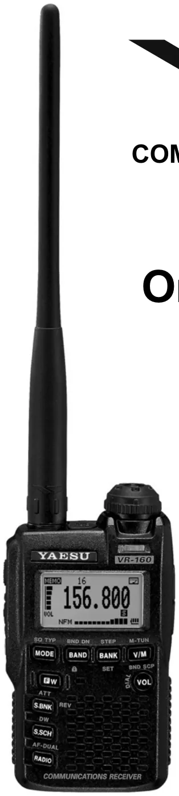
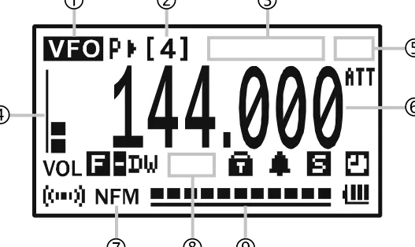
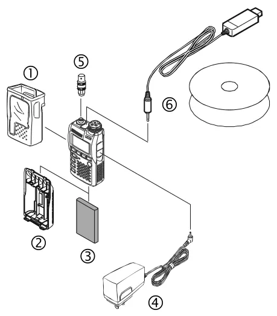
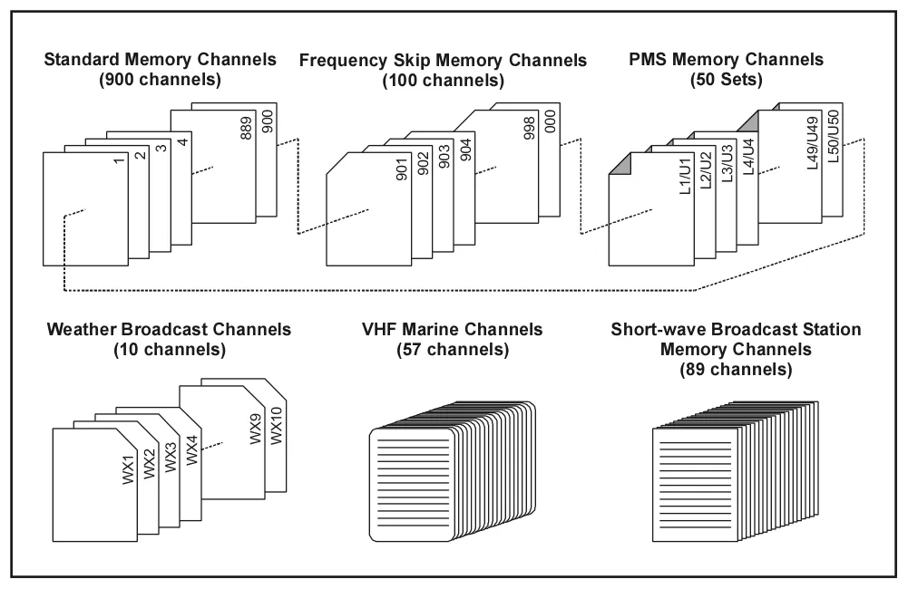
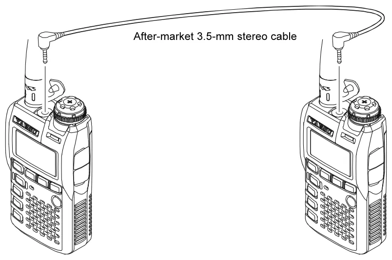
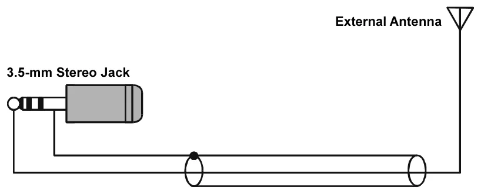
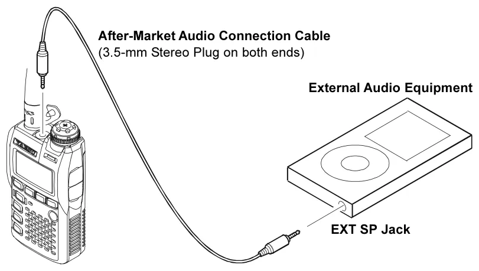
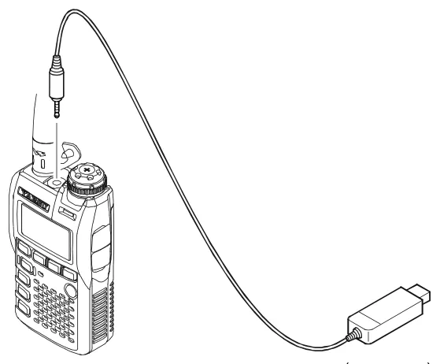
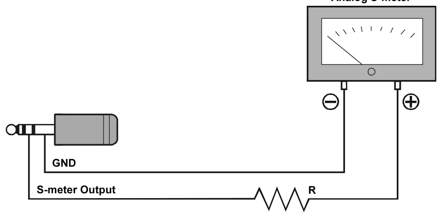

<!DOCTYPE html>
<html lang="en">
<head>
  <meta charset="utf-8">
  <title>Yaesu VR 160 Operating Manual</title>
  <meta name="title" content="Yaesu VR 160 Operating Manual">
<meta name="category" content="manuals">
<meta name="source" content="pdfs/public/basic/nav-comms_manual_yaesu_vr-160.pdf">
<meta name="sha256" content="13ab04df92e5">
<meta name="pipeline" content="pymupdf4llm">
<meta name="generated" content="2026-11-23T14:39:30.193723Z">
  <style>
    :root { color-scheme: light; }
body { font-family: system-ui, sans-serif; margin: 0; background: #fff; color: #1a1a1a; line-height: 1.6; }
.layout { display: block; max-width: none; margin: 0; padding: 0; }
/* Fixed sidebar: Back to index + Contents always stay visible */
nav.toc {
  position: fixed;
  top: 0;
  left: 0;
  width: 16rem;
  height: 100vh;
  overflow-y: auto;
  z-index: 100;
  background: #fff;
  border-right: 1px solid #ddd;
  padding: 1rem 0.75rem;
  box-sizing: border-box;
  font-size: 0.85rem;
}
nav.toc .back { margin: 0 0 0.75rem; font-weight: 600; font-size: 0.95rem; }
nav.toc .back a { color: #0b57d0; text-decoration: none; }
nav.toc .back a:hover { text-decoration: underline; }
nav.toc .toc-title { color: #1a1a1a; font-weight: 600; margin: 0 0 0.5rem; }
nav.toc ul { list-style: none; padding: 0; margin: 0; }
nav.toc li { margin: 0.25rem 0; }
nav.toc a { color: #0b57d0; text-decoration: none; }
nav.toc a:hover { text-decoration: underline; }
/* Main content shifted right of the fixed sidebar */
.layout:has(nav.toc) main {
  margin-left: 16rem;
  padding: 1.5rem 2rem;
  max-width: calc(100vw - 16rem);
  min-width: 0;
  overflow-x: auto;
  box-sizing: border-box;
}
/* Sticky back bar for pages without a TOC (scans, posters) */
.back-bar {
  position: sticky;
  top: 0;
  z-index: 10;
  background: #fff;
  padding: 0.6rem 1rem;
  margin: -1.5rem -1.5rem 1.25rem -1.5rem;
  border-bottom: 1px solid #eee;
  font-weight: 500;
}
.back-bar a { color: #0b57d0; text-decoration: none; }
.back-bar a:hover { text-decoration: underline; }
main { max-width: none; min-width: 0; overflow-x: auto; }
h1 { font-size: 1.8rem; color: #1a1a1a; margin: 0 0 0.5rem; }
h2, h3, h4, h5, h6 { color: #1a1a1a; margin-top: 1.8rem; font-size: 1.15rem; }
a { color: #0b57d0; }
.meta { font-size: 0.8rem; color: #555; }
figure { margin: 1.5rem 0; background: #f6f6f6; padding: 1rem; border: 1px solid #ddd; border-radius: 6px; max-width: 100%; }
figure img { max-width: 100%; height: auto; background: #fff; cursor: zoom-in; }
figcaption { font-size: 0.85rem; color: #555; margin-top: 0.5rem; }
button.zoom { background: none; border: 0; padding: 0; display: block; width: 100%; max-width: 100%; cursor: zoom-in; }
dialog { max-width: 90vw; max-height: 90vh; background: #fff; color: #1a1a1a; border: 1px solid #ccc; border-radius: 8px; padding: 1rem; }
dialog img { max-width: 100%; max-height: 75vh; background: #fff; }
dialog::backdrop { background: rgba(0,0,0,0.5); }
ul { padding-left: 1.2rem; }
table { border-collapse: collapse; width: 100%; max-width: 100%; margin: 1rem 0; }
th, td { border: 1px solid #bbb; padding: 0.4rem 0.6rem; text-align: left; vertical-align: top; }
th { background: #f0f0f0; font-weight: 600; }
@media (max-width: 800px) {
  nav.toc {
    position: sticky;
    top: 0;
    left: auto;
    width: 100%;
    height: auto;
    max-height: 45vh;
    border-right: 0;
    border-bottom: 1px solid #ddd;
  }
  .layout:has(nav.toc) main {
    margin-left: 0;
    padding: 1rem;
    max-width: none;
  }
  .back-bar { margin: -1rem -1rem 1rem -1rem; }
}
  </style>
</head>
<body>
  <div class="layout">
    <nav class="toc" aria-label="Contents"><p class="back"><a href="../../index.html">← Back to index</a></p><p class="toc-title">Contents</p><ul><li><a href="#antenna-installation">Antenna Installation — 8</a></li><li><a href="#installation-of-fnb-82li-battery-pack">Installation of FNB-82LI Battery Pack — 9</a></li><li><a href="#battery-charging">Battery Charging — 10</a></li><li><a href="#battery-life-information">Battery Life Information — 11</a></li><li><a href="#switching-power-on-and-off">Switching Power On and Off — 12</a></li><li><a href="#adjusting-the-volume-level">Adjusting the Volume Level — 12</a></li><li><a href="#squelch-adjustment">Squelch Adjustment — 13</a></li><li><a href="#selecting-the-operating-band">Selecting the Operating Band — 14</a></li><li><a href="#frequency-navigation">Frequency Navigation — 15</a></li><li><a href="#am-and-fm-broadcast-reception">AM and FM Broadcast Reception — 16</a></li><li><a href="#keyboard-locking">Keyboard Locking — 18</a></li><li><a href="#adjusting-the-keypad-beeper-volume-level">Adjusting the Keypad Beeper Volume Level — 18</a></li><li><a href="#keypad-lcd-illumination">Keypad/LCD Illumination — 19</a></li><li><a href="#changing-the-receiving-mode">Changing the Receiving Mode — 19</a></li><li><a href="#changing-the-channel-steps">Changing the Channel Steps — 20</a></li><li><a href="#s-meter-squelch">S-meter Squelch — 21</a></li><li><a href="#checking-the-battery-voltage">Checking the Battery Voltage — 22</a></li><li><a href="#checking-the-temperature">Checking the Temperature — 22</a></li><li><a href="#band-scope-operation">Band Scope Operation — 23</a></li><li><a href="#tone-squelch-operation">Tone Squelch Operation — 24</a></li><li><a href="#dcs-operation">DCS Operation — 26</a></li><li><a href="#tone-search-scanning">Tone Search Scanning — 28</a></li><li><a href="#tone-squelch-dcs-bell-operation">Tone Squelch/DCS Bell Operation — 29</a></li><li><a href="#memory-storage">Memory Storage — 33</a></li><li><a href="#memory-recall">Memory Recall — 34</a></li><li><a href="#labeling-memories">Labeling Memories — 34</a></li><li><a href="#memory-offset-tuning">Memory Offset Tuning — 36</a></li><li><a href="#moving-memory-data-to-the-vfo">Moving Memory Data to the VFO — 36</a></li><li><a href="#masking-memories">Masking Memories — 37</a></li><li><a href="#memory-bank-operation">Memory Bank Operation — 38</a></li><li><a href="#memory-only-mode">Memory Only Mode — 40</a></li><li><a href="#weather-broadcast-channels">Weather Broadcast Channels — 41</a></li><li><a href="#vhf-marine-channels">VHF Marine Channels — 42</a></li><li><a href="#short-wave-broadcast-station-memory-channels">Short-wave Broadcast Station Memory Channels — 43</a></li><li><a href="#vfo-scanning">VFO Scanning — 44</a></li></ul></nav>
    <main>
      <h1>Yaesu VR 160 Operating Manual</h1>
      <p class="meta">Category: manuals · Source: pdfs/public/basic/nav-comms_manual_yaesu_vr-160.pdf · SHA: 13ab04df92e5</p>
      <h5 id="am-fm-wfm">AM/FM/WFM</h5>
<h1 id="vr-160">VR-160</h1>
<p>VERTEX STANDARD CO., LTD.
4-8-8 Nakameguro, Meguro-Ku, Tokyo 153-8644, Japan
VERTEX STANDARD
US Headquarters
10900 Walker Street, Cypress, CA 90630, U.S.A.
YAESU UK LTD.
Unit 12, Sun Valley Business Park, Winnall Close
Winchester, Hampshire, SO23 0LB, U.K.
VERTEX STANDARD HK LTD.
Unit 5, 20/F., Seaview Centre, 139-141 Hoi Bun Road,
Kwun Tong, Kowloon, Hong Kong
VERTEX STANDARD (AUSTRALIA) PTY., LTD.
Normanby Business Park, Unit 14/45 Normanby Road
Notting Hill 3168, Victoria, Australia</p><figure><button aria-label="Enlarge Figure from page 1" class="zoom" data-dialog="fig-1" type="button"></button><figcaption>Figure from page 1</figcaption><dialog id="fig-1"><p>Figure from page 1</p><form method="dialog"><button>Close</button></form></dialog></figure><ul>
<li>
<p>Controls &amp; Connections — 2</p>
</li>
<li>
<p>Keypad Functions — 3</p>
</li>
<li>LCD Display — 4</li>
<li>Accessories &amp; Options — 5</li>
<li>Inportant Notice — 6</li>
<li>
<p>Installation of Accessories — 8</p>
</li>
<li><a href="#antenna-installation">Antenna Installation — 8</a></li>
<li><a href="#installation-of-fnb-82li-battery-pack">Installation of FNB-82LI Battery Pack — 9</a></li>
<li><a href="#battery-charging">Battery Charging — 10</a></li>
<li>Installation of FBA-37 Alkaline Battery Case — 11</li>
<li><a href="#battery-life-information">Battery Life Information — 11</a></li>
<li>
<p>Operation — 12</p>
</li>
<li><a href="#switching-power-on-and-off">Switching Power On and Off — 12</a></li>
<li><a href="#adjusting-the-volume-level">Adjusting the Volume Level — 12</a></li>
<li><a href="#squelch-adjustment">Squelch Adjustment — 13</a></li>
<li><a href="#selecting-the-operating-band">Selecting the Operating Band — 14</a></li>
<li><a href="#frequency-navigation">Frequency Navigation — 15</a></li>
<li><a href="#am-and-fm-broadcast-reception">AM and FM Broadcast Reception — 16</a></li>
<li>
<p>AF-DUAL Operation — 17</p>
</li>
<li>
<p>Advanced Operation — 18</p>
</li>
<li><a href="#keyboard-locking">Keyboard Locking — 18</a></li>
<li><a href="#adjusting-the-keypad-beeper-volume-level">Adjusting the Keypad Beeper Volume Level — 18</a></li>
<li><a href="#keypad-lcd-illumination">Keypad/LCD Illumination — 19</a></li>
<li><a href="#changing-the-receiving-mode">Changing the Receiving Mode — 19</a></li>
<li><a href="#changing-the-channel-steps">Changing the Channel Steps — 20</a></li>
<li><a href="#s-meter-squelch">S-meter Squelch — 21</a></li>
<li><a href="#checking-the-battery-voltage">Checking the Battery Voltage — 22</a></li>
<li><a href="#checking-the-temperature">Checking the Temperature — 22</a></li>
<li><a href="#band-scope-operation">Band Scope Operation — 23</a></li>
<li>
<p>Tone Squelch/DCS Operation — 24</p>
</li>
<li><a href="#tone-squelch-operation">Tone Squelch Operation — 24</a></li>
<li><a href="#dcs-operation">DCS Operation — 26</a></li>
<li>
<p>DCS Code Inversion — 27</p>
</li>
<li><a href="#tone-search-scanning">Tone Search Scanning — 28</a></li>
<li><a href="#tone-squelch-dcs-bell-operation">Tone Squelch/DCS Bell Operation — 29</a></li>
<li>
<p>Programming the User Beep — 30</p>
</li>
<li>
<p>Memory Mode — 32</p>
</li>
<li>
<p>Regular Memory Channel Operation — 33</p>
</li>
<li><a href="#memory-storage">Memory Storage — 33</a></li>
<li><a href="#memory-recall">Memory Recall — 34</a></li>
<li><a href="#labeling-memories">Labeling Memories — 34</a></li>
<li><a href="#memory-offset-tuning">Memory Offset Tuning — 36</a></li>
<li><a href="#moving-memory-data-to-the-vfo">Moving Memory Data to the VFO — 36</a></li>
<li><a href="#masking-memories">Masking Memories — 37</a></li>
<li><a href="#memory-bank-operation">Memory Bank Operation — 38</a></li>
<li>
<p>Assigning Memories to a Memory Bank — 38</p>
</li>
<li>Memory Bank Recall — 38</li>
<li>Removing Memories from a Memory Bank — 39</li>
<li>Changing a Memory Bank’s Name — 39</li>
<li><a href="#memory-only-mode">Memory Only Mode — 40</a></li>
<li>
<p>Special Memory Channel Operation — 41</p>
</li>
<li><a href="#weather-broadcast-channels">Weather Broadcast Channels — 41</a></li>
<li><a href="#vhf-marine-channels">VHF Marine Channels — 42</a></li>
<li><a href="#short-wave-broadcast-station-memory-channels">Short-wave Broadcast Station Memory Channels — 43</a></li>
<li>
<p>Setting the Scan-Resume Mode — 44</p>
</li>
<li><a href="#vfo-scanning">VFO Scanning — 44</a></li>
</ul>
<p>How to Skip (Omit) a Frequency</p>
<ul>
<li>during VFO Scan — 47</li>
</ul>
<p>Setting the Squelch Level</p>
<ul>
<li>during active Scanning Operation — 47</li>
<li><a href="#memory-scanning">Memory Scanning — 48</a></li>
</ul>
<p>How to Skip (Omit) a Channel</p>
<ul>
<li>during Memory Scan Operation — 49</li>
<li>Preferential Memory Scan — 50</li>
<li>Memory Bank Scan — 51</li>
<li>Programmable (Band Limit) Memory Scan (PMS) — 52</li>
<li>Priority Channel Scanning (Dual Watch) — 53</li>
<li><a href="#automatic-lamp-illumination-on-scan-stop">Automatic Lamp Illumination on Scan Stop — 54</a></li>
<li><a href="#band-edge-beeper">Band Edge Beeper — 54</a></li>
<li>
<p>Smart Search Operation — 56</p>
</li>
<li>
<p>Setting the Smart Search Mode — 56</p>
</li>
<li>Storing Smart Search Memories — 57</li>
<li>
<p>Channel Counter Operation — 58</p>
</li>
<li>
<p>Setting the Channel Counter Sweep Width — 59</p>
</li>
<li>CW Learning Feature — 60</li>
<li>CW Training Feature — 62</li>
<li>
<p>Miscellaneous Setting — 63</p>
</li>
<li><a href="#password">Password — 63</a></li>
<li>ATT (Front End Attenuator) — 64</li>
<li><a href="#receive-battery-saver-setup">Receive Battery Saver Setup — 64</a></li>
<li><a href="#wakeup-feature">Wakeup Feature — 65</a></li>
<li><a href="#disabling-the-busy-indicator">Disabling the BUSY Indicator — 66</a></li>
<li>Automatic Power-Off (APO) Feature — 66</li>
<li><a href="#automatic-power-on-feature">Automatic Power-On Feature — 67</a></li>
<li><a href="#my-bands-operation">My Bands Operation — 68</a></li>
<li><a href="#changing-the-status-of-the-vol-key">Changing the Status of the [[] VOL []] Key — 69</a></li>
<li><a href="#s-meter-symbols">S-meter Symbols — 69</a></li>
<li>Cloning — 70</li>
<li>Set (Menu) Mode — 71</li>
<li>
<p>Appendix — 88</p>
</li>
<li><a href="#external-am-radio-antenna-connections">External AM Radio Antenna Connections — 88</a></li>
<li>Line-In Audion Connections — 89</li>
<li><a href="#computer-connections">Computer Connections — 90</a></li>
<li><a href="#s-meter-connections">S-meter Connections — 91</a></li>
<li>Specifications — 92</li>
<li>Reset Procedures — 94</li>
</ul><p>The YAESU VR 160 is a high performance micro miniature communications receiver
covering frequencies from 100 kHz to 1299.995 MHz on the AM and FM (Wide and
Narrow bandwidths) modes. Coverage includes the AM and FM broadcast bands, HF Shortwave Bands, VHF and UHF TV bands, the VHF AM aircraft band, and a wide range of
commercial and public safety frequencies!</p>
<p>The incredibly small size allows you to take it anywhere - hiking, skiing, or walking around
town. Its operating flexibility brings the user many avenues of listening enjoyment. The
tiny FNB-82LI Lithium-Ion Battery Pack provides more than 20 hours of receiver operation.</p>
<p>The VR-160 internal antenna bar provides good AM broadcast reception without the need
of an external antenna.</p>
<p>The large High-resolution Dot Matrix LCD display provides clear, easily read frequency
indication. The Band Scope function provides a high-resolution display of the relative
signal strengths of up to ±50 adjacent channels!</p>
<p>Additional features include the CTCSS and DCS squelch system, which help prevent false
activation of the receiver by radar or spurious signals from other transmitters. A security
Password may be set, which will allow you to turn on and operate your radio only after the
Password is entered.</p>
<p>The S-Meter Squelch may be adjusted to open at a programmed signal level, thus reducing
guesswork in setting the squelch threshold.</p>
<p>Additional equipment may be connected to the top panel ACC jack for expanded operation.</p>
<p>We appreciate your purchase of the VR-160, and encourage you to read this manual thoroughly, to learn about the many exciting features of your new YAESU communications
receiver!</p><p>DIAL Knob
The main tuning Dial is used for setting the operating frequency. This
knob is also used for audio volume
level, menu selections, and other adjustments.
Pull the knob upward to release the
mechanical dial lock, and then rotate
the Dial knob.</p>
<p>ANTENNA Jack
Connect the supplied
flexible antenna (or another antenna presenting
a 50-Ohm impedance)
here.</p>
<p>ACC Jack
This four-conductor miniature jack provides connection points for an AM
antenna, Line audio input,
External computer, and
S-meter signal output.</p><p>KEYPAD FUNCTIONS</p>
<p>|KEY|PRIMARY FUNCTION
(PRESS KEY)|SECONDARY FUNCTION
(PRESS [F/W] + KEY)|THIRD FUNCTION
(PRESS AND HOLD KEY)|
|---|---|---|---|
||Switches the operating
mode.|Activates Tone Squelch or
DCS operation.|No Action.|
||Moves operation to the
next-highest frequency
band.
Activates the “Memory
Bank” feature while in the
Memory Recall mode.|Moves operation to the
next-lowest frequency
band.|Activates the key lockout
feature.|
||Activates the “Memory
Bank” feature.|Selects the synthesizer
steps to be used during
VFO operation.
Selects the Memory Bank
while in the Memory Bank
mode.|Enters the Set (Menu)
Mode.|
||Switches frequency con-
trol between the VFO and
Memory Systems.|Activates the “Memory
Tune” function while in the
Memory Recall mode.|Activates the Band Scope
feature while in the VFO
mode.|
||Activates the “Alternate”
key function.|Disables the “Alternate”
key function.|Activates the “Memory
Write” mode (for memory
channel storage).|
||Engage the Special
Search mode.|Activates the receiver “At-
tenuator” to reduce the
receiving signal.|Monitor the opposite fre-
quency while recalling the
semi-duplex VHF Marine
channel.|
||Recalls the “Weather
Broadcast” channels and
Short-wave broadcast sta-
tion channels.|Activates the Dual Watch
feature.|No Action.|
||Enter the Broadcast Re-
ception mode.
While in the Broadcast Re-
ception mode, press the
[BAND] key to toggle the
receiving band between
“AM” broadcast band and
“FM” broadcast band.|Activates the AF-DUAL
Operation.|Enables the antenna se-
lection to be used.|
||No Action.|Toggle theDIAL knob
function between the “Fre-
quency Control” and “Re-
ceiver Audio Control”.|Rotate theDIAL knob
while holding the[VOL]
key to adjust the audio vol-
ume level.|</p><p>LCD DISPLAY</p>
<ul>
<li>
<p>FREQUENCY CONTROL
:VFO Mode
:Memory Mode
:Memory Tune Mode
:Memory Bank Mode
:Programmable Memory Scan Mode</p>
</li>
<li>
<p>OPERATING BAND NUMBER (while using VFO Mode)
MEMORY CHANNEL NUMBER (while using MR “Memory Recall” Mode)</p>
</li>
<li>
<p>OPERATING FREQUENCY (while using Alpha-Numeric “Tag” Operation)</p>
</li>
<li>
<p>VOLUME LEVEL</p>
</li>
<li>
<p>ACC JACK CONFIGURATION
:Clone Data Input/Output
:AM Antenna Input
:Line Audio Input
:External Computer Input/Output</p>
</li>
<li>
<p>OPERATING FREQUENCY</p>
</li>
</ul>
<dl>
<dd>Secondary Keypad Active</dd>
<dd>Semi-Duplex Channel
DW: Dual Watch Active</dd>
</dl>
<p>ICON
P: Priority Channel
P(Blinking): Sub frequency is received</p>
<p>(while using AF-DUAL operation)
�: Skip Memory Channel
�(Blinking): Preference Memory Channel
ATT:Attenuator Active</p>
<ul>
<li>
<p>OPERATING MODE
NFM: FM
WFM:Wide FM
AM: AM</p>
</li>
<li>
<p>SQUELCH TYPE &amp; RADIO MODE
DW: Dual Watch Active
TSQ: Tone Squelch Active
DCS: Digital Code Squelch Active
RTN: Reverse Tone Squelch Active
PR: User Programmed Reverse CTCSS Decoder Active</p>
</li>
</ul>
<dl>
<dd>Key Lock Active</dd>
<dd>Bell function Active</dd>
<dd>Battery Saver Active</dd>
<dd>Automatic Power-Off Active</dd>
<dt>:Receiving an FM broadcast in Stereo</dt>
<dd>Battery Indicator</dd>
</dl><figure><button aria-label="Enlarge Figure from page 6.    " class="zoom" data-dialog="fig-2" type="button"></button><figcaption>Figure from page 6.    </figcaption><dialog id="fig-2"><p>Figure from page 6.    </p><form method="dialog"><button>Close</button></form></dialog></figure><h6 id="supplied-accessories">SUPPLIED ACCESSORIES</h6>
<ul>
<li>FNB-82LI 3.7 V, 1100 mAh Rechargeable Lithium Ion Battery Pack — 1</li>
<li>PA-46C or PA-46U [�] AC Adapter — 1</li>
<li>YHA-66 Antenna — 1</li>
<li>Operating Manual — 1</li>
<li>Warranty Card — 1</li>
</ul>
<h6 id="available-options">AVAILABLE OPTIONS</h6>
<ul>
<li>
<p>CSC-92 Soft Case</p>
</li>
<li>
<p>FBA-37 Dry Cell Battery Case for 3 x “AA” Alkaline Cells</p>
</li>
<li>
<p>FNB-82LI 3.7 V, 1100 mAh Rechargeable Lithium Ion Battery Pack</p>
</li>
<li>
<p>PA-46C/U [�] AC Adapter</p>
</li>
<li>
<p>CN-3 BNC-to-SMA Adapter</p>
</li>
<li>
<p>ADAMS-5 Advanced Data Management System</p>
</li>
</ul>
<p>�: “C” suffix is for use with 230 VAC (Type-C plug), and “U” suffix is for use with 230
VAC (Type-BF plug).</p>
<p>Availability of accessories may vary. Some accessories are supplied as standard per local
requirements, while others may be unavailable in some regions. Consult your Yaesu dealer
for details regarding these and any newly available options Connection of any non-Yaesuapproved accessory, should it cause damage, may void the Limited Warranty on this apparatus.</p><figure><button aria-label="Enlarge Figure from page 7.   " class="zoom" data-dialog="fig-3" type="button"></button><figcaption>Figure from page 7.   </figcaption><dialog id="fig-3"><p>Figure from page 7.   </p><form method="dialog"><button>Close</button></form></dialog></figure><p>Please read this manual carefully before using the VR-160 radio.</p>
<h6 id="warning">~~WARNING~~</h6>
<p>Never use this equipment in a prohibited area, such as airplane, hospital etc.</p>
<p>Never operate this equipment
while driving a vehicle, or motorcycle.</p>
<p>Never modify the Battery Pack.</p>
<h6 id="caution">~~CAUTION~~</h6>
<p>When using the FBA-37 Battery
Case, install the batteries according to instructions. Check the polarity of the battery carefully.</p>
<p>Do not use any improper operating voltage.</p>
<p>Do not modify this equipment.</p>
<p>Never attach metal parts, such as
a paper clip, or a necklace etc. to
this receiver.</p>
<p>Never touch the Battery Pack or
Battery Case with wet hands.</p>
<p>This equipment is not waterproof.
When splashed with water, turn off
the power switch immediately,
then thoroughly dry the equipment
with a soft cloth.</p>
<p>In the event of abnormal operation, the smell of smoke etc., turn
off the power switch immediately,
and then remove the battery pack
from the radio. Disconnect the
batter charger from the AC o t</p><h6 id="caution-2">~~CAUTION~~</h6>
<p>Replace the battery pack if it is
damaged or deformed.</p>
<p>If charging is not completed even
if after ample charge time is
passed, disconnect the battery
charger from the AC outlet immediately.</p>
<h6 id="note">~~NOTE~~</h6>
<p>Use only the Vertex Standard
FNB-82LI Battery Pack.</p>
<p>Use only the Vertex Standard PA46C/U AC Adapter.</p>
<p>Keep the Battery Pack terminals
clean.</p>
<p>Do not throw this equipment. Do not wipe the case with thinner
and/or benzene.</p>
<p>Do not place this equipment near
a heater.</p>
<p>Do not hold or swing this equipment around with the antenna.</p>
<p>Do not use this equipment at the
crowded place.</p>
<p>Do not expose this equipment to
direct sunlight.</p>
<p>Do not place this equipment in a
location exposed to dust and/or
high humidity.</p>
<p>Do not charge the battery with an
improper battery charger.</p>
<p>Do not charge the battery in a
place where flammable gas is generated.</p>
<p>Perform the battery charging
where the ambient temperature
range is +5 °C to +35 °C.</p>
<p>Properly recycle discarded battery
packs after affixing tape across the
terminals.</p><h6 id="antenna-installation">ANTENNA INSTALLATION</h6>
<p>The supplied antenna provides good results over the entire frequency range
of the transceiver. However, for enhanced base station medium-wave and
shortwave reception, you may wish to connect an external (outside) antenna, as the supplied antenna is very small and cannot be expected to
provide high performance at these frequencies.</p>
<p>To install the supplied antenna, hold the bottom end of the antenna and
screw it onto the mating connector on the transceiver until it is snug. Do
not over-tighten or use extreme force.</p>
<p>Notes:
When installing the supplied antenna, never hold the upper part of the
antenna while screwing it onto the mating connector on the transceiver.</p><h6 id="installation-of-fnb-82li-battery-pack">INSTALLATION OF FNB-82LI BATTERY PACK</h6>
<p>The FNB-82LI is a high-performance Lithium-Ion battery providing high capacity in a
very compact package. Under normal use, the FNB-82LI may be used for approximately
300 charge cycles, after which operating time may be expected to decrease. If you have an
older battery that is displaying diminished capacity, you should replace the pack with a
new one. Installation of the battery is easy and quick:</p>
<ol>
<li>Slide the Battery Cover
Latch to the Unlock position and then slide the Battery Cover toward the bottom to remove it.</li>
<li>Install the FNB-82LI into
the Battery Compartment.</li>
<li>Replace the Battery Cover
and then slide the Battery
Cover Latch into the
“Lock” position.</li>
</ol>
<p>UNLOCK</p>
<p>Important Note:
There is a small stud in the Battery Compartment of the VR-160. This stud is a switch
for the battery detection. Please be careful not to break this stud while changing the
battery.</p>
<ul>
<li>
<p>Risk of explosion if battery is replaced by incorrect type. Dispose of used batteries
according to the instructions.</p>
</li>
<li>
<p>Do not expose the Battery Pack to excessive heat such as direct sunshine, fire, or the
like.</p>
</li>
<li>
<p>Perform the battery charging when the ambient temperature range is +5 °C to +35 °C.
Charging out of this range could cause damage to the battery pack.</p>
</li>
<li>
<p>Use only the Vertex Standard Co., Ltd. Model PA-46C/U AC Adapter.</p>
</li>
</ul>
<p>~~IMPORTANT NOTE~~</p>
<p>Always use the Vertex Standard Co., Ltd. Model FNB-82LI Battery Pack.</p><h6 id="battery-charging">BATTERY CHARGING</h6>
<p>If the battery has never been used, or
its charge is depleted, it may be
charged by connecting the PA-46 AC
Adapter, as shown in the illustration,
to the EXT DC jack.</p>
<p>While the battery is being charged, the
display will indicate “CHGING” and
the BUSY indicator will glow red. The
S-meter will deflect according to the
charging status.</p>
<p>When charging is finished, the display
will change to indicate “CHGFUL” and
the BUSY indicator will glow green.</p>
<p>The PA-46 is only designed for the charging of the VR-160’s battery, and is not suitable for other purposes. Please be advised that the
PA-46 may contribute noise to TV and radio reception in the immediate vicinity, so we do not recommend its use adjacent to such devices.</p>
<p>Important Note:
1) Perform battery charging when the ambient temperature range
is +5 °C to +35 °C. Charging out of this range could cause
damage to the battery pack.
2) If the charge is not completed in three hours or if “CHG ERR” appears in the display, the battery may have deteriorated. Do not attempt to forcibly charge the battery, Please contact your Yaesu dealer.
3) If you do not use the VR-160 for a long time, remove the FNB82LI Lithium-Ion battery pack from the VR-160, as battery leakage could cause damage to the VR-160 and FNB-82LI.
4) When an FNB-82LI Lithium-Ion battery pack is not used for a long time, please
remove it from the transceiver. Also, while in storage, the charge will drain slightly
over time and the battery should be recharged 50 % each six months.</p><h6 id="installation-of-fba-37-alkaline-battery-case-option">INSTALLATION OF FBA-37 ALKALINE BATTERY CASE (OPTION)</h6>
<p>The optional FBA-37 Battery Case allows operation of the VR-160 using three “AA” size
alkaline batteries.</p>
<p>When installing batteries, insert the (–) end first, then press in the (+) end so the battery
snaps into place. Always replace all three batteries at the same
time, paying attention to the polarity indicated inside the case.</p>
<p>The FBA-37 must not be used with rechargeable cells. The FBA37 does not contain the thermal and over-current protection circuits (provided in the FNB-82LI Lithium-Ion Battery Pack)
required when utilizing Ni-Cd and Ni-MH cells.</p>
<p>Important Note:
1) The FBA-37 is designed for use only with AA-type Alkaline cells.
2) If you do not use the VR-160 for a long time, remove the alkaline batteries from the
FBA-37, as battery leakage could cause damage to the VR-160 and FBA-37.
3) Never connect the external DC power supply to the VR-160, when the FBA-37 Battery Pack is installed in the VR-160.</p>
<h6 id="battery-life-information">BATTERY LIFE INFORMATION</h6>
<p>you charge the battery soon.</p>
<p>|OPERATING BAND|BATTERY LIFE (APPROX.)
FNB-82LI FBA-37|Col3|Col4|Col5|Col6|Col7|BATTERY INDICATOR|
|---|---|---|---|---|---|---|---|
||||||||: Full Battery Power|
|Amateur Band1|23 hours|28 hours|||||: Enough Battery Power|
||||||||: Lower Battery Power|
||||||||: Poor Battery Power|
|Broadcast Band2|20 hours|25 hours|||||(Blinking): Prepare to charge (or replace)|
||||||||the Battery|</p>
<p>�1: Receiving Ratio (1 : 3 = RX : Squelched)
�2: Continuous signal reception.
VOL Level: 10 (Factory Default)</p>
<p>The current battery voltage can be displayed manually on the display, via the Set Mode
Item 22: DC VOLTAGE.</p>
<p>Battery capacity may be reduced during extremely cold weather operation. Keeping the
radio inside your parka may help preserve the full charge capacity.</p><p>Hi! I m R. F. Radio, and I ll be helping you along as you learn the many fea
tures of the VR-160. I know you’re anxious to get on the air, but I encourage
you to read the “Operation” section of this manual as thoroughly as possible, so
you’ll get the most out of this fantastic new radio. Now. . .let’s get operating!</p>
<h6 id="switching-power-on-and-off">SWITCHING POWER ON AND OFF</h6>
<ol>
<li>Be sure the Battery Pack is installed, and that the battery is fully charged. Connect the
antenna to the top panel ANTENNA jack.</li>
<li>Press and hold in the orange POWER switch (on the left
side of the radio) for one second. Two beeps will be heard
when the switch has been held long enough, and the current
DC supply voltage will appear on the display for 2 seconds.
If you are using the FNB-82LI Battery Pack, the small “Lit”
icon at the top of the display confirms that the Lithium-Ion
Battery Pack has been detected. After this 2-second interval, the display will resume
its normal indication of the operating frequency.</li>
<li>To turn the VR-160 off, press and hold in the orange POWER switch again for one
second.</li>
</ol>
<p>1) If you don’t hear the two “Beep” tones when the radio comes on, the Beeper
may have been disabled via the Set Mode Item 13: BEEP SELECT. See page
77, which tells you how to reactivate the Beeper.
2) You can change the Opening Message (DC supply voltage indication) to any desired
message (up to 6 characters) via Set Mode Item 37: OPEN MESSAGE; see page 82 for
details.</p>
<h6 id="adjusting-the-volume-level">ADJUSTING THE VOLUME LEVEL</h6>
<p>Pull the DIAL knob to unlock the mechanical dial lock, then
rotate the DIAL knob while pressing and holding the [VOL] key
to set the desired audio level. Clockwise rotation increases the
volume level.</p>
<p>1) You may set the Audio Output Level to the
Speaker, and the Earphone Output Level individually. The “SP” notation (which means Speaker) appears in the display while
adjusting the Speaker Output Level. The “HP” notation (which means Headphone)
appears in the display slot while adjusting the Earphone Output Level.
2) When pressing the [F/W] key followed by the [VOL] key, the DIAL knob function
changes to the Volume Level selection instead of the frequency control. In this case, the
“VOL” notation on the display blinks. Pressing the [F/W] key followed by the [VOL]</p><h6 id="adjusting-the-volume-level-2">ADJUSTING THE VOLUME LEVEL</h6>
<p>may change the [VOL] key function via Set Mode Item 60: VOLUME MODE. See page
86 for details.</p>
<h6 id="squelch-adjustment">SQUELCH ADJUSTMENT</h6>
<p>The VR-160’s Squelch system allows you to mute the background noise when no signal is
being received. The Squelch system makes “standby” operation more pleasant, and significantly reduces battery current consumption.</p>
<p>The Squelch system may be adjusted independently for the FM and Wide-FM (FM Broadcast) modes.</p>
<ol>
<li>Press the [F/W] key, followed by the MONI switch on the left
side of the radio. This provides a “Short-cut” to Set Mode Item
49: SQL LEVEL.</li>
<li>Now, rotate the DIAL knob to set the Squelch so that the background noise is just silenced (typically at a setting of about “1”
or “2” for AM/FM, and “2” or “3” for Wide-FM/FM Broadcast/AM Broadcast). This is the point of maximum sensitivity to
weak signals.
Note: Do not forget to pull the DIAL knob to rotate the DIAL knob.</li>
<li>When you are satisfied with the Squelch threshold setting, press the MONI switch
briefly to save the new setting and exit to normal operation.</li>
</ol>
<p>1) The VR-160 squelch threshold level can be individually set on the AM
mode, FM mode, Wide FM mode, and AM Broadcast mode.
2) A special “S-meter Squelch” feature is provided on the VR-160. This feature allows you to set the squelch so only signals exceeding a certain S-meter level will
open the squelch. See page 21 for details.</p><h6 id="selecting-the-operating-band">SELECTING THE OPERATING BAND</h6>
<p>The VR-160 covers an incredibly wide
frequency range, over which a number
of different operating modes are used.
Therefore, the VR-160’s frequency coverage has been divided into different operating bands, each of which has its own
pre-set channel steps and operating
modes. You can change the channel steps
and operating modes later, if you like (see
page 20).</p>
<p>To Change Operating Bands:
1. Press the [BAND] key repeatedly. You will see the LCD
indication move toward a higher frequency band each time
you press the [BAND] key.
The Band Number corresponding to the receiver frequency
of the selected Memory Channel will be displayed.
2. If you wish to move the operating band selection downward
(toward lower frequencies), press the [F/W] key first, then press
the [BAND] key.
3. Once you have selected the desired band, you may initiate manual
tuning (or scanning) per the discussion in the next chapter.</p>
<p>Operating Band</p>
<p>1) The VR-160 has an AM / FM broadcast radio. You
can receive these bands independently. See page 16 for details.
2) If desired, you may omit (skip) one or more bands from the band selection
loop for faster recall of your favorite operating bands. See page 68 for details.</p><h6 id="frequency-navigation">FREQUENCY NAVIGATION</h6>
<p>The VR-160 will initially be operating in the “VFO” mode. This is a channelized system
which allows free tuning throughout the currently-selected operating band.</p>
<p>Two basic frequency navigation methods are available on the VR-160:</p>
<p>~~1~~ ~~[)]~~ ~~TUNING DIAL~~</p>
<p>Rotation of the DIAL knob allows tuning in the pre-programmed
steps established for the current operating band. Clockwise rotation of the DIAL knob causes the VR-160 to be tuned toward
a higher frequency, while counter-clockwise rotation will lower
the operating frequency.</p>
<p>If you press the [F/W] key momentarily, then rotate the DIAL
knob, frequency steps of 1 MHz will be selected. This feature is extremely useful for
making rapid frequency excursions over the wide tuning range of the VR-160.</p>
<p>Note: Do not forget to pull the DIAL knob to rotate the DIAL knob.</p>
<p>~~2~~ ~~[)]~~ ~~SCANNING~~</p>
<p>From the VFO mode, press and hold in the SCAN switch for
one second to show theVFO scanner bandwidth selections. Rotate the DIAL knob to select the desired bandwidth for the VFO
scanner, press the SCAN switch briefly to begin scanning toward a higher frequency. The scanner will stop when it receives
a signal strong enough to break through the Squelch threshold.
The VR-160 will then hold on that frequency according to the setting of the “RESUME”
mode (Set Mode Item 45: SCAN RESUME). See page 83 for more details regarding Scan
Operation.</p>
<p>If you wish to reverse the direction of the scan (i.e. toward a lower frequency, instead of a
higher frequency), just rotate the DIAL knob one click in the counter-clockwise direction
while the VR-160 is scanning. The scanning direction will be reversed. To revert to scanning toward a higher frequency once more, rotate the DIAL knob one click clockwise.</p>
<p>Press the SCAN switch briefly to stop the scanning.</p>
<p>Notice
The VR-160 may receive very strong signals on the Image frequency. If you experience interference that you suspect may be coming in via an “image” path, you may
calculate the possible frequencies using the formulas below. This information may
be used in the design of effective countermeasures such as traps, etc.</p><h6 id="am-and-fm-broadcast-reception">AM AND FM BROADCAST RECEPTION</h6>
<p>The VR-160 includes provision for reception of AM and FM broadcasts. FM broadcast
reception, utilizes a wide-bandwidth filter and stereo decoder which provides excellent
fidelity.</p>
<ol>
<li>Press the [RADIO] key briefly to enter the Broadcast Reception mode.</li>
<li>Press the [BAND] key to toggle the receiving band between
“AM broadcast” and “FM broadcast”.
The AM broadcast coverage is 504 to 1791 kHz and utilizes AM mode. The “ [[] A []] ” notation (which means AM) appears on the top of the display and an “AM” icon appears
on the bottom left of the display.
The FM broadcast coverage is 76.00 to 107.90 MHz and
utilizes Wide-FM mode. The “ [[] F []] ” notation (which means
FM) appears on the top of the display and “WFM” icon
appears on the bottom left of the display.</li>
<li>Rotate the DIAL knob to select the desired station. When receiv
left of the display.
Note: Do not forget to pull the DIAL knob to rotate the DIAL
knob.</li>
<li>Press and hold the [RADIO] key for one second to enable the
antenna selection to be used by rotating the DIAL knob. Available selections are:
AM: “BAR ANTENNA” (Uses the internal Bar Antenna) or “BAR+EXT ANT” (Uses</li>
</ol>
<p>both the internal Bar Antenna and the Rubber Flex Antenna).
FM: “EXT ANTENNA” (Uses the Rubber Flex Antenna) or “EARPHONE ANT” (Uses</p>
<p>the Earphone Antenna).
5. When you finish the selection, press the [RADIO] key briefly to exit from the antenna
selection mode.
6. Press the [RADIO] key briefly again to exit from the AM and FM Broadcast Reception mode and return to normal operation.</p>
<p>If you wish to output the audio of the FM Broadcast station to the VR-160
internal speaker while using the earphone antenna, select Set Mode Item 48:
SPEAKER OUT to “SPEAKER”.</p><h6 id="am-and-fm-broadcast-reception-2">AM AND FM BROADCAST RECEPTION</h6>
<p>~~AF-DUAL OPERATION~~</p>
<p>The AF-DUAL Operation allows you to monitor your desired frequency while receiving
AM or FM broadcast stations.</p>
<p>When a signal is received in your desired frequency, the audio is output instead of the AM
or FM Broadcast station. When the signal drops on your desired frequency, the AF-DUAL
Operation is resumed as determined by the user settings in the below procedures.</p>
<ol>
<li>Set the VR-160 to the desired frequency using the VFO or Memory channel selection.</li>
<li>Press the [F/W] key then press the [RADIO] key. This provides
a “Short-cut” to Set Mode Item 02: AF DUAL.</li>
<li>Rotate the DIAL knob to select the resume mode of the AF-DUAL
Operation. Available selections are:
1 sec - 10 sec: When the selected time passes after your desired frequency signal
drops, the AM or FM Broadcast station will be heard from the speaker
and the AF-DUAL Operation is resumed.
OFF: Disable the AF-DUAL Operation.
Note: Do not forget to pull the DIAL knob to rotate the DIAL knob.</li>
<li>Press the [RADIO] key briefly to exit from the “Resume Mode Selection” mode of the
AF-DUAL Operation.</li>
<li>Press the [RADIO] key again to activate AF-DUAL Operation. The small “P” icon
appears above the volume level indicator on the display.</li>
<li>Press the [BAND] key to toggle the receiving band between “AM
broadcast” and “FM broadcast”.</li>
<li>Rotate the DIAL knob to select the desired Broadcast station.</li>
<li>When a signal is received in your desired frequency, its audio is
output to the speaker. The AM or FM Broadcast station will no
longer be heard. When your desired frequency signal drops, the
AM or FM Broadcast station will be heard from the speaker,
and AF-DUAL Operation is resumed (your desired frequency is monitored while the
AM broadcast station is heard from the speaker) according to the AF-DUAL Operation Resume mode selected in step 3 above.</li>
<li>You may monitor your desired frequency forcibly by holding the MONI switch.</li>
</ol>
<p>To disable the AF-DUAL Operation, just repeat the above procedure, rotating the DIAL
knob to select “OFF” in step 3 above.</p>
<p>1) You may change the frequency by rotating the DIAL knob while pressing
the MONI switch.</p><p>Now that you re mastered the basics of VR 160 operation, let s learn more about some of
the really neat features.</p>
<h6 id="keyboard-locking">KEYBOARD LOCKING</h6>
<p>In order to prevent accidental frequency change, various aspects of the VR-160’s keys and
switches may be locked out.</p>
<p>To activate the locking feature, press and hold in the [BAND] key</p>
<p>locking, repeat this process.</p>
<h6 id="adjusting-the-keypad-beeper-volume-level">ADJUSTING THE KEYPAD BEEPER VOLUME LEVEL</h6>
<p>A keypad beeper provides useful audible feedback whenever a key is pressed. The keypad
beeper level changes according to the receiver audio volume level setting. However, you
may adjust the volume balance between the receiving audio and keypad beeper via Set
Mode Item 11: BEEP LEVEL.</p>
<ol>
<li>Press and hold in the [BANK] key for one second to enter the Set mode.</li>
<li>Rotate the DIAL knob to select Set Mode Item 11: BEEP LEVEL.
Note: Do not forget to pull the DIAL knob to rotate the DIAL
knob.</li>
<li>Press the [BANK] key briefly to enable adjustment of this Item.</li>
<li>Rotate the DIAL knob to select the desired level.</li>
<li>When you have made your selection, press and hold in the</li>
</ol>
<p>[BANK] key for one second to save the new setting and return
to normal operation.</p>
<p>Additionally, if you want to turn the beep off:
1. Press and hold in the [BANK] key for one second to enter the Set mode.
2. Rotate the DIAL knob to select Set Mode Item 13: BEEP SELECT.
Note: Do not forget to pull the DIAL knob to rotate the DIAL
knob.
3. Press the [BANK] key briefly to enable adjustment of this Item.
4. Rotate the DIAL knob to change the setting to “OFF”.
5. Press and hold in the [BANK] key for one second to save the
new setting and return to normal operation.
6. If you wish to re-enable the Beeper, just repeat the above procedure, rotating the DIAL
knob to select “KEY” or “KY+SCN” in step “4” above.
KEY: The beeper sounds when you press any key.
KY+SCAN Th b d h k h th t</p><h6 id="keypad-lcd-illumination">KEYPAD/LCD ILLUMINATION</h6>
<p>Your VR-160 includes a reddish illumination lamp which aids in nighttime operation. The
red illumination yields clear viewing of the display in a dark environment, with minimal
degradation of your night vision. Three options for activating the lamp are provided:</p>
<p>KEY 2 sec - KEY 10 sec: Illuminates the Keypad/LCD for the selected illumination</p>
<p>time when any key pressed.
CONTINUOUS: Illuminates the Keypad/LCD continuously.
OFF: Disables the Keypad/LCD lamp.</p>
<p>Here is the procedure for setting up the Lamp mode:
1. Press and hold in the [BANK] key for one second to enter the Set mode.
2. Rotate the DIAL knob to select Set Mode Item 27: LAMP.
Note: Do not forget to pull the DIAL knob to rotate the DIAL
knob.
3. Press the [BANK] key briefly to enable adjustment of this Item.
4. Rotate the DIAL knob to select one of the three modes described
above.
5. When you have made your choice, press and hold in the [BANK]
key for one second to save the new setting and return to normal
operation.</p>
<h6 id="changing-the-receiving-mode">CHANGING THE RECEIVING MODE</h6>
<p>The VR-160 provides for automatic mode changing when the
radio is tuned to different operating frequencies. However, should
an unusual receiving situation arise in which you need to change
to a different receiving mode, just press the [MODE] key. The
receiving modes available are:</p>
<p>AUTO: Automatic mode sets the default values for the se
lected frequency range.
FM: Narrow-bandwidth FM (used for voice communication)
AM: Amplitude Modulation
W-FM: Wide-bandwidth FM (used for high-fidelity broadcasting)</p>
<p>Unless you have a compelling reason to do so, leave the Automatic Mode
Selection feature on, this will save time and trouble when changing bands. If
you make a mode change for a particular channel or station, you can always
store that one channel into memory, as the mode setting will be memorized along with
the frequency information.</p><h6 id="changing-the-channel-steps">CHANGING THE CHANNEL STEPS</h6>
<p>The VR-160’s frequency synthesizer provides the option of utilizing channel steps of 5/
8.33/9/10/12.5/15/20/25/50/100 kHz per step (optional values differ depending on the band
selected). A number of steps may be important to your operating requirements. Automatic
(“AUTO”) step selection is based on the current operating frequency. The VR-160 is set
up at the factory in the “AUTO” configuration, which probably is satisfactory for most
operation. However, if you need to change the channel step increments, the procedure to
do so is very easy.</p>
<ol>
<li>Press and hold in the [BANK] key for one second to enter the Set mode.</li>
<li>Rotate the DIAL knob to select Set Mode Item 52: STEP FREQUENCY.
Note: Do not forget to pull the DIAL knob to rotate the DIAL
knob.</li>
<li>Press the [BANK] key briefly to enable adjustment of this Item.</li>
<li>Rotate the DIAL knob to select the new channel step size.</li>
<li>When you have made your selection, press and hold in the</li>
</ol>
<p>[BANK] key for one second to save the new setting and return
to normal operation.</p>
<p>1) 9 kHz steps are available only when receiving on the BC band.
2) 8.33 kHz steps are available only when receiving on the Air band.
3) While operating on the BC band, you may only select channel steps of 9
kHz or 10 kHz; the other step selections are disabled.
4) 5 kHz steps are not available for use on 250 - 300 MHz, nor above 580 MHz.</p><h6 id="s-meter-squelch">S-METER SQUELCH</h6>
<p>A special S-meter Squelch feature is provided on this radio. This feature allows you to set
the squelch so only signals exceeding a certain S-meter level will open the squelch.</p>
<p>To set up the S-meter squelch circuit for operation, use the following procedure:
1. Press and hold in the [BANK] key for one second to enter the Set mode.
2. Rotate the DIAL knob to select Set Mode Item 50: SQL S-METER.
Note: Do not forget to pull the DIAL knob to rotate the DIAL
knob.
3. Press the [BANK] key briefly to enable adjustment of this Item.
4. Rotate the DIAL knob to select the desired signal strength level
for the squelch threshold (LEVEL 1 - LEVEL8 or OFF).
5. Press and hold in the [BANK] key for one second to save the
new setting and return to normal operation.</p>
<p>1) When the S-meter squelch is activated, the S-meter
segment corresponding to the squelch threshold which
was set by step 4 above will blink.
2) The receiver’s squelch will open based on the higher of the levels set by the two squelch systems (Noise Squelch and S-meter Squelch).
For example:
a) If the Noise Squelch (SQL control) is set so that signals at a level of “S-3” will open
the squelch, but the S-meter Squelch (Set Mode Item 80) is set to “LVL 5,” the squelch
will only open on signals which are “S5” or stronger on the S-meter.
b) If the S-meter Squelch is set to “S3,” but the Noise Squelch is set to a high level which
will only pass signals which are Full Scale on the S-meter, the squelch will only open on
signals which are Full Scale on the S-meter. In this case, the Noise Squelch overrides
the action of the S-meter Squelch.</p><h6 id="checking-the-battery-voltage">CHECKING THE BATTERY VOLTAGE</h6>
<p>The VR-160’s microprocessor includes programming which will detect the battery type
and measure the current battery voltage.</p>
<ol>
<li>Press and hold in the [BANK] key for one second to enter the Set mode.</li>
<li>Rotate the DIAL knob to select Set Mode Item 22: DC VOLTAGE.
Note: Do not forget to pull the DIAL knob to rotate the DIAL
knob.</li>
<li>Press the [BANK] key briefly to display the battery type and the
current DC voltage being supplied.
Lit: FNB-82LI is in use.
Edc: An external DC source is in use.</li>
<li>Press and hold in the [BANK] key for one second to return to normal operation.</li>
</ol>
<h6 id="checking-the-temperature">CHECKING THE TEMPERATURE</h6>
<p>The VR-160 can display the radio’s inside case temperature, measured by an internal sensor.</p>
<ol>
<li>Press and hold in the [BANK] key for one second to enter the Set mode.</li>
<li>Rotate the DIAL knob to select Set Mode Item 54: TEMPERATURE.
Note: Do not forget to pull the DIAL knob to rotate the DIAL
knob.</li>
<li>Press the [BANK] key briefly to indicate the current temperature inside the transceiver’s case.</li>
<li>Press the [MODE] key to select the preferred unit (F (°F) or C
(°C)).</li>
<li>Press and hold in the [BANK] key for one second to save the new setting and exit to
normal operation.</li>
</ol><h6 id="band-scope-operation">BAND SCOPE OPERATION</h6>
<p>The Band Scope allows viewing operating activity on channels above or below the current
operating channel in the VFO mode.</p>
<p>The display indicates the relative signal strength on channels immediately adjacent to the
current operating frequency.</p>
<p>Two basic operating modes for the Band Scope are available:
1time: In this mode, the radio sweeps the current band once.
CONTINUOUS: In this mode, the radio sweeps the current band repeatedly until the SCAN</p>
<p>switch is pressed, or the Band Scop is turned off.</p>
<p>~~SETTING UP~~ ~~THE BAND SCOPE MODE~~
1. Press and hold the [BANK] key for one second to enter the Set Mode.
2. Rotate the DIAL knob to select Set Mode Item 07: BAND SCOPE.
Note: Do not forget to pull the DIAL knob to rotate the DIAL
knob.
3. Press the [BANK] key briefly to enable adjustment of this Set
Mode Item.
4. Rotate the DIAL knob to select the desired Band Scope mode
“1time” or “CONTINUOUS”.
5. Press and hold the [BANK] key for one second to save the new
setting and exit to normal operation.</p>
<p>~~TO ACTIVATE~~ ~~THE BAND SCOPE~~
1. Press and hold the [V/M] key for one second to activate the Band Scope.
2. When the Band Scope is activated, press the [MODE] key to 10 dB Attenuator</p>
<p>and ±50 channels (default: ±25 channels). The visible bandwidth,
however, depends on the selected channel step size, so match
the default channel steps with the amateur band you are using.
3. Press the [S.BNK] key to toggle the receiver attenuator on and</p>
<p>Band Scope Mode</p>
<ol start="4">
<li>Rotate the DIAL knob to bring the peak indication of the scope
to the “�” mark, you may monitor that signal. (In the “CONTINUOUS” mode, you
have to stop the sweep by pressing the SCAN switch, at first).
Note: Do not forget to pull the DIAL knob to rotate the DIAL knob.</li>
<li>To turn the Band Scope off and operate on the center (displayed) channel, press and
hold the [V/M] key for one second.</li>
</ol>
<p>10 dB Attenuator</p>
<p>Band Scope Mode</p><h6 id="tone-squelch-operation">TONE SQUELCH OPERATION</h6>
<p>Some Two-way FM Radio Stations superimpose a very-low-frequency audio tone on the
FM carrier. This helps prevent false activation of the station by radar or spurious signals
from other transmitters. This tone system, called “Tone Squelch”, is included in your VR160, and is very easy to activate.</p>
<p>Tone Squelch system setup involves two actions: setting the Tone Frequency
and then setting of the Tone Mode. These actions are set up by using the</p>
<p>[MODE] key or Set Mode Items 51: SQL TYPE and 55: TONE FREQUENCY.</p>
<ol>
<li>Press the [F/W] key, then press the [MODE] key. This provides
a “Short-cut” to Set Mode Item 51: SQL TYPE.</li>
<li>Rotate the DIAL knob to select “TSQL”. This activates the Tone
Squelch system.
Note: Do not forget to pull the DIAL knob to rotate the DIAL
knob.</li>
<li>When you have made your selection, press the [MODE] key to
save the new setting.</li>
<li>Press and hold in the [BANK] key for one second to enter the Set mode.</li>
<li>Rotate the DIAL knob to select Set Mode Item 55: TONE FREQUENCY.
Note: Do not forget to pull the DIAL knob to rotate the DIAL
knob.</li>
<li>Press the [BANK] key briefly to enable adjustment of the CTCSS
frequency.</li>
<li>Rotate the DIAL knob until the display indicates the Tone Frequency you need to be using (ask the station owner/operator if
you don’t know the tone frequency).</li>
<li>When you have made your selection, press and hold in the [BANK] key for one second to save the new settings and exit to normal operation. This is different from the
usual method of restoring normal operation, and it applies only to the configuration of
the Tone frequencies.</li>
</ol>
<p>When the Tone Squelch is activated, the “TSQ” icon will appear in
the display.</p>
<p>During Tone Squelch operation, you may set up the VR160 so a ringing “bell” sound alerts you to an incoming
call. See page 29 for details.</p><h6 id="tone-squelch-operation-2">TONE SQUELCH OPERATION</h6>
<ul>
<li>
<p>Selecting “DCS” in step 2 above, will activate the DCS squelch system. We’ll
discuss the Digital Code Squelch system shortly.</p>
</li>
<li>
<p>Selecting “RVTN” in step 2 above, will activate the Reverse Tone Squelch
system, which mutes your VR-160 receiver when it receives a call from the
radio sending a matched Tone Frequency. The “TSQ” icon will blink on the
display when the Reverse Tone Squelch system is activated.</p>
</li>
<li>
<p>Selecting “PR FRQ” in step 2 above, will activate the User programmed Reverse Tone Squelch, which mutes the VR-160 receiver when it receives a
signal containing a tone matching the Tone Frequency in Set Menu Item: 39:
PR FREQUENCY. The “PR” icon will appear on the display when the User
programmed Reverse CTCSS Decoder is activated.</p>
</li>
</ul>
<table>
<thead>
<tr>
<th>CTCSS TONE FREQUENCY (Hz)</th>
<th>Col2</th>
<th>Col3</th>
<th>Col4</th>
<th>Col5</th>
<th>Col6</th>
</tr>
</thead>
<tbody>
<tr>
<td>67.0</td>
<td>69.3</td>
<td>71.9</td>
<td>74.4</td>
<td>77.0</td>
<td>79.7</td>
</tr>
<tr>
<td>82.5</td>
<td>85.4</td>
<td>88.5</td>
<td>91.5</td>
<td>94.8</td>
<td>97.4</td>
</tr>
<tr>
<td>100.0</td>
<td>103.5</td>
<td>107.2</td>
<td>110.9</td>
<td>114.8</td>
<td>118.8</td>
</tr>
<tr>
<td>123.0</td>
<td>127.3</td>
<td>131.8</td>
<td>136.5</td>
<td>141.3</td>
<td>146.2</td>
</tr>
<tr>
<td>151.4</td>
<td>156.7</td>
<td>159.8</td>
<td>162.2</td>
<td>165.5</td>
<td>167.9</td>
</tr>
<tr>
<td>171.3</td>
<td>173.8</td>
<td>177.3</td>
<td>179.9</td>
<td>183.5</td>
<td>186.2</td>
</tr>
<tr>
<td>189.9</td>
<td>192.8</td>
<td>196.6</td>
<td>199.5</td>
<td>203.5</td>
<td>206.5</td>
</tr>
<tr>
<td>210.7</td>
<td>218.1</td>
<td>225.7</td>
<td>229.1</td>
<td>233.6</td>
<td>241.8</td>
</tr>
<tr>
<td>250.3</td>
<td>254.1</td>
<td>–</td>
<td>–</td>
<td>–</td>
<td>–</td>
</tr>
</tbody>
</table><h6 id="dcs-operation">DCS OPERATION</h6>
<p>Another form of tone access control is Digital Code Squelch, or DCS. It is a newer, more
advanced tone system which generally provides more immunity from false paging than
does Tone Squelch system. The DCS is built into your VR-160, and operation is very
similar to that just described for Tone Squelch.</p>
<p>Just as in Tone Squelch operation, DCS requires that you set the Tone Mode
to DCS and that you select a digital code. These actions are set up by using
the [MODE] key or Set Mode Items 51: SQL TYPE and 23: DCS CODE.</p>
<ol>
<li>Press the [F/W] key, then press the [MODE] key. This provides
a “Short-cut” to Set Mode Item 51: SQL TYPE.</li>
<li>Rotate the DIAL knob until “DCS” appears on the display; this
activates the DCS Encoder/Decoder.
Note: Do not forget to pull the DIAL knob to rotate the DIAL knob.</li>
<li>Press the PTT switch to save the new setting.</li>
<li>Press and hold in the [BANK] key for one second to enter the
Set mode.</li>
<li>Rotate the DIAL knob to select Set Mode Item 23: DCS CODE.</li>
<li>Press the [BANK] key briefly to enable the adjustment of the
DCS code.</li>
<li>Rotate the DIAL knob to select the desired DCS Code (a threedigit number). Ask the station owner/operator if you don’t know
the DCS Code.</li>
<li>When you have made your selection, and hold in the [BANK]
key for one second to save the new settings and exit to normal
operation.</li>
</ol>
<p>When the DCS is activated, the “DCS” icon will appear in the display.</p>
<p>|During DCS operation, you may
set up the VR-160 so a ringing|023|025|026|DCS CODE
031 032 036 043|Col6|Col7|047|051|053|
|---|---|---|---|---|---|---|---|---|---|
|“bell” sound alerts you to an in-|054|065|071|072|073|074 114|115|116|122|
|coming call. See page 29 for details.|125|131|132|134|143|145 152|155|156|162|
||165|172|174|205|212|223 225|226|243|244|
||245|246|251|252|255|261 263|265|266|271|
||274|306|311|315|325|331 332|343|346|351|
||356|364|365|371|411|412 413|423|431|432|
||445|446|452|454|455|462 464|465|466|503|
||506|516|523|526|532|546 565|606|612|624|
||627|631|632|654|662|664 703|712|723|731|
|||||||||||</p><h6 id="dcs-operation-2">DCS OPERATION</h6>
<p>~~DCS CODE INVERSION~~</p>
<p>The DCS system was first introduced in the commercial LMR (Land Mobile Radio) service, where it is now in widespread use. DCS is sometime referred to by its different proprietary names, such as DPL [®] (Digital Private Line [®], a registered trademark of Motorola, Inc.).</p>
<p>DCS uses a codeword consisting of a 23-bit frame, transmitted (subaudible) at a data rate
of 134.4 bps (bit/sec). Occasionally, signal inversion can result in the complement of a
code being sent or received. This prevents the receiver’s squelch from opening with DCS
enabled, as the decoded bit sequence would not match that selected for operation.</p>
<p>Typical situations that might cause inversion to occur are:</p>
<ul>
<li>
<p>Connection of an external receiver preamplifier.</p>
</li>
<li>
<p>Operating through a repeater.</p>
</li>
<li>
<p>Connection of an external linear amplifier.</p>
</li>
</ul>
<p>Note that code inversion does not mean that any of the above listed equipment is defective!</p>
<p>In certain amplifier configurations, the output signal (phase) is inverted from the input. Small
signal or power amplifiers having an odd number (1, 3, 5, etc.) of amplification stages may
result in inversion of a transmitted or received DCS code. While under most circumstances
this should not occur (amplifier designs and industry standards take this into account), if you
find that your receiver squelch does not open when both you and the other station are using a
common DCS code, you or the other station (but not both) can try the following:</p>
<ol>
<li>Press and hold in the [BANK] key for one second to enter the Set mode.</li>
<li>Rotate the DIAL knob to select Set Mode Item 24: DCS INVERSION.
Note: Do not forget to pull the DIAL knob to rotate the DIAL knob.</li>
<li>Press the [BANK] key briefly to enable adjustment of this Set
Mode Item.</li>
<li>Rotate the DIAL knob to select one of the following modes:
NORMAL: Receive the Normal DCS Tone.
REVERSE: Receive the Inverted DCS Tone.
BOTH: Receive both Normal and Inverted DCS Tones.</li>
<li>When you have made your selection, press and hold in the</li>
</ol>
<p>[BANK] key for one second to save the new settings and exit to
normal operation.</p>
<p>This is different from the usual method of restoring normal operation, and it applies only to
the configuration of the CTCSS/DCS frequencies. Remember to restore the default setting
to “NORMAL” when done.</p><h6 id="tone-search-scanning">TONE SEARCH SCANNING</h6>
<p>In operating situations where you don’t know the Tone Frequency or DCS code being used
by another station or stations, you can command the radio to listen to the incoming signal
and scan in search of the tone being used. Two things must be remembered in this regard:</p>
<p>To scan for the tone in use:
1. Set the radio up for either Tone Squelch or
DCS operation (see the previous discussions). In the case of Tone Squelch, “TSQ”
will appear on the display; in the case of
DCS, “DCS” will appear on the display.
2. Press and hold in the [BANK] key for one second to enter the Set mode.
3. Rotate the DIAL knob to select Set Mode
Item 55: TONE FREQUENCY when TONE
SQL is selected, or Set Mode Item 23: DCS
CODE during DCS operation.
Note: Do not forget to pull the DIAL knob to rotate the DIAL knob.
4. Press the [BANK] key briefly to enable adjustment of the selected Set Mode Item.
5. Press the SCAN switch to start scanning for the incoming Tone Frequency or DCS
code.
6. When the radio detects the correct tone or code, it will halt on that tone/code, and
audio will be allowed to pass. Press the SCAN switch to lock in that tone/code, then
press and hold in the [BANK] key for one second to exit to normal operation.</p>
<p>If the Tone Scan feature does not detect a tone or code, it will continue to
scan indefinitely. When this happens, it may be that the other station is not
sending any tone. You can press the SCAN switch to halt the scan at any time.</p>
<p>You may listen to the (muted) signal from the other station during Tone Scanning by changing
Set Mode Item 56: TONE-SCH MUTE to “OFF.” See page 86 for details. You can also
change the Tone Search scanning speed, using Set Mode Item 57: TONE-SCH SPEED. See
page 86.</p>
<p>Tone Scanning works either in the VFO or Memory modes.</p><h6 id="tone-squelch-dcs-bell-operation">TONE SQUELCH/DCS BELL OPERATION</h6>
<p>During Tone Squelch or DCS operation, you may set up the VR-160 so a ringing “bell”
sound (or user programmed beep) alerts you to an incoming call. Here is the procedure for
activating the Tone Squelch/DCS Bell:</p>
<ol>
<li>Set the operating frequency to the desired channel.</li>
<li>Set the transceiver up for Tone Squelch or DCS operation, as described previously.</li>
<li>Press and hold in the [BANK] key for one second to enter the Set mode.</li>
<li>Rotate the DIAL knob to select Set Mode Item 15: BELL SELECT.
Note: Do not forget to pull the DIAL knob to rotate the DIAL
knob.</li>
<li>Press the [BANK] key briefly to enable adjustment of this Set
Mode Item.</li>
<li>Rotate the DIAL knob to set the desired “bell” sound. The available choices are BELL, USER BEEP1, USER BEEP2, USER
BEEP3, or OFF (disable the Bell function).
Note: When User Beep (described later) does not register, USER
BEEP1, USER BEEP2, or USER BEEP3 does not appear.</li>
<li>Press the [BANK] key briefly, then rotate the DIAL knob one
click counter-clockwise to select Set Mode Item 14: BELL
RINGER.</li>
<li>Press the [BANK] key briefly to enable adjustment of this Set
Mode Item.</li>
<li>Rotate the DIAL knob to set the desired number of rings of the
Bell. The available choices are 1 through 20 rings or CONT
(continuous ringing).</li>
<li>Press the PTT switch momentarily to save the new setting and exit to normal operation.</li>
</ol>
<p>When you are called by a station whose transceiver is sending a Tone Frequency or DCS
code which matches that set into your decoder, the Bell will ring in accordance with this
programming.</p>
<p>appear in the display.</p>
<p>To disable the Tone Squelch/DCS Bell function, select the setting of
Set Mode Item 15: BELL SELECT to “OFF”.</p><h6 id="tone-squelch-dcs-bell-operation-2">TONE SQUELCH/DCS BELL OPERATION</h6>
<p>~~PROGRAMMING~~ ~~THE USER BEEP~~</p>
<p>Three User Beep Memories are provided, allowing you to create a unique original beep
tone.</p>
<p>Each User Beep Memory can store up to 64 steps with three octaves (“C1” through “B3”).</p>
<ol>
<li>Press and hold in the [BANK] key for one second to enter the Set mode.</li>
<li>Rotate the DIAL knob to select Set Mode Item 12: BEEP
MELODY.
Note: Do not forget to pull the DIAL knob to rotate the DIAL
knob.</li>
<li>Press the [BANK] key briefly to enable adjustment of this Set
Mode Item.</li>
<li>Rotate the DIAL knob to select the memory slot into which you
wish to store your programmed beep. Available selections are
U1, U2, and U3. The previously stored beep will be displayed.</li>
<li>Press the [V/M] key to enable programming the beep. Press and
hold the [S.BNK] key for one second to clear any previous beep,</li>
</ol>
<p>Tone Length</p>
<p>Beep.
7. Press the [V/M] key, then rotate the DIAL knob to set the length of the first beep tone.
Available selections are 1 (0.1 sec) - 250 (2.5 sec).
8. Press the [V/M] key to accept the first beep tone of the User Beep.
9. If you make a mistake, press the [BAND] key to back-space the cursor, then re-enter
the correct beep tone or length.
10. Repeat steps 6 - 9 until you have completed the User Beep.
11. When there is a beep tone which you wish to delete, bring the cursor to that beep tone
using the [BAND]/[V/M] key, then press the [MODE] key repeatedly until the “DEL”
notation appears in the Memory Channel Number display slot. Press and hold in the</p>
<p>[MODE] key for one second to delete that beep tone.
12. When you wish to add a beep tone into the beep tone strings, move the cursor to the
desired place where you wish to enter the beep tone using the [BAND]/[V/M] key,
then press the [MODE] key repeatedly untill the “INS” notation is displayed in the
Memory Channel Number display slot. Press and hold in the [MODE] key for one</p><h6 id="tone-squelch-dcs-bell-operation-3">TONE SQUELCH/DCS BELL OPERATION</h6>
<p>second to add the beep tone.
13. Press and hold the [S.BNK] key for one second to delete all data after the current
cursor position that was previously stored in the User Beep.
14. When you have programmed User Beep, press the [BANK] key briefly to confirm the
User Beep.</p>
<p>You may check your work by monitoring the programmed User Beep. To do
this, repeat steps 1 - 4 above, then press the [F/W] key.</p><p>The VR 160 provides a wide variety of memory system resources. These include:</p>
<ul>
<li>
<p>“Regular” Memory Channels, which include:</p>
</li>
<li>
<p>900 “Standard” memory channels, numbered “1” through “900”.</p>
</li>
<li>
<p>100 “Frequency Skip Memories,” numbered “901” through “000”.</p>
</li>
<li>
<p>50 sets of band-edge memories, also known as “Programmable Memory Scan”
channels, labeled “L01/U01” through “L50/U50”.</p>
</li>
<li>
<p>24 Memory Banks, labeled “B 1” through “B24”. Each Memory Bank can be
assigned up to 100 channels from the “regular” memory channels.</p>
</li>
<li>
<p>Special Memory Channels, which include:</p>
</li>
<li>
<p>10 “Weather Broadcast” Channels.</p>
</li>
<li>
<p>57 VHF Marine Channels.</p>
</li>
<li>
<p>89 popular Short-wave Broadcast Station Memory Channels.</p>
</li>
</ul><figure><button aria-label="Enlarge Figure from page 34. VHF Marine Channels (57 channels)" class="zoom" data-dialog="fig-4" type="button"></button><figcaption>Figure from page 34. VHF Marine Channels (57 channels)</figcaption><dialog id="fig-4"><p>Figure from page 34. VHF Marine Channels (57 channels)</p><form method="dialog"><button>Close</button></form></dialog></figure><h6 id="memory-storage">MEMORY STORAGE</h6>
<ol>
<li>Select the desired frequency while operating in the VFO mode.
Be sure to set up any desired Tone Frequency or DCS code.</li>
<li>Press and hold in the [F/W] key for 1/2 seconds.</li>
<li>Within five seconds of releasing the [F/W] key, you need to make
a decision regarding channel storage. The microprocessor will
automatically select the next-available “free” channel (a memory
register on which no data has been stored). If you do not wish to
make a change and accept the “free” channel, proceed to step 4.
If you wish to select a different channel number into which to store the data, rotate the
DIAL knob to select the desired memory channel.
Note: Do not forget to pull the DIAL knob to rotate the DIAL knob.
Advice: 1) You may jump 100 memory channels, if you’re in a hurry
(101   - 201   - 301 […] ), by pressing the [BANK] key (multiple times, if necessary).
Any channel that you see with a blinking channel number currently has no data written
on it (i.e. the channel is “free”).</li>
<li>Press the [F/W] key once more to store the frequency into memory.</li>
<li>You will still be operating in the “VFO” mode, so you may now enter other frequencies, and store them into additional memory locations, by repeating the above process.</li>
</ol>
<p>1) You may change the automatic memory channel selection feature to select
the “next-highest memory channel above the last-stored memory channel”
instead of the “next-available ‘free’ channel” via the Set Mode Item 35: MR
WRITE MODE; see page 81.
2) When overwriting data into a memorized channel, the
“M-WRT?” notation appears on the display. If you agree, press
the [F/W] key. If not, press the [BANK] key to cancel the memory
storage procedure.
3) You may disable the memory write function which prevents a memory write operation
if you should accidentally perform a wrong key sequence via the Set Mode Item 33: MR
PROTECT. See page 80 for details. When the memory write protect is activated, the
“PROTCT” notation appears on the display while a memory write operation is being
performed.</p>
<p>IMPORTANT NOTE
On rare occasions the memorized data may become corrupted by miss operation, or
static electricity. When repairs are made the memory data may be lost. Please write
down or record the memorized information so you will be able to restore it if needed.</p><h6 id="memory-recall">MEMORY RECALL</h6>
<ol>
<li>While operating in the VFO mode, press the [V/M] key to enter
the Memory mode.</li>
<li>Rotate the DIAL knob to select the desired channel.
Note: Do not forget to pull the DIAL knob to rotate the DIAL knob.</li>
<li>If you press the [F/W] key briefly, then rotate the DIAL knob, the memory channel will
be selected in 10 channels per step.</li>
<li>To return to the VFO mode, press the [V/M] key.</li>
</ol>
<p>You may change the step of the fast channel selection mode ([F/W] key +
DIAL knob) via Set Mode Item 31: MR FAST STEP. See page 80 for details.</p>
<h6 id="labeling-memories">LABELING MEMORIES</h6>
<p>You may wish to append an alpha-numeric “Tag” (label) to a memory or memories, to aid
in recollection of the channel’s use (such as a club name, etc.). This is easily accomplished
using the Set Mode.</p>
<ol>
<li>Recall the memory channel on which you wish to append a label.</li>
<li>Press and hold in the [BANK] key for one second to enter the
Set mode.</li>
<li>Rotate the DIAL knob to select the Set Mode Item 32: MR NAME.
Note: Do not forget to pull the DIAL knob to rotate the DIAL
knob.</li>
<li>Press the [BANK] key briefly to enable adjustment of this Set
Mode Item.</li>
<li>Rotate the DIAL knob to select the first digit of the desired label.</li>
<li>Press the [V/M] key to move to the next character.</li>
<li>Repeat steps 5 and 6 to program the remaining letters, numbers,
or symbols of the desired label. A total of eight characters may
be used in the creation of a label.</li>
<li>If you make a mistake, press the [BAND] key to back-space the
cursor, then re-enter the correct letter, number, or symbol.</li>
<li>When you have completed the creation of the label, press and
hold in the [BANK] key for one second to save the label and
return to memory mode with the alpha-numeric “Tag” (label)
displayed.</li>
</ol>
<p>The large alpha-numeric “Tag” (label) appears on the display, and
the small channel frequency indication appears at the right of the</p><h6 id="labeling-memories-2">LABELING MEMORIES</h6>
<p>Press and hold in the MONI switch to reverse the character size between “Alpha-numeric Tag” and “frequency”
to check the frequency of the “Tagged” memory channel
more easily. Release the MONI switch to return to the normal display.</p>
<p>To disable the alpha-numeric Tag and enable the large frequency display:
1. Set the VR-160 to the “MR” (Memory Recall) mode, and recall the memory channel
on which you wish to disable the alpha-numeric Tag.
2. Press and hold in the [BANK] key for one second to enter the Set mode.
3. Rotate the DIAL knob to select the Set Mode Item 30: MR DISPLAY.
Note: Do not forget to pull the DIAL knob to rotate the DIAL
knob.
4. Press the [BANK] key briefly to enable adjustment of this Item’s
setting.
5. Rotate the DIAL knob to set this Set Mode Item to “MAIN:FREQ”
(thus disabling the alpha-numeric display).
6. Press and hold in the [BANK] key for one second to save the
new setting and return to memory mode with frequency display.</p>
<p>To enable the alpha-numeric Tag (label) display again, just repeat
the above procedure, rotating the DIAL knob to select “MAIN:ALPHA” in step 5 above.</p>
<p>You may set up some memory channels to have their frequencies displayed,
while others may be set to have their Name Tag displayed. The selection within
Set Mode Item 49: MR DSP is not applied to all memory channels at once.</p><h6 id="memory-offset-tuning">MEMORY OFFSET TUNING</h6>
<p>Once you have recalled a particular memory channel, you may easily tune off that channel,
as though you were in the “VFO” mode.</p>
<ol>
<li>With the VR-160 in the “MR” (Memory Recall) mode, select
the desired memory channel.</li>
<li>Press the [F/W] key, then press the [V/M] key to activate the
“Memory Tuning” feature. The “ ” icon will be replaced
with “ ” and the Memory Channel number will be replaced
with “TUN”.</li>
<li>Rotate the DIAL knob, as desired, to tune to a new frequency.
The synthesizer steps selected for VFO operation on the current
band will be the steps used during Memory Tuning.
Note: Do not forget to pull the DIAL knob to rotate the DIAL knob.</li>
<li>If you wish to return to the original memory frequency, just press the [V/M] key briefly.</li>
<li>If you wish to store a new frequency set during Memory Tuning, just press and hold in
the [F/W] key for 1/2 second, per normal memory storage procedure. The microprocessor will automatically set itself to the next-available clear memory location, and
you then press [F/W] again to lock in the new frequency.</li>
</ol>
<p>1) If you want to replace the original memory contents with those of the new
frequency, be sure to rotate the DIAL knob to the original memory channel
number!
2) Any required Tone Squelch/DCS changes, must be done before storing the data into
the new (or original) memory channel location.</p>
<h6 id="moving-memory-data-to-the-vfo">MOVING MEMORY DATA TO THE VFO</h6>
<p>Data stored on memory channels can easily be moved to the VFO, if you like.</p>
<ol>
<li>Select the memory channel containing the frequency data to be
moved to VFO.</li>
<li>Press and hold in the [F/W] key for one second, then press the</li>
</ol>
<p>[V/M] key. The confirmation massage (V-WRT?) will appear on
the display. Press the [F/W] key to cancel the Moving Memory
Data procedure, if desired.
3. Press the [V/M] key once more. The data will now have been
copied to the VFO, although the original memory contents will
remain intact on the previously stored channel.</p><h6 id="masking-memories">MASKING MEMORIES</h6>
<p>There may be situations where you want to “Mask” memories so they are not visible during
memory selection or scanning. For example, several memories used only in a city you visit
infrequently may be stored, then “Masked” until you visit that city, at which time you can
“Unmask” them for normal use (except for Memory Channel “1”).</p>
<ol>
<li>Press the [V/M] key, if needed, to enter the “MR” (Memory Recall) mode.</li>
<li>Press and hold in the [F/W] key for 1/2 second, then rotate the
DIAL knob to select the memory channel to be “Masked” from
view.
Note: Do not forget to pull the DIAL knob to rotate the DIAL
knob.</li>
<li>Press the [S.SCH] key. The confirmation massage (M-DEL?)
will appear on the display. Press the [F/W] key to cancel the
Masking Memory procedure, if desired.</li>
<li>Press the [S.SCH] key once more. The display will revert to
memory channel #1. If you rotate the DIAL knob to the location you just “Masked,”
you will observe that it is now invisible.</li>
</ol>
<p>To Unmask the hidden memory, repeat the above procedure. Press and hold in the [F/W]
key for 1/2 second, rotate the DIAL knob to select the masked memory’s number, then
press the [S.SCH] key to restore the memory channel’s data.</p>
<p>Watch out! You can manually store data over a “Masked” memory, deleting
previous data, if you’re not careful. Use the “next available memory” storage
technique to avoid over-writing a masked memory.</p><h6 id="memory-bank-operation">MEMORY BANK OPERATION</h6>
<p>The large number of memories available in the VR-160 could be difficult to utilize without some means of organizing them. Fortunately, the VR-160 includes provision for dividing the memories into as many as 24 Memory Groups, so you can categorize the memories in a manner convenient to you. You may enter and exit the “Memory Group” mode by
a single press of the [BANK] key, as we shall see below.</p>
<p>~~ASSIGNING MEMORIES~~ ~~TO~~ ~~A MEMORY BANK~~</p>
<ol>
<li>Recall the memory channel to be assigned to a Memory Bank.</li>
<li>Press and hold in the [F/W] key for 1/2 second, then rotate the
DIAL knob to select the Memory Bank number you want as the
Memory Bank for this channel (“B 1” ~ “B24”, which is found
before memory channel “1”).
Note: Do not forget to pull the DIAL knob to rotate the DIAL
knob.</li>
<li>Press the [F/W] key mo</li>
</ol>
<p>Memory Banks.
2) The PMS memory channels (L1/U1 through L50/U50) may not be assigned to a
Memory Bank.</p>
<p>~~MEMORY BANK RECALL~~
1. Press the [V/M] key, if needed, to enter the “MR” (Memory Recall) mode.
2. Press the [BANK] key to activate the “Memory Bank” mode.
The “ ” icon will be replaced with the “ ” icon and a
Memory Bank number will appear on the display.
3. Press the [F/W] key, and then press the [BANK] key.
4. Rotate the DIAL knob to select the desired Memory Bank
(“BANK 1” through “BANK 24”).
Note: Do not forget to pull the DIAL knob to rotate the DIAL
knob.</p><h6 id="memory-bank-operation-2">MEMORY BANK OPERATION</h6>
<p>current memory bank.
6. To change to another Memory Bank, press the [F/W] key, then
press the [BANK] key. Now rotate the DIAL knob to select the
new Memory Bank, then press the [BANK] key again.
7. To exit from Memory Bank operation, just press the [BANK]
key. The “ ” icon will be replaced with the “ ” icon,
and operation will return to the “regular” Memory Recall mode,
without utilization of the Memory Banks. The memories stored
in the various Banks will remain in those banks. You do not need to store them again.</p>
<p>~~REMOVING MEMORIES~~ ~~FROM~~ ~~A MEMORY BANK~~</p>
<ol>
<li>Recall the memory channel to be removed from a Memory Bank.</li>
<li>Press and hold the [F/W] key for one second, then press the [S.SCH] key to remove
the memory channel data from the Memory bank.</li>
</ol>
<p>~~CHANGING~~ ~~A MEMORY BANK’S NAME~~
You may change the default Memory Bank Names, which are shown on the display while
selecting the Memory Bank your desire.</p>
<p>The non assigned Memory Bank can not change the bank name. The non
assigned Memory Bank shows the “–” icon between the Memory Bank number and Memory Bank name, to express a difference (in the example below,
Memory Bank 1, 3, and 4).</p>
<ol>
<li>Press and hold in the [BANK] key for one second to enter the Set mode.</li>
<li>Rotate the DIAL knob to select the Set Mode Item labeled 09:
BANK NAME.
Note: Do not forget to pull the DIAL knob to rotate the DIAL
knob.</li>
<li>Press the [BANK] key briefly to enable adjustment of this Set
Mode Item.</li>
<li>Rotate the DIAL knob to select the memory bank on which you
wish to change a label.</li>
<li>Press the [V/M] key briefly to enable changing of the name tag.</li>
<li>Rotate the DIAL knob to select the first digit of the desired label.</li>
<li>Press the [V/M] key to move to the next character.</li>
<li>Repeat steps 6 and 7 to program the remaining letters, numbers,
or symbols of the desired label. A total of six characters may be
used in the creation of a label</li>
</ol><h6 id="memory-bank-operation-3">MEMORY BANK OPERATION</h6>
<p>cursor, then re-enter the correct letter, number, or symbol.
10. When you have completed the changes of the label, press and
hold in the [BANK] key for one second to save the label and
exit.</p>
<h6 id="memory-only-mode">MEMORY ONLY MODE</h6>
<p>Once memory channel programming has been completed, you may place the radio in a
“Memory Only” mode, whereby VFO operation is impossible. This may be particularly
useful during public-service events, where a number of operators may be using the radio
for first time, and ultimate simplicity of channel selection is desired.</p>
<p>To place the radio into the Memory Only mode, turn the radio off. Now press and hold in
the [V/M] key while turning the radio on. To return to normal operation, repeat the above
power-on procedure.</p><p>The VR 160 provides Special Memory Channels, which made up of:</p>
<ul>
<li>
<p>10 “Weather Broadcast” Channels.</p>
</li>
<li>
<p>281 VHF Marine Channels</p>
</li>
<li>
<p>89 popular Short-wave Broadcast Station Memory Channels.</p>
</li>
</ul>
<p>You may assign the Special Memory Channels to a Memory Bank. See page 36 regarding Memory Bank Operation for details.</p>
<h6 id="weather-broadcast-channels">WEATHER BROADCAST CHANNELS</h6>
<p>The VHF Weather Broadcast Station Memory Channel Bank has been pre-programmed at
the factory, for quick selection of NOAA weather information stations.</p>
<ol>
<li>Press the [S.BNK] key briefly to recall the Special Memory Menu.</li>
<li>Press the [BAND] key, repeatedly if necessary to select the “WX
CH” (thus recalling the Weather Broadcast Memory Bank).</li>
<li>Rotate the DIAL knob to select the desired Weather Broadcast
channel.
Note: Do not forget to pull the DIAL knob to rotate the DIAL
knob.</li>
<li>If you wish to scan this bank to search for louder stations, just
press the SCAN switch. When the scanner pauses on a station,
press the SCAN switch once to halt the scan, or press it twice to restart the scan.</li>
<li>To exit to normal operation, press the [S.BNK] or [V/M] key.</li>
</ol>
<p>1) In the event of extreme weather disturbances, such as storms and hurricanes, the NOAA (National Oceanic and Atmospheric Administration) sends
a weather alert accompanied by a 1050 Hz tone and subsequent weather
report on one of the NOAA weather channels. You may disable the Weather Alert tone
via Set Mode Item 62: WX ALERT, if desired. See page 87.
2) You may append and display an alpha-numeric “Tag” (label) to a Weather Broadcast
channel or channels. See page 35 regarding the labeling of a memory for details.</p>
<table>
<thead>
<tr>
<th>CH</th>
<th>FREQUENCY</th>
<th>CH</th>
<th>FREQUENCY</th>
</tr>
</thead>
<tbody>
<tr>
<td>1</td>
<td>162.550 MHz</td>
<td>6</td>
<td>162.500 MHz</td>
</tr>
<tr>
<td>2</td>
<td>162.400 MHz</td>
<td>7</td>
<td>162.525 MHz</td>
</tr>
<tr>
<td>3</td>
<td>162.475 MHz</td>
<td>8</td>
<td>161.650 MHz</td>
</tr>
<tr>
<td>4</td>
<td>162.425 MHz</td>
<td>9</td>
<td>161.775 MHz</td>
</tr>
<tr>
<td>5</td>
<td>162.450 MHz</td>
<td>10</td>
<td>163.275 MHz</td>
</tr>
</tbody>
</table><h6 id="vhf-marine-channels">VHF MARINE CHANNELS</h6>
<p>Another special Memory Bank contains VHF Marine Channels, pre-programmed at the
factory, for quick selection.</p>
<ol>
<li>Press the [S.BNK] key briefly to recall the Special Memory Menu.</li>
<li>Press the [BAND] key, repeatedly if necessary, to select
“INTVHF” (thus recalling the Marine Channel Memory Bank).</li>
<li>Rotate the DIAL knob to select any of 57 available VHF Marine
Channels. When recalling a semi-duplex channel (such as Channel “1”), the “ ” icon will appear on the display.
Note: Do not forget to pull the DIAL knob to rotate the DIAL knob.</li>
<li>Press and hold in the [S.BNK] key for one second to monitor
the opposite frequency while recalling the semi-duplex channel.
In this case, the “ ” icon will blink. Press and hold in the [S.BNK] key for one second
again to revert to normal monitoring.</li>
<li>To exit to normal operation, press the [S.BNK] or [V/M] key.</li>
</ol>
<p>VHF MARINE CHANNEL FREQUENCY LIST</p>
<p>|CH
No.|FREQUENCY
(MHz)|Col3|CH
No.|FREQUENCY
(MHz)|Col6|CH
No.|FREQUENCY
(MHz)|Col9|CH
No.|FREQUENCY
(MHz)|Col12|
|---|---|---|---|---|---|---|---|---|---|---|---|
|1|156.050|160.650|15|156.750|156.750|60|156.025|160.625|74|156.725|156.725|
|2|156.100|160.700|16|156.800|156.800|61|156.075|160.675|75|156.775|156.775|
|3|156.150|160.750|17|156.850|156.850|62|156.125|160.725|76|156.825|156.825|
|4|156.200|160.800|18|156.900|161.500|63|156.175|160.775|77|156.875|156.875|
|5|156.250|160.850|19|156.950|161.550|64|156.225|160.825|78|156.925|161.525|
|6|156.300|156.300|20|157.000|161.600|65|156.275|160.875|79|156.975|161.575|
|7|156.350|160.950|21|157.050|161.650|66|156.325|160.925|80|157.025|161.625|
|8|156.400|156.400|22|157.100|161.700|67|156.375|156.375|81|157.075|161.675|
|9|156.450|156.450|23|157.150|161.750|68|156.425|156.425|82|157.125|161.725|
|10|156.500|156.500|24|157.200|161.800|69|156.475|156.475|83|157.175|161.775|
|11|156.550|156.550|25|157.250|161.850|70|156.525|156.525|84|157.225|161.825|
|12|156.600|156.600|26|157.300|161.900|71|156.575|156.575|85|157.275|161.875|
|13|156.650|156.650|27|157.350|161.950|72|156.625|156.625|86|157.325|161.925|
|14|156.700|156.700|28|157.400|162.000|73|156.675|156.675|87|157.375|161.975|
||||||||||88|157.425|162.025|</p><h6 id="short-wave-broadcast-station-memory-channels">SHORT-WAVE BROADCAST STATION MEMORY CHANNELS</h6>
<p>A large number of Short-Wave Broadcast Station Memory Channels have also been preprogrammed at the factory, for convenient selection of broadcast stations.</p>
<ol>
<li>Press the [S.BNK] key briefly to recall the Special Memory Menu.</li>
<li>Press the [BAND] key to select “RADIO” (thus recalling the
Broadcast Station Channel Memory Bank).</li>
<li>Rotate the DIAL knob to select any of 89 available Broadcast
Stations. The Station Name appears on the display, and its frequency appears at the right of the memory channel number.
Note: Do not forget to pull the DIAL knob to rotate the DIAL knob.</li>
<li>Press and hold in the MONI switch to reverse the character size
between “Station Name” and “Frequency” to check the frequency
more easily. Release the MONI switch to return to the normal
display.</li>
<li>To exit to normal operation, press the [S.BNK] or [V/M] key.</li>
</ol>
<p>BROADCAST STATION FREQUENCY LIST</p>
<p>|Ch
No.|Freq.
(MHz)|MODE|Tag|Station Name|Ch
No.|Freq.
(MHz)|MODE|Tag|Station Name|
|---|---|---|---|---|---|---|---|---|---|
|1|6.030|AM|VOA|Voice of America|45|9.650|AM|SPAIN|Radio Exterior de Espana|
|2|6.160|AM|VOA|
Voice of America|46|11.880|AM|SPAIN|
Radio Exterior de Espana|
|3|9.760|AM|VOA|
Voice of America|47|11.910|AM|SPAIN|
Radio Exterior de Espana|
|4|11.965|AM|VOA|
Voice of America|48|15.290|AM|SPAIN|
Radio Exterior de Espana|
|5|9.555|AM|CANADA|
Radio Canada International|49|6.055|AM|NIKKEI|
Radio Nikkei|
|6|9.600|AM|CANADA|
Radio Canada International|50|7.315|AM|NORWAY|
Radio Norway International|
|7|11.715|AM|CANADA|
Radio Canada International|51|9.590|AM|NORWAY|
Radio Norway International|
|8|11.955|AM|CANADA|
Radio Canada International|52|9.925|AM|NORWAY|
Radio Norway International|
|9|6.195|AM|BBC|
British Broadcasting Corporation|53|9.985|AM|NORWAY|
Radio Norway International|
|10|9.410|AM|BBC|
British Broadcasting Corporation|54|6.065|AM|SWEDEN|
Radio Sweden|
|11|12.095|AM|BBC|
British Broadcasting Corporation|55|9.490|AM|SWEDEN|
Radio Sweden|
|12|15.310|AM|BBC|
British Broadcasting Corporation|56|15.240|AM|SWEDEN|
Radio Sweden|
|13|6.090|AM|FRANCE|
Radio France International|57|17.505|AM|SWEDEN|
Radio Sweden|
|14|9.790|AM|FRANCE|
Radio France International|58|6.120|AM|FINLAN|
Radio Finland|
|15|11.670|AM|FRANCE|
Radio France International|59|9.560|AM|FINLAN|
Radio Finland|
|16|15.195|AM|FRANCE|
Radio France International|60|11.755|AM|FINLAN|
Radio Finland|
|17|6.000|AM|DW|
Deutsche Welle|61|15.400|AM|FINLAN|
Radio Finland|
|18|6.075|AM|DW|
Deutsche Welle|62|5.920|AM|RUSSIA|
Voice of Russia|
|19|9.650|AM|DW|
Deutsche Welle|63|5.940|AM|RUSSIA|
Voice of Russia|
|20|9.735|AM|DW|
Deutsche Welle|64|7.200|AM|RUSSIA|
Voice of Russia|
|21|5.990|AM|ITALY|
Italian Radio International|65|12.030|AM|RUSSIA|
Voice of Russia|
|22|9.575|AM|ITALY|
Italian Radio International|66|7.465|AM|ISRAEL|
Israel Broadcasting Authority|
|23|9.675|AM|ITALY|
Italian Radio International|67|11.585|AM|ISRAEL|
Israel Broadcasting Authority|
|24|17.780|AM|ITALY|
Italian Radio International|68|15.615|AM|ISRAEL|
Israel Broadcasting Authority|
|25|7.170|AM|TURKEY|
Voice of Trukey|69|17.535|AM|ISRAEL|
Israel Broadcasting Authority|
|26|7.270|AM|TURKEY|
Voice of Trukey|70|6.045|AM|INDIA|
All India Radio (AIR)|
|27|9.560|AM|TURKEY|
Voice of Trukey|71|9.595|AM|INDIA|
All India Radio (AIR)|
|28|11.690|AM|TURKEY|
Voice of Trukey|72|11.620|AM|INDIA|
All India Radio (AIR)|
|29|9.660|AM|VATICN|
Vatican Radio|73|15.020|AM|INDIA|
All India Radio (AIR)|
|30|11.625|AM|VATICN|
Vatican Radio|74|7.160|AM|CHINA|
China Radio International (CRI)|
|31|11.830|AM|VATICN|
Vatican Radio|75|7.190|AM|CHINA|
China Radio International (CRI)|
|32|15235|AM|VATICN|
Vatican Radio|76|9.785|AM|CHINA|
China Radio International (CRI)|
|33|5.955|AM|NEDERL|
Radio Nederland|77|11.685|AM|CHINA|
China Radio International (CRI)|
|34|6.020|AM|NEDERL|
Radio Nederland|78|6.135|AM|KOREA|
Radio Korea|
|35|9.895|AM|NEDERL|
Radio Nederland|79|7.275|AM|KOREA|
Radio Korea|
|36|11.655|AM|NEDERL|
Radio Nederland|80|9.570|AM|KOREA|
Radio Korea|
|37|5.985|AM|CZECH|
Radio Liberty|81|13.670|AM|KOREA|
Radio Korea|
|38|7.165|AM|CZECH|
Radio Liberty|82|6.165|AM|JAPAN|
Radio Japan|
|39|9.455|AM|CZECH|
Radio Liberty|83|7.200|AM|JAPAN|
Radio Japan|
|40|11.860|AM|CZECH|
Radio Liberty|84|9.750|AM|JAPAN|
Radio Japan|
|41|9.780|AM|PORTUG|
Radio Portugal|85|11.860|AM|JAPAN|
Radio Japan|</p>
<p>42</p>
<p>11 630</p>
<p>AM</p>
<p>5 995</p>
<p>AM</p>
<p>PORTUG</p>
<p>Radio Portugal</p>
<p>86</p>
<p>AUSTRA</p>
<p>Radio Australia</p><p>The VR 160 allows you to scan just the memory channels, the entire operating band, or a
portion of that band. It will halt on signals encountered, so you can talk to the station(s) on
that frequency, if you like.</p>
<p>Scanning operation is basically the same in each of the above modes. Before you begin,
take a moment to select the way in which you would like the scanner to resume scanning
after it halts on a signal.</p>
<p>~~SETTING~~ ~~THE SCAN-RESUME MODE~~</p>
<p>Eleven options for the Scan-Resume mode are available:</p>
<p>2.0sec - 10.0sec: In this mode, the scanner will halt on a signal it encounters, and will
hold there for the selected resume time. If you do not take action to
disable the scanner within that time period, the scanner will resume
even if the stations are still active.
BUSY: In this mode, the scanner will halt on a signal it encounters. When the
carrier has dropped because the other station(s) ceased transmission,
the scanner will resume. In the case of constant-carrier signals like
Weather Station broadcasts, the scanner will likely remain on this frequency indefinitely. The Scan Re-start Delay time (default interval: 2
seconds) is set by the Set Mode Item 44: SCAN RE-START.
HOLD: In this mode, the scanner will halt on a signal it encounters. It will not
restart automatically; you must manually re-initiate scanning if you
wish to resume.</p>
<p>To set the Scan-Resume mode:
1. Press and hold in the [BANK] key for one second to enter the Set mode.
2. Rotate the DIAL knob to select Set Mode Item 45: SCAN RESUME.
Note: Do not forget to pull the DIAL knob to rotate the DIAL
knob.
3. Press the [BANK] key briefly to enable adjustment of this Set
Mode Item.
4. Rotate the DIAL knob to select the desired scan-resume mode
described above.
5. When you have made your selection, press and hold in the [BANK] key for one second to save the new setting and exit to normal operation.</p>
<p>The default condition for this Set Mode Item is “5.0sec”.</p><p>To set the Scan Restart Delay Time:
1. Press and hold in the [BANK] key for one second to enter the Set mode.
2. Rotate the DIAL knob to select Set Mode Item 44: SCAN RESTART.
Note: Do not forget to pull the DIAL knob to rotate the DIAL
knob.
3. Press the [BANK] key momentarily to enable adjustment of this
Set Mode Item.
4. Rotate the DIAL knob to select the desired Scan-Restart Delay
Time. Available selections are 100ms - 900ms (100 ms/step)
and 1.0sec - 10.0sec (0.5 sec/step).
5. When you have made your selection, press and hold in the [BANK] key for one second to save the new setting and exit to normal operation.</p>
<p>The default condition for this Set Mode Item is “2.0sec”.</p><h6 id="vfo-scanning">VFO SCANNING</h6>
<p>This mode allows you to scan on the VFO mode.
1. Select the VFO mode by pressing the [V/M] key, if necessary.
2. Press and hold in the SCAN switch for one second until the
scanner VFO bandwidth setting appears on the screen.
3. Rotate the DIAL knob to select the bandwidth for the VFO scanner. Available selections are ±1 MHz, ±2 MHz, ±5 MHz, BAND,
ALL, and PMS-X.
±1 MHz, ±2 MHz, ±5 MHz: The scanner will sweep frequencies within the selected</p>
<p>bandwidth.
BAND: The scanner will sweep frequencies only on the current band (see chart below).
ALL: The scanner will sweep all frequencies between 100
kHz and 1300 MHz.
PMS-X: The scanner will sweep frequencies within the currently-selected PMS frequency pair. See page 52 for
details.
Note: Do not forget to pull the DIAL knob to rotate the DIAL knob.
4. Press the SCAN switch briefly to start scanning.
5. When the scanner encounters a signal strong enough to open the squelch, the scanner
will halt temporarily; the decimal point of the frequency display will blink during this
“Pause” condition.
6. The scanner will then resume according to the Scan-Resume mode selected in the
previous section.
7. To cancel scanning, press the SCAN switch or [V/M] key.</p>
<p>1) When you start scanning, the VR-160 will be changing frequency in the
upward direction. If you want to change direction of the scan while it is underway, rotate the DIAL knob one click in the opposite direction (in this case,
one click counter-clockwise). You’ll see the scanner turn around and change frequency
downward!</p>
<p>quency will jump to the low band edge</p>
<p>current band (or vice versa). See page</p>
<p>|OPERATING BAND
[BAND NUMBER]|FEQUENCY RANGE|
|---|---|
|SW Band
[1]|0.1 - 30 MHz|
|50 MHz Ham Band
[2]|30 - 76 MHz|
|Air Band
[3]|76 - 137 MHz|
|144 MHz Ham Band
[4]|137 - 174 MHz|
|VHF-TV Band
[5]|174 - 222 MHz|
|Information Band 1
[6]|222 - 420 MHz|
|430 MHz Ham Band
[7]|420 - 470 MHz|</p>
<p>MODE. UHF-TV Band [8] 470 - 800 MHz</p>
<p>UHF-TV Band [8]</p>
<p>470 - 800 MHz</p><h6 id="vfo-scanning-2">VFO SCANNING</h6>
<p>~~HOW~~ ~~TO SKIP~~ ~~[(]~~ ~~OMIT~~ ~~[)]~~ ~~A FREQUENCY~~ ~~DURING VFO SCAN~~</p>
<p>If the VFO scan stops on a frequency or frequencies that you do not need (such as a spurious radiation from a television), such frequencies can be “skipped” during VFO scanning.
A special “Frequency Skip Memory” bank is reserved to store these frequencies.</p>
<p>To skip a frequency during VFO scanning:
1. While VFO scanning is stopped on the frequency that you do not need, press and hold
the [F/W] key for 1/2 second, then rotate the DIAL knob to select the desired Frequency Skip Memory channel (901 - 000). The microprocessor will automatically
select the next-available “free” Frequency Skip Memory channel (a memory register
on which no data has been stored). If you see a blinking channel number, it means that
the current channel has no data written on it (i.e. the channel is “free”).
Note: Do not forget to pull the DIAL knob to rotate the DIAL knob.
2. Press the [F/W] key to store the frequency into the Frequency Skip Memory. It will
now be ignored during VFO scanning.</p>
<p>To re-institute a frequency into the VFO scan loop:
1. Press the [V/M] key, if needed, to enter the “MR” (Memory Recall) mode.
2. Press and hold in the [F/W] key for 1/2 second, then rotate the DIAL knob to select the
memory channel to be re-instituted.
Note: Do not forget to pull the DIAL knob to rotate the DIAL knob.
3. Press the [S.SCH] key. The confirmation massage (M-DEL?)
will appear on the display. Press the [S.SCH] key once more to
delete the channel from the Frequency Skip Memory; this will
restore the frequency into the VFO scan loop.</p>
<p>SETTING THE SQUELCH LEVEL DURING ACTIVE SCANNING OPERATION</p>
<p>The VR-160 allows adjustment of the Squelch level “on the fly” while you are
scanning.</p>
<ol>
<li>While the scanner is engaged, press the [F/W] key. Then press the MONI
switch (the current squelch level will appear on the display).</li>
<li>Rotate the DIAL to select the desired Squelch level.
Note: Do not forget to pull the DIAL knob to rotate the
DIAL knob.</li>
<li>Press the SCAN switch briefly to save the new setting and exit to normal
operation. In this case, pressing the SCAN switch this one time will not cause</li>
</ol><h6 id="memory-scanning">MEMORY SCANNING</h6>
<p>Memory scanning is also easy to initiate:
1. Set the radio to the Memory mode by pressing the [V/M] key, if necessary.
2. Press and hold in the SCAN switch for one second until the
Memory Scan mode appears on the display.
3. Rotate the DIAL knob to select the desired Memory Scan mode.
Available selections are ALL CH, TAG1, TAG2, BAND, and PMSX.
ALL CH: The scanner sweeps all Memory channels.
TAG1: The scanner sweeps only those Memory channels with the same first digit of
the alpha/numeric tag as the first channel on which scanning started.
TAG2: The scanner sweeps only those Memory channels with the same first and
second digits of the alpha/numeric tag as the first channel on which scanning
started.
BAND: The scanner sweeps only those Memory channels which are memorized on</p>
<p>the same operating band as the first channel on which scanning started.
PMS-X: The scanner will sweep frequencies within the currently-selected PMS fre
quency pair. See page 52 for details.
Note: Do not forget to pull the DIAL knob to rotate the DIAL knob.
3. Press the SCAN switch briefly to initiate scanning.
4. As with VFO scanning, the scanner will halt on any signal encountered that is strong enough to open the squelch; it will then
resume scanning according to the Scan-Resume mode set previously. When there are no memory channels corresponding to the
selected Memory Scan mode, the “MS ERR” notation will appear on the display.
5. To cancel scanning, press the SCAN switch or [V/M] key.</p><h6 id="memory-scanning-2">MEMORY SCANNING</h6>
<p>~~HOW~~ ~~TO SKIP~~ ~~[(]~~ ~~OMIT~~ ~~[)]~~ ~~A CHANNEL~~ ~~DURING MEMORY SCAN OPERATION~~</p>
<p>As mentioned previously, some continuous-carrier stations like a Weather Broadcast station will seriously impede scanner operation if you are using the “Carrier Drop” ScanResume mode, as the incoming signal will not pause long enough for the transceiver to
resume scanning. Such channels may be “Skipped” during scanning, if you like:</p>
<ol>
<li>Recall the Memory Channel to be skipped during scanning.</li>
<li>Press and hold the [BANK] key for one second to enter the Set mode.</li>
<li>Rotate the DIAL knob to select the Set Mode Item 34: MR SKIP.
Note: Do not forget to pull the DIAL knob to rotate the DIAL
knob.</li>
<li>Press the [BANK] key briefly to enable adjustment of this Set
Mode Item.</li>
<li>Rotate the DIAL knob so as to select “SKIP.” The current Memory
Channel will now be ignored during scanning. The “ONLY” selection is used for “Preferential Memory Scan,” described in the
next column.</li>
<li>When you have made your selection, press and hold the [BANK] key for one second
to save the setting and exit to normal operation.</li>
</ol>
<p>When you recall the “skipped” memory channel manually, a small
“�” icon will appear at the right of the “ ” icon, indicating it is
to be ignored during scanning.</p>
<p>To re-institute a channel into the scanning loop, select “OFF” in step 5 above (the “Skipped”
channel will, of course, still be accessible via manual channel selection methods using the
DIAL knob in the “MR” (Memory Recall) mode, whether or not it is locked out of the
scanning loop).</p>
<p>One Touch Memory Skip
If the scanner repeatedly stops on a channel due to temporary noise or interference while
Memory Channel Scan is activated, it is a simple operation to mark it to be skipped (except
for Memory Channel “1”).</p>
<p>To skip a channel temporarily, press the [F/W] key, and then press the [V/M] key while the
scanner has stopped on the channel to be skipped. The scanner will immediately resume,
and that channel will be assigned to the “skipped” memory channel.</p>
<p>To re-institute a channel into the scanning loop, perform the “How to Skip (Omit) a Channel during Memory Scan Operation” described previously, then select “OFF” in step 5.</p><h6 id="memory-scanning-3">MEMORY SCANNING</h6>
<p>~~PREFERENTIAL MEMORY SCAN~~</p>
<p>The VR-160 also allows you to set up a “Preferential Scan List” of channels which you can
“flag” within the memory system. These channels are designated by a blinking “�” icon
when you have selected them, one by one, for the Preferential Scan List.</p>
<p>When you initiate memory scanning, the scan begins on a channel with the blinking “�”
icon appended; only those channels bearing the blinking “�” icon will be scanned. If you
initiate scanning on a channel that does not have the blinking “�” icon appended, you will
scan all channels including those with the blinking “�” icon appended.</p>
<p>Here is the procedure for setting up and using the Preferential Scan List:
1. Recall the Memory Channel, which you wish to add to the Preferential Scan List.
2. Press and hold in the [BANK] key for one second to enter the Set mode.
3. Rotate the DIAL knob to select Set Mode Item 34: MR SKIP.
Note: Do not forget to pull the DIAL knob to rotate the DIAL
knob.
4. Press the [BANK] key briefly to enable adjustment of this Set
Mode Item.
5. Rotate the DIAL knob to select “ONLY.”
6. When you have made your selection, press and hold in the</p>
<p>[BANK] key for one second to save the settings and exit to normal operation.</p>
<p>To initiate Preferential Memory Scan:
1. Press the [V/M] key momentarily to enter the Memory Recall mode, if you are not
using memories already.
2. Rotate the DIAL to select any channel which has a blinking “�”
icon appended to the channel number.
Note: Do not forget to pull the DIAL knob to rotate the DIAL
knob.
3. Press and hold in the SCAN switch for one second until Memory
Scan mode appears on the display. Then rotate the DIAL knob to
select the desired Memory Scan mode.
ALL CH: The scanner sweeps all Memory channels.
TAG1: The scanner sweeps only those Memory channels with the same first digit of
the alpha/numeric tag as the first channel on which scanning started.
TAG2: The scanner sweeps only those Memory channels with the same first and second digits of the alpha/numeric tag as the first channel on which scanning started.
BAND: The scanner sweeps only those Memory channels which are memorized on</p><h6 id="memory-scanning-4">MEMORY SCANNING</h6>
<p>PMS-X: The scanner will sweep frequencies within the currently-selected PMS fre
quency pair. See next chapter for details.
4. Press the SCAN switch briefly to initiate Preferential Memory Scanning. Only the
channels that have a blinking “�” icon appended to the channel number will be scanned.</p>
<p>~~MEMORY BANK SCAN~~</p>
<p>When the Memory Bank feature is engaged, the scanner sweeps only memory channels in
the current Memory Bank. However, if the Memory Bank Link Scan feature is enabled,
you may sweep the memory channels in several Memory Banks which you have selected.</p>
<p>To enable the Memory Bank Link Scan feature:
1. Press and hold in the [BANK] key for one second to enter the Set mode.
2. Rotate the DIAL knob to select the Set Mode Item labeled 09:
BANK NAME.
Note: Do not forget to pull the DIAL knob to rotate the DIAL
knob.
3. Press the [BANK] key briefly to enable adjustment of this Set
Mode Item.
4. Rotate the DIAL knob to select the memory bank on which you
wish to sweep using Memory Bank Link Scan.
5. Press the [F/M] key briefly to append the “�” icon between
Memory Bank number and Memory Bank name, indicating this
Memory Bank will now be swept during Memory Bank Scan.
6. Repeat steps 4 and 5 above, to append the “�” icon to any other Memory Banks you
wish to sweep.
8. Now, press and hold in the [BAND] key for one second to initiate the Memory Bank
Link Scan.
9. To remove a Memory Bank from the Memory Bank Link Scan, repeat steps 1 - 5
above, to delete the “�” icon from the Memory Bank number indication.</p><h6 id="programmable-band-limit-memory-scan-pms">PROGRAMMABLE [(] BAND LIMIT [)] MEMORY SCAN [(] PMS [)]</h6>
<p>This feature allows you to set sub-band limits for either scanning or manual VFO operation. For example, you might wish to set up a limit (in North America) of 144.300 MHz to
148.000 MHz, to prevent encroachment into the SSB/CW “Weak Signal” portion of the
band below 144.300 MHz. Here’s how to do this:</p>
<ol>
<li>Set the radio to the VFO mode by pressing the [V/M] key, if necessary.</li>
<li>Using the techniques learned earlier in the above procedures, store 144.300 MHz into
Memory Channel #L1 (the “L” designates the Lower sub-band limit).</li>
<li>Likewise, store 148.000 MHz into Memory Channel #U1 (the “U” designates the
Upper sub-band limit).</li>
<li>Press and hold in the SCAN switch for one second until the
PMS bandwidth for the VFO scanner appears on the screen.</li>
<li>Rotate the DIAL knob to select the desired PMS frequency pair
(PMSxx).</li>
<li>Press the SCAN switch briefly to initiate the Programmable
(Band Limit) Memory Scan. The “ ” icon will be replaced
with the “ ” icon, and the PMS frequency pair number
(“Pxx”) will appear in the display. Tuning and scanning will now
be limited within the just-programmed range.
Note: Do not forget to pull the DIAL knob to rotate the DIAL knob.</li>
<li>50 pairs of Band Limit memories, labeled L1/U1 through L50/U50 are available. You
therefore can set upper and lower operation limits on a number of bands, if you like.</li>
<li>To cancel PMS scanning, press the [V/M] key.</li>
</ol><h6 id="priority-channel-scanning-dual-watch">PRIORITY CHANNEL SCANNING [(] DUAL WATCH [)]</h6>
<p>The VR-160’s scanning features include a two-channel scanning capability, which allows
you to operate on a VFO or Memory channel, while periodically checking a user-defined
Memory Channel for activity. If a station is received on the Memory Channel which is
strong enough to open the Squelch, the scanner will pause on that station in accordance
with the Scan-Resume mode set via Set Mode Item 75: SCN.RSM. See page 56.</p>
<p>Here is the procedure for activating Priority Channel Dual Watch operation:
1. Press the [V/M] key momentarily to enter the Memory Recall mode, if you are not
using memories already.
2. Press and hold in the [F/W] key for one second, then rotate DIAL knob to select the
memory channel you wish to be the “Priority” channel.
Note: Do not forget to pull the DIAL knob to rotate the DIAL knob.
3. Press the [BAND] key. The “PRI” icon will appear above of the
volume level indicator, indicating it is the Priority channel.
4. Now set the VR-160 for operation on another memory channel,
or on a VFO frequency.
5. Press and hold in the [V/M] key for one second. The display will remain on the VFO or
memory channel selected. However, the “DW” icon will appear
on the display, and every five seconds the VR-160 will check the
Priority Channel for activity. If a station appears on the Priority
Channel, the radio will pause on that channel, as described previously.</p>
<p>The receiving time interval (ratio) between the current channel (or VFO frequency) and
Priority channel may be customized via Set Mote Item 65: PRI.TMR.</p>
<p>To set the receiving time interval:
1. Press and hold in the [BANK] key for one second to enter the Set mode.
2. Rotate the DIAL knob to select Set Mode Item 65: PRI.TMR.
Note: Do not forget to pull the DIAL knob to rotate the DIAL
knob.
3. Press the [BANK] key momentarily to enable adjustment of this
Set Mode Item.
4. Rotate the DIAL knob to select the desired time interval. Available selections are 0.1S - 0.5S (0.5S/step) and 1.0S - 10S (0.5S/
step).
5. When you have made your selection, press the PTT switch to save the new setting and
exit to normal operation.</p>
<p>Th d f lt diti f r thi S t M d It i “5 0S ”</p><h6 id="automatic-lamp-illumination-on-scan-stop">AUTOMATIC LAMP ILLUMINATION ON SCAN STOP</h6>
<p>The VR-160 will automatically illuminate the LCD Lamp whenever the scanner stops on
a signal; this allows you to see the frequency of the incoming signal better at night. Note
that this will, of course, increase the battery consumption, so be sure to switch it off during
the day (the default condition for this feature is “ON”).</p>
<p>The procedure for disabling the Scan Lamp is:
1. Press and hold in the [BANK] key for one second to enter the Set mode.
2. Rotate the DIAL knob to select Set Mode Item 43: SCAN LAMP.
Note: Do not forget to pull the DIAL knob to rotate the DIAL
knob.
3. Press the [BANK] key briefly to enable adjustment of this Set
Mode Item.
4. Rotate the DIAL knob to set this Set Mode Item to “OFF.”
5. When you have made your selection, press and hold in the</p>
<p>[BANK] key for one second to save the setting and exit to normal operation.</p>
<h6 id="band-edge-beeper">BAND EDGE BEEPER</h6>
<p>The VR-160 will automatically “beep” when a band edge is encountered during scanning
(either in standard VFO scanning or during PMS operation). You may enable this feature
(band edge beeper) when the frequency reaches the band edge while selecting the VFO
frequency using the DIAL knob.</p>
<p>The procedure for enabling the Band-Edge Beeper is:
1. Press and hold in the [BANK] key for one second to enter the Set mode.
2. Rotate the DIAL knob to select Set Mode Item 12: BEEP EDGE.
Note: Do not forget to pull the DIAL knob to rotate the DIAL
knob.
3. Press the [BANK] key briefly to enable adjustment of this Set
Mode Item.
4. Rotate the DIAL knob to set this Set Mode Item to “ON.”
5. When you have made your selection, press and hold in the</p>
<p>[BANK] key for one second to save the setting and exit to normal operation.</p><p>The Smart Search feature allows you to load frequencies automatically where activity is
encountered by your radio. When Smart Search is engaged, the VR-160 will search above
and below your current frequency, storing active frequencies as it goes (without stopping
on them even momentarily). These frequencies are stored into a special Smart Search
memory bank, consisting of 31 memories (15 above the current frequency, 15 below the
current frequency, plus the current frequency itself).</p>
<p>Two basic operating modes for Smart Search are available:
SINGLE: In this mode, the transceiver will sweep the current band once in each
direction starting on the current frequency. All channels where activity is
present will be loaded into the Smart Search memories, whether or not all
31 memories are filled. The search will stop after one sweep in each direction.
CONTINUOUS: In this mode, the transceiver will make one pass in each direction as with</p>
<p>One-Shot searching. However, if all 31 channels are not filled after the
first sweep, the radio will continue sweeping until they are all filled.</p>
<p>~~SETTING~~ ~~THE SMART SEARCH MODE~~
1. Press and hold in the [BANK] key for one second to enter the Set mode.
2. Rotate the DIAL knob to select Set Mode Item 46: SMART
SEARCH.
Note: Do not forget to pull the DIAL knob to rotate the DIAL
knob.
3. Press the [BANK] key briefly to enable adjustment of this Set
Mode Item.
4. Rotate the DIAL knob to select the desired Smart Search mode
(see above).
5. When you have made your selection, press and hold in the [BANK] key for one second to save the setting and exit to normal operation.</p><p>~~STORING SMART SEARCH MEMORIES~~</p>
<ol>
<li>Set the radio to the VFO mode. Be sure that you have the Squelch
adjusted properly (so that band noise is quieted).</li>
<li>Press the [S.SCH] key briefly, then rotate the DIAL knob to
select the “S SRCH (Smart Search) Mode.”
Note: Do not forget to pull the DIAL knob to rotate the DIAL
knob.</li>
<li>Press the [S.SCH] key again to enter the Smart Search mode.</li>
<li>Press and hold the [BAND] key for one second to begin the
Smart Search scanning.</li>
<li>As active channels are detected, you will observe the number of “loaded” channels
increasing in the regular memory channel window.</li>
<li>Depending on the mode you set for Smart Search operation
(“SINGLE” or “CONTINUOUS”), the Smart Search scan will eventually terminate, and the LCD will revert to Smart Search Memory
Channel “C.”</li>
<li>To recall the Smart Search memories, rotate the DIAL knob to choose from among the
Smart Search memories.</li>
<li>To return to normal operation, just press the [S.SCH] key.</li>
</ol>
<p>Smart Search is a great tool when visiting a city for the first time. You don’t
need to spend hours looking up repeater frequencies from a reference
guidebook…just ask your VR-160 where the action is!</p><p>The Channel Counter allows measuring of the frequency of a nearby transmitter, without
knowing that frequency in advance. The frequency can be measured by bringing the VR160 close to the transceiver which is transmitting.</p>
<p>The VR-160 performs a high-speed search within a ±5 MHz range from the frequency
displayed on the LCD. When the strongest signal in that range is identified, the VR-160
displays the frequency of that (strongest) signal, and writes it into the special “Channel
Counter” memory.</p>
<p>Note: This Channel Counter is designed to provide an indication of the operating frequency of the incoming signal, one that is close enough to allow the user, thereafter, to tune
precisely to the other station’s frequency. This feature is not, however, designed to provide
a precise determination of the other station’s frequency.</p>
<ol>
<li>Set the radio to the VFO mode in the predicted frequency range
for the transmitter to be measured.</li>
<li>Bring the VR-160 into close proximity to the transmitter to be
measured.</li>
<li>Rotate the DIAL, while pressing and holding in the [MODE]
key, to select the “CH CNT (Channel Counter) mode.”
Note: Do not forget to pull the DIAL knob to rotate the DIAL
knob.</li>
<li>Release the [MODE] key to begin the Channel Counter; the frequency of the nearby station will be displayed. When the channel counter is active, a 50 dB receiver front-end attenuator will
be engaged. Therefore, only stations in close proximity may have
their frequencies measured using this feature.</li>
<li>If it isn’t possible to determine the signal’s frequency, the transceiver will return to the frequency on which you were operating
when you started Channel Counter operation.</li>
<li>When you are finished, just press the [MODE] key. The radio will exit from Channel
Counter operation.</li>
</ol><p>~~SETTING~~ ~~THE CHANNEL COUNTER SWEEP WIDTH~~</p>
<p>You may change the bandwidth of the Channel Counter. Available selections are ±5, ±10,
±50, and ±100 MHz (default: ±5 MHz).</p>
<p>Here is the procedure for setting the Channel Counter Bandwidth:
1. Press and hold in the [BANK] key for one second to enter the Set mode.
2. Rotate the DIAL knob to select Set Mode Item 17: CH CNT.
Note: Do not forget to pull the DIAL knob to rotate the DIAL
knob.
3. Press the [BANK] key momentarily to enable adjustment of this
Set Mode Item.
4. Rotate the DIAL knob to select the desired bandwidth.
5. When you have made your selection, press the PTT switch to
save the new setting and exit to normal operation.</p><p>The VR 160 provides a CW learning function, which sends the designated Morse Code
via the sidetone (heard in the speaker) to help your CW learning.</p>
<ol>
<li>Press and hold in the [BANK] key for one second to enter the Set mode.</li>
<li>Rotate the DIAL knob to select Set Mode Item 19: CW LEARNING.
Note: Do not forget to pull the DIAL knob to rotate the DIAL
knob.</li>
<li>Press the [BANK] key briefly to activate the CW learning function.</li>
<li>Press the [MODE] key to select the Training mode:
ALPHA: Sends the Alphabet characters
ALPHA AUTO: Sends the Alphabet characters (move to next</li>
</ol>
<p>character automatically)
NUMER: Sends the Numeric characters
NUMER AUTO: Sends the Numeric characters (move to next character automatically)
SYMBOL: Sends the Symbol characters
SYMBOL AUTO:Sends the Symbol characters (move to next character automatically)
5. Rotate the DIAL knob to select the Morse speed. You may select
the units of the code speed between “CPM (characters per minute)”
and “WPM (Words per minute)” by pressing the [V/M] key.
6. Press the [BAND] key to switch the flashing of the STROBE
LED (white) on and off.
7. Press the [S.BNK] key to move the cursor to “CHR”. Rotate the
DIAL knob to select the CW code which you want to learn and
press the [V/M] key select the repetition time (1 - 9) of the sending.
8. Press the [F/W] key to begin generating the selected code characters the designated number of times.
9. If one of the “AUTO” modes is selected in step 4 above, you may change the direction
of the character rotation by tuning the DIAL knob.
10. You may adjust the CW sidetone audio level by rotating the DIAL knob while pressing
and holding the [VOL] key.
11. If one of the “AUTO” modes is not selected in step 4 above, press the [F/W] key to
send again, or select another code by rotating the DIAL knob and press the [F/W] key
to begin generation.
If one of the “AUTO” modes is selected in step 4 above, press the [F/W] key to stop the
CW generation.
12. To stop the CW generation, press the [F/W] key again.
13. To disable the CW learning feature, press and hold in the [BANK] key for one second.</p><p>1) The CPM selection is based on the international PARIS standard,
which stipulates five characters per word.
2) You may adjust the CW sidetone pitch via Set Mode Item 20: CW PITCH.
Available selections are 400 - 1000 Hz (50 Hz/step).</p><p>The VR 160 provides another CW learning function; call it a CW Training feature, which
sends random Morse Code via the sidetone (heard in the speaker), so you can improve
your CW proficiency.</p>
<ol>
<li>Press and hold in the [BANK] key for one second to enter the Set mode.</li>
<li>Rotate the DIAL knob to select Set Mode Item 21: CW TRAINING.
Note: Do not forget to pull the DIAL knob to rotate the DIAL
knob.</li>
<li>Press the [BANK] key briefly to activate the CW Training feature.</li>
<li>Press the [MODE] key to select the Training mode (displayed in
fine print at the upper edge of the LCD):
ALPHA 5CHR: Sends five Alphabet characters only
ALPHA REPT: Sends Alphabet characters only (Repeatedly)
NUMER 5CHR: Sends five Numeric characters only
NUMER REPT: Sends Numeric characters only (Repeatedly)
MIX 5CHR: Sends five Alphabet, Numeric, “?,” and “/” characters (Mixed)
MIX REPT: Sends Alphabet, Numeric, “?,” and “/” characters (Mixed, Continuously in groups of five)</li>
<li>Rotate the DIAL knob to select the Morse speed. You may select
the units of the code speed between “CPM (characters per
minute)” and “WPM (Words per minute)” by pressing the</li>
</ol>
<p>[V/M] key.
6. Press the [BAND] key to switch the flashing of the STROBE
LED (white) on and off.
7. Press the [F/W] key to begin generation of the code characters
and the generated characters will appear on the display.
If one of the “5CHR” modes is selected in step 4 above, press
the [F/W] key to send another code group.
If one of the “REPT” modes is selected in step 4 above, press the</p>
<p>[F/W] key to stop the CW generation.
8. Rotate the DIAL knob while pressing and holding the [VOL] key to adjust the CW
sidetone output level.
9. Press and hold in the [BANK] key for one second to disable the CW Training feature
and exit to normal operation.</p>
<p>1) The “CPM” selection is based on the international “PARIS” standard,
which stipulates five characters per word.
2) You may adjust the CW sidetone pitch via Set Mode Item 20: CW PITCH.
Available selections are 400 - 1000 Hz (50 Hz/step).</p><h6 id="password">PASSWORD</h6>
<p>The VR-160 provides a password feature which can minimize the chance that your transceiver could be used by an unauthorized party.</p>
<p>When the password feature is activated, the radio will ask for the four digit password to be
entered when the radio is first turned on. You must enter the four digit password using the
DIAL knob and [V/M] key (pressing the [V/M] key to select the password digit and rotating the DIAL knob to select the password in each
digit). If the wrong password is entered, the microprocessor will shut
down the radio automatically.</p>
<p>To enter the password and activating this feature, use the following procedure:
1. Press and hold in the [BANK] key for one second to enter the Set mode.
2. Rotate the DIAL knob to select Set Mode Item 38: PASSWORD.
Note: Do not forget to pull the DIAL knob to rotate the DIAL
knob.
3. Press the [BANK] key briefly to enable adjustment of this Set
Mode Item.
4. Press the [V/M] key briefly to blink the first digit of the password.
5. Rotate the DIAL knob to select the first digit of the desired number/letter (0 - 9, A, B, C, D, E, and F).
6. Press the [V/M] key to move to the next digit.
7. Repeat steps 5 and 6 to program the remaining numbers/letters
of the desired password.
8. If you make a mistake, press the [BAND] key to move back to
the previous digit, then re-select the correct number/letter.
9. When you have finished entering the password, press the [V/M]
key and rotate the DIAL knob to select “ON” (to activate the
password feature).
10. Press and hold in the [BANK] key for one second to save the
new setting and exit to normal operation.</p>
<p>If you wish to disable the Password feature, repeat steps 1 - 3 above, then rotating the
DIAL knob to select “OFF”, then press and hold in the [BANK] key for one second.</p>
<p>1) We recommend that you to write down the password, and keep it in a safe
place where you can easily find if you forget your password.
2) If you forget your password, you may regain use of the transceiver by
performing the “Microprocessor Resetting” procedure (see page 94). However, the VR160 ill l r th rd ll ll ri d ill r t r ll th r tti t</p><h6 id="att-front-end-attenuator">ATT [(] FRONT END ATTENUATOR [)]</h6>
<p>The attenuator will reduce all signals (and noise) by 10 dB, and it may be used to make
reception more pleasant under extremely crowded conditions.</p>
<ol>
<li>Press and hold in the [BANK] key for one second to enter the Set mode.</li>
<li>Rotate the DIAL knob to select Set Mode Item 04: ANTENNA
ATT.
Note: Do not forget to pull the DIAL knob to rotate the DIAL knob.</li>
<li>Press the [BANK] key momentarily to enable adjustment of this
Set Mode Item.</li>
<li>Rotate the DIAL knob to change the setting from “OFF” to “ON”.</li>
<li>When you have made your selection, press and hold in the</li>
</ol>
<p>[BANK] key for one second to save the new setting and exit to
normal operation.
6. If you wish to disable the attenuator, just repeat the above procedure, rotating the
DIAL knob to select “OFF” in step “4” above.</p>
<p>When the attenuator is activated, the “ATT” icon will
appear on the display.</p>
<h6 id="receive-battery-saver-setup">RECEIVE BATTERY SAVER SETUP</h6>
<p>An important feature of the VR-160 is its Receive Battery Saver, which “puts the radio to
sleep” for a time interval, periodically “waking it up” to check for activity. If somebody is
talking on the channel, the VR-160 will remain in the “active” mode, then resume its
“sleep” cycles when the signal drops. This feature significantly reduces quiescent channel
battery drain. You may change the amount of “sleep” time between activity checks using
the Set Mode:</p>
<ol>
<li>Press and hold in the [BANK] key for one second to enter the Set mode.</li>
<li>Rotate the DIAL knob to select Set Mode Item 42: RX SAVE.
Note: Do not forget to pull the DIAL knob to rotate the DIAL
knob.</li>
<li>Press the [BANK] key briefly to enable adjustment of this Set
Mode Item.</li>
<li>Rotate the DIAL knob to select the desired “sleep” duration.
The available selections are 200ms - 900ms (100 ms/step),
1 - 10.0sec (0.5 sec/step), or OFF. The default value is 200 ms.</li>
<li>When you have made your selection, press and hold in the [BANK] key for one sec</li>
</ol><h6 id="wakeup-feature">WAKEUP FEATURE</h6>
<p>The Wakeup feature is similar to the Receive Battery Saver. However, it is a newer, more
advanced feature which conserves battery life by providing a longer “sleep” time than the
regular Receive battery Saver. The Wakeup feature, once engaged, operates while the transceiver is turned off (“WAKEUP” will appear on the LCD).</p>
<p>To set up the Wakeup feature:
1. Press and hold in the [BANK] key for one second to enter the Set mode.
2. Rotate the DIAL knob to select Set Mode Item 61: WAKE UP.
Note: Do not forget to pull the DIAL knob to rotate the DIAL
knob.
3. Press the [BANK] key briefly to enable adjustment of this Set
Mode Item.
4. Rotate the DIAL knob to select the desired “sleep” duration.
5 sec - 60 sec: (5 sec/steps) Based on the selected time value,
the radio will periodically check the operating
frequency which it was on when the radio was turned off for activity.
(That was in use when the radio was turned off.) If a signal is received on the frequency strong enough to open the Squelch, the radio
will turn itself on fully.
OFF: Disables the Wakeup feature.
5. When you have made your selection, press and hold in the [BANK] key for one second to save the new setting and exit to normal operation.</p>
<p>If you wish to disable the Wakeup feature, just repeat the above procedure, rotating the
DIAL knob to select “OFF” in step 4 above.</p>
<p>When the radio is turned off, the Wakeup feature will be engaged,
and the “WAKEUP” notation will be seen on the display.</p>
<p>You may cancel the Wakeup feature (complete power off) temporarily by pressing the POWER switch while the Wakeup feature is
engaged.</p><h6 id="disabling-the-busy-indicator">DISABLING THE BUSY INDICATOR</h6>
<p>Further battery conservation may be accomplished by disabling the BUSY indicator while
receiving a signal. Use the following procedure:</p>
<ol>
<li>Press and hold in the [BANK] key for one second to enter the Set mode.</li>
<li>Rotate the DIAL knob to select Set Mode Item 16: BYSY LED.
Note: Do not forget to pull the DIAL knob to rotate the DIAL
knob.</li>
<li>Press the [BANK] key briefly to enable adjustment of this Set
Mode Item.</li>
<li>Rotate the DIAL knob to set this Set Mode Item to “OFF” (thus
disabling the BUSY lamp).</li>
<li>When you have made your selection, press and hold in the</li>
</ol>
<p>[BANK] key for one second to save the new setting and exit to normal operation.</p>
<h6 id="automatic-power-off-apo-feature">AUTOMATIC POWER-OFF [(] APO [)] FEATURE</h6>
<p>The APO feature helps conserve battery life by automatically turning the radio off when
there has been no dial or key activity for a user-defined period. The available selections for
the time before power-off are 0.5 - 12 hours (0.5 hour/step), as well as APO Off. The
default condition of the APO is OFF. This is the procedure to activate it:</p>
<ol>
<li>Press and hold in the [BANK] key for one second to enter the Set mode.</li>
<li>Rotate the DIAL knob to select Set Mode Item 06: APO.
Note: Do not forget to pull the DIAL knob to rotate the DIAL
knob.</li>
<li>Press the [BANK] key briefly to enable adjustment of this Set
Mode Item.</li>
<li>Rotate the DIAL knob to select the desired time period after
which the radio will automatically shut down.</li>
<li>When you have made your selection, press and hold in the</li>
</ol>
<p>[BANK] key for one second to save the new setting and exit to normal operation.</p>
<p>bottom on the display. If there is no action by you within the time
interval programmed, a ringer sounds 3 minutes before the APO shutdown time. Three minutes thereafter, the microprocessor will shut
down the radio automatically.</p>
<p>Just press and hold in the POWER switch for one second to turn the radio back on after an
APO shutdown, as usual.</p><h6 id="automatic-power-on-feature">AUTOMATIC POWER-ON FEATURE</h6>
<p>The VR-160 also includes the capability to turn itself on after a programmed time interval.</p>
<ol>
<li>Press and hold in the [BANK] key for one second to enter the Set mode.</li>
<li>Rotate the DIAL knob to select Set Mode Item 36: ON TIMER.
Note: Do not forget to pull the DIAL knob to rotate the DIAL
knob.</li>
<li>Press the [BANK] key briefly to enable adjustment of this Set
Mode Item.</li>
<li>Rotate the DIAL knob to set the desired time after which the
radio will automatically turn on. Note: that is not the time of day
when the radio will turn on; it is the number of hours and minutes until the radio turns on. The available selections are 10 minutes - 24 hours (10 minute/step).</li>
<li>When you have made your selection, press and hold in the</li>
</ol>
<p>[BANK] key for one second to save the new setting and exit to
normal operation.</p>
<p>When the radio is turned off, this activates the Automatic Power-On
feature; a countdown timer in the display will show the time remaining until automatic
switch-on.</p>
<p>You may cancel the Automatic Power-On feature (turn off the radio), by pressing and holding
the POWER switch for one second while the Automatic Power-On feature is engaged.</p>
<p>The Automatic Power-On feature will be ignored if the Wakeup feature is activated.</p><h6 id="my-bands-operation">MY BANDS OPERATION</h6>
<p>The “My Bands” feature allows you to select several operating bands, and make only those
bands available for selection via the [BAND] button.</p>
<p>For example, if you do not need the reception of the SW and Air bands, you may skip
(omit) these bands from the band selection loop.</p>
<p>My Bands Setup
1. Set the VR-160 to the VFO mode.
2. Press and hold in the [BANK] key for one second to enter the Set mode.
3. Rotate the DIAL knob to select Set Mode Item 59: VFO SKIP.
Note: Do not forget to pull the DIAL knob to rotate the DIAL
knob.
4. Press the [BANK] key briefly to enable adjustment of this Item.
5. Rotate the DIAL knob to choose a operating band (see chart
below) you wish to omit (skip) form the band selection loop.
6. Press the [F/W] key to append the “�” icon between the “operating number” and “operating name”; this will omit (skip) this
band from the band selection loop.
Note: The band presently in use cannot be turned “ON” (the “–”
icon is displayed between the “operating number” and “operating name”).
7. Repeat steps 4 through 6 above to select as many bands as you like.
8. When you have made your selection, press and hold in the [BANK] key for one second to save the new setting and return to normal operation.</p>
<p>To re-institute a band into the band selection loop, repeat the above procedure, pressing
the [F/W] key to delete the “�” icon in step 5.</p>
<p>If you wish to skip (omit) the AM or FM Broadcast band, enter the Broadcast
Reception mode by pressing the [RADIO] key momentarily at first, then perform the above procedure.</p>
<p>|OPERATING BAND
[BAND NUMBER]|FREQUENCY RANGE|
|---|---|
|SW Band
[1]|0.1 - 30 MHz|
|50 MHz Ham Band
[2]|30 - 76 MHz|
|Air Band
[3]|76 - 137 MHz|
|144 MHz Ham Band
[4]|137 - 174 MHz|
|VHF-TV Band
[5]|174 - 222 MHz|
|Information Band 1
[6]|222 - 420 MHz|
|430 MHz Ham Band
[7]|420 - 470 MHz|</p>
<p>UHF-TV Band [8]</p>
<p>470 - 800 MHz</p><h6 id="changing-the-status-of-the-vol-key">CHANGING THE STATUS OF THE [[] VOL []] KEY</h6>
<p>By factory default, the [VOL] key keeps the status while pressing and holding the [VOL]
key down. You may change the status of the [VOL] key to keep the status for approximately three seconds after pressing the [VOL] key, after which time it reverts back to its
previous status.</p>
<ol>
<li>Press and hold in the [BANK] key for one second to enter the Set mode.</li>
<li>Rotate the DIAL knob to select the Set Mode Item 60: VOLUME
MODE.
Note: Do not forget to pull the DIAL knob to rotate the DIAL
knob.</li>
<li>Press the [BANK] key briefly to enable adjustment of this Set
Mode Item.</li>
<li>Rotate the DIAL knob to select the desired mode.
NORMAL: The [VOL] key keeps the status while pressing
and holding the [VOL] key down.
AUTOBACK: The [VOL] key keeps its status for approximately three seconds after</li>
</ol>
<p>pressing the [VOL] key.
5. When you have made your selection, press and hold in the [BANK] key for one second to save the new setting and exit to normal operation.</p>
<h6 id="s-meter-symbols">S-METER SYMBOLS</h6>
<p>The VR-160 has three types of S-meter symbol formats available. You may change the
default setting to any of the available symbols.</p>
<ol>
<li>Press and hold in the [BANK] key for one second to enter the Set mode.</li>
<li>Rotate the DIAL knob to select the Set Mode Item 47: S-METER
SYMBOL.
Note: Do not forget to pull the DIAL knob to rotate the DIAL
knob.</li>
<li>Press the [BANK] key briefly to enable adjustment of this Set
Mode Item.</li>
<li>
<p>Rotate the DIAL knob to select the desired S-meter symbol type.</p>
</li>
<li>
<p>When you have made your selection, press and hold in the [BANK] key for one second to save the new setting and exit to normal operation.</p>
</li>
</ol><p>The VR 160 includes a convenient Clone feature, which allows the memory and con
figuration data from one transceiver to be transferred to another VR-160. This can be
particularly useful when configuring a number of transceivers for a public service operation. Here is the procedure for Cloning one radio’s data to another:</p>
<ol>
<li>Turn both radios off.</li>
<li>Connect the after-market 3.5-mm stereo cable between the MIC/SP jacks of the two
radios.</li>
<li>Press and hold in the [F/W] key while turning the radios on. Do
this for both radios (the order of switch-on does not matter).
“CLONE” will appear on the displays of both radios when the
Clone mode is successfully activated in this step.</li>
<li>On the Destination radio, press the [V/M] key (“- WAIT -” will
appear on the LCD).</li>
<li>Press the [BAND] key on the Source radio; “- - TX - -” will appear on the Source radio, and the data from this radio will be
transferred to the other radio.</li>
<li>If there is a problem during the cloning process, “ERROR” will
be displayed. Check your cable connections and battery voltage,
and try again.</li>
<li>If the data transfer is successful, the Destination radio returns to normal operation and
“CLONE” will reappear on the Source radio.</li>
<li>Turn both radios off and disconnect the cloning cable. You can then turn the radios
back on, and begin normal operation.</li>
</ol><figure><button aria-label="Enlarge Figure from page 72. After-market 3.5-mm stereo cable" class="zoom" data-dialog="fig-5" type="button"></button><figcaption>Figure from page 72. After-market 3.5-mm stereo cable</figcaption><dialog id="fig-5"><p>Figure from page 72. After-market 3.5-mm stereo cable</p><form method="dialog"><button>Close</button></form></dialog></figure><p>The VR 160 Set Mode, already partially discussed in many previous chapters, is easy to
activate and set. The Set Mode is used to configure a wide variety of radio parameters,
some of which have not been detailed previously. Use the following procedure to activate
the Set Mode and adjust the various parameters:</p>
<ol>
<li>Press and hold in the [BANK] key for one second to enter the
Set mode.</li>
<li>Rotate the DIAL knob to select the Set Mode Item to be adjusted.
Note: Do not forget to pull the DIAL knob to rotate the DIAL knob.</li>
<li>Press the [BANK] key briefly to enable adjustment of the Set
Mode Item.</li>
<li>Rotate the DIAL knob to adjust or select the parameter to be
changed on the Set Mode Item selected in above step.</li>
<li>After completing your selection and adjustment, press and hold in the [BANK] key for
one second to save the new setting and exit to normal operation.</li>
</ol>
<p>~~MASKING~~ ~~THE SET MODE ITEMS~~</p>
<p>There may be situations where you want to “Mask” Set Mode Items so they are not recalled during Set Mode Item selection.</p>
<ol>
<li>Press and hold in the [BANK] key for one second to enter the Set mode.</li>
<li>Rotate the DIAL knob to select the Set Mode Item 25: EXTENDED
MENU.
Note: Do not forget to pull the DIAL knob to rotate the DIAL knob.</li>
<li>Press the [BANK] key briefly to enable adjustment of the Set
Mode Item.</li>
<li>Rotate the DIAL knob to select “ON”, then press the [BANK]
key briefly.</li>
<li>Rotate the DIAL knob to select the Set Mode Item to be
“Masked”.</li>
<li>Press the [F/W] key briefly. A small “�” icon will appear betwenn
the “Set Mode Item Number” and “Set Mode Item Name”, indicating the Set Mode Item is to be Masked.</li>
<li>Rotate the DIAL knob; the previously-selected Set Mode Item will be “Masked”.</li>
<li>Repeat steps 5 - 7 above, to append the “�” icon to any other Set Mode Item you wish
to “Masked”.</li>
<li>Press and hold in the [BANK] key for one second to save the new setting and exit to
normal operation.</li>
</ol>
<p>To unmask the hidden Set Mode Item, repeat the above procedure. In step 4 above select
“OFF” and in step 6 above the “�” icon will disappear from the Set Mode Item you wish to</p><p>|1 [ACC SELECT]|Select the Configuration of the ACC Jack.|OFF / AM ANTENNA / LINE IN /
PC PROGRAM / S-METER|
|---|---|---|
|2 [AF DUAL]|Enables/Disables the AF DUAL function and sets
the time before Broadcast audio is resumed after
the desired frequency signal drops.|OFF / 1 sec - 10 sec (1 sec/step)|
|3 [ANTENNA AM]|Select the antenna to be used while listening in
the AM Broadcast band.|BAR ANTENNA /BAR+EXT ANT|
|4 [ANTENNA ATT]|Enables/Disables the receiver Front-end Attenu-
ator.|OFF / ON|
|5 [ANTENNA FM]|Select the antenna to be used while listening in
the FM Broadcast band.|EXT ANTENNA / EARPHONE ANT|
|6 [APO]|Setting of the Automatic Power-Off feature.|OFF / 0.5 hour - 12.0 hour (0.5 hour/steps)|
|7 [BAND SCOPE]|Selects the Band Scope sweep mode.|1time / CONTINUOUS|
|8 [BANK LINK]|Enables/Disables the Memory Bank Link Scan.|---|
|9 [BANK NAME]|Stores Alpha-Numeric “Tags” for the Memory
Banks.|---|
|10 [BEEP EDGE]|Enables/Disables the Band-edge beeper while se-
lecting the frequency using the DIAL knob.|OFF / ON|
|11 [BEEP LEVEL]|Adjust the Beep volume level.|LEVEL 1 - LEVEL 9 (LEVEL 5)|
|12 [BEEP MELODY]|Create the beep melody for Bell ringer function.|---|
|13 [BEEP SELECT]|Enables/Disables the Keypad beeper.|OFF /KEY+SCAN / KEY|
|14 [BELL RINGER]|Selects the number of Bell ringer repetitions.|1 time - 20 times / CONTINUOUS|
|15 [BELL SELECT]|Enables/Disables the Bell ringer function and its
sound selection.|OFF / BELL / USER BEEP1 /
USER BEEP2 / USER BEEP3|
|16 [BUSY LED]|Enables/Disables theBUSY LED while the
Squelch is open.|OFF /ON|
|17 [CH COUNTER]|Selects the Channel Counter Search Width.|±5 MHz / ±10 MHz / ±50 MHz / ±100 MHz|
|18 [CLOCK SHIFT]|Shifting of the CPU clock frequency.|OFF / ON|
|19 [CW LEARNING]|Enables/Disables the CW Learning feature.|---|
|20 [CW PITCH]|Selects the CW tone pitch for the CW Learning
and CW Training features.|400 - 1000 Hz (50 Hz/step)
(700 Hz)|
|21 [CW TRAINING]|Enables/Disables the CW Training feature.|---|
|22 [DC VOLTAGE]|Indicates the DC Supply Voltage.|---|
|23 [DCS CODE]|Setting of the DCS code.|104 standard DCS codes|
|24 [DCS INVERSION]|Enables/Disables the “Inverted” DCS Tone.|NORMAL / REVERSE / BOTH|
|25 [EXTENDED MENU]|Enables/Disables the extended Set Mode Menu.|OFF / ON|
|26 [F KEY HOLD TIME]|Set the duration that a secondary function of the
[F/W] key (press and holding the [F/W] key) is held
determines the function they activate.|FW 0.3 sec /FW 0.5 sec / FW 0.7 sec /
FW 1.0 sec / FW 1.5 sec|
|27 [LAMP]|Selects the LCD/Keypad Lamp mode.|KEY 2 sec - KEY 10 sec /
CONTINUOUS / OFF (KEY 5 sec)|
|28 [LCD CONTRAST]|Setting of the Display contrast level.|LEVEL 1 - LEVEL 9 (LEVEL 5)|
|29 [LED LIGHT]|Illuminates theBUSY indicator.|---|
|30 [MR DISPLAY]|Toggles the display indication between “frequency”
and “Alpha/Numeric” channel tags.|MAIN:FREQ / MAIN:ALPHA|
|31 [MR FAST STEP]|Selects the channel step for the fast channel se-
lection mode while in the Memory Recall mode.|10 CH / 20 CH / 50 CH / 100 CH|
|32 [MRNAME]|Stores “Alpha-Numeric” tags for the Memory chan-
nels.|---|
|33 [MR PROTECT]|Enables/Disables the Memory Write Protector.|OFF / ON|
|34 [MR SKIP]|Selects the Memory Scan channel-selection
mode.|OFF / SKIP / ONLY|
|35 [MR WRITE MODE]|Determines the method of selecting channels for
Memory Storage.|LOWER /NEXT|
|36 [ON TIMER]|Set the On Timer Time.|OFF / 00H.10M (00:10) - 24H.00M (24:00)
(10 minutes/step)|
|37 [OPEN MESSAGE]|Selects the Opening Message that appears when
the radio is powered on.|OFF /DC / MESSAGE|
|38 [PASSWORD]|Programs and activates the Password feature.|---|
|39 [PR FREQUENCY]|Program the CTCSS Tone frequency for the User
programmed Reverse CTCSS Decoder.|300Hz - 3000Hz (100 Hz/step)
 (1600Hz)|</p>
<p>40 [PRI TIMER]</p>
<p>Selects the time between the Priority (Dual Watch)</p>
<p>100ms - 0 9ms (100 ms/step) or</p><table>
<thead>
<tr>
<th>41 [RX MODE]</th>
<th>Selects the Receiving mode.</th>
<th>N-FM / AM / W-FM / AUTO</th>
</tr>
</thead>
<tbody>
<tr>
<td>42 [RX SAVE]</td>
<td>Selects the Receive-mode Battery Saver interval</td>
<td></td>
</tr>
<tr>
<td>(“sleep” ratio)</td>
<td>200ms - 900ms (100 ms/step),</td>
<td></td>
</tr>
<tr>
<td>1.0sec - 10.0sec (0.5 sec/step), or OFF</td>
<td></td>
<td></td>
</tr>
<tr>
<td>43 [SCAN LAMP]</td>
<td>Enables/Disables the Scan lamp (while scanner</td>
<td></td>
</tr>
<tr>
<td>is paused).</td>
<td>OFF /ON</td>
<td></td>
</tr>
<tr>
<td>44 [SCAN RE-START]</td>
<td>Select the Scan Re-start Delay time.</td>
<td>100ms - 900ms (100 ms/step) or</td>
</tr>
<tr>
<td>1.0sec - 10.0sec (0.5 sec/step) (2.0sec)</td>
<td></td>
<td></td>
</tr>
<tr>
<td>45 [SCAN RESUME]</td>
<td>Selects the Scan Resume mode.</td>
<td>2.0sec - 10.0sec / BUSY / HOLD (5.0sec)</td>
</tr>
<tr>
<td>46 [SMART SEARCH]</td>
<td>Selects the Smart Search Sweep mode.</td>
<td>SINGLE / CONTINUOUS</td>
</tr>
<tr>
<td>47 [S-METER SYMBOL]</td>
<td>Selects the S-meter symbol.</td>
<td>Three patterns</td>
</tr>
<tr>
<td>48 [SPEAKER OUT]</td>
<td>Enables/Disables the FM Broadcast audio output</td>
<td></td>
</tr>
<tr>
<td>to the internal speaker when using the earphone</td>
<td></td>
<td></td>
</tr>
<tr>
<td>antenna.</td>
<td>AUTO / SPEAKER</td>
<td></td>
</tr>
<tr>
<td>49 [SQL LEVEL]</td>
<td>Sets the Squelch threshold level.</td>
<td>LEVEL 0 - LEVEL 15 (LEVEL 1)</td>
</tr>
<tr>
<td>(AM and Narrow FM),</td>
<td></td>
<td></td>
</tr>
<tr>
<td>LEVEL 0 - LEVEL 8 (LEVEL 2)</td>
<td></td>
<td></td>
</tr>
<tr>
<td>(Wide FM and AM Broadcast)</td>
<td></td>
<td></td>
</tr>
<tr>
<td>50 [SQL S-METER]</td>
<td>Adjusts the Squelch threshold to the S-meter level.</td>
<td>OFF / LEVEL 1 - LEVEL 8</td>
</tr>
<tr>
<td>51 [SQL TYPE]</td>
<td>Selects the Sub Audible Squelch Type.</td>
<td>OFF / TSQL / DCS / RVTN / PR FRQ</td>
</tr>
<tr>
<td>52 [STEP FREQUENCY]</td>
<td>Setting the Dial frequency steps.</td>
<td>AUTO / 5 / 8.33 / 9 / 10 / 12.5 / 15 / 20 /</td>
</tr>
<tr>
<td>25 / 50 / 100 kHz</td>
<td></td>
<td></td>
</tr>
<tr>
<td>53 [STEREO]</td>
<td>Enables/Disables the stereo output, while receiv-</td>
<td></td>
</tr>
<tr>
<td>ing the FM Broadcast band.</td>
<td>MONO /STEREO</td>
<td></td>
</tr>
<tr>
<td>54 [TEMPERATURE]</td>
<td>Indicates the current temperature inside the radio’s</td>
<td></td>
</tr>
<tr>
<td>case and selects the measurement units (“°F” or</td>
<td></td>
<td></td>
</tr>
<tr>
<td>“°C”) for the temperature sensor.</td>
<td>---</td>
<td></td>
</tr>
<tr>
<td>55 [TONE FREQUENCY]</td>
<td>Setting of the CTCSS Tone Frequency.</td>
<td>50 standard CTCSS tones (100.0 Hz)</td>
</tr>
<tr>
<td>56 [TONE-SCH MUTE]</td>
<td>Enables/Disables the receiver audio output while</td>
<td></td>
</tr>
<tr>
<td>the Tone Search Scanner is activated.</td>
<td>OFF /ON</td>
<td></td>
</tr>
<tr>
<td>57 [TONE-SCH SPEED]</td>
<td>Selects the Tone Search Scanner speed.</td>
<td>FAST (2.5 tone/sec) /</td>
</tr>
<tr>
<td>SLOW (1.25 tone/sec)</td>
<td></td>
<td></td>
</tr>
<tr>
<td>58 [VFO MODE]</td>
<td>Selects or disables the VFO band edge limiting</td>
<td></td>
</tr>
<tr>
<td>for the current band.</td>
<td>ALL /BAND</td>
<td></td>
</tr>
<tr>
<td>59 [VFO SKIP]</td>
<td>Set the My Band.</td>
<td>---</td>
</tr>
<tr>
<td>60 [VOLUME MODE]</td>
<td>Select the [VOL] key function.</td>
<td>NORMAL / AUTOBACK</td>
</tr>
<tr>
<td>61 [WAKE UP]</td>
<td>Setting of the Wakeup feature.</td>
<td>OFF / 5 sec - 60 sec (5 sec/step)</td>
</tr>
<tr>
<td>62 [WX  ALEAT]</td>
<td>Enables/Disables the NOAA Weather Alert Fea-</td>
<td></td>
</tr>
<tr>
<td>ture.</td>
<td>OFF / ON</td>
<td></td>
</tr>
</tbody>
</table><table>
<thead>
<tr>
<th>SET (MENU) MODE</th>
<th>Col2</th>
<th>Col3</th>
</tr>
</thead>
<tbody>
<tr>
<td></td>
<td></td>
<td>~~(~~</td>
</tr>
<tr>
<td>~~)~~</td>
<td></td>
<td></td>
</tr>
<tr>
<td> Enables/Disables the AF DUAL function and sets the time before</td>
<td></td>
<td></td>
</tr>
<tr>
<td>Broadcast audio is resumed after the desired frequency signal drops.</td>
<td></td>
<td></td>
</tr>
<tr>
<td> Select the antenna to be used for the AM Broadcast band.</td>
<td></td>
<td></td>
</tr>
<tr>
<td> Select the antenna to be used for the FM Broadcast band.</td>
<td></td>
<td></td>
</tr>
<tr>
<td> Enables/Disables the FM Broadcast audio output to the internal</td>
<td></td>
<td></td>
</tr>
<tr>
<td>speaker when using the earphone antenna.</td>
<td></td>
<td></td>
</tr>
<tr>
<td> Enables/Disables the stereo output, while receiving the FM Broad-</td>
<td></td>
<td></td>
</tr>
<tr>
<td>cast band.</td>
<td></td>
<td></td>
</tr>
<tr>
<td>~~BATTERY SAVING SETTING~~</td>
<td>02 [AF DUAL]</td>
<td></td>
</tr>
<tr>
<td>03 [ANTENNA AM]</td>
<td></td>
<td></td>
</tr>
<tr>
<td>05 [ANTENNA FM]</td>
<td></td>
<td></td>
</tr>
<tr>
<td>48 [SPEAKER OUT]</td>
<td></td>
<td></td>
</tr>
<tr>
<td>53 [STEREO]</td>
<td></td>
<td></td>
</tr>
<tr>
<td>~~SET MODE ITEM~~</td>
<td>OFF / 1 sec - 10 sec (1 sec/step)</td>
<td></td>
</tr>
<tr>
<td>BAR ANTENNA /BAR+EXT ANT</td>
<td></td>
<td></td>
</tr>
<tr>
<td>EXT ANTENNA / EARPHONE ANT</td>
<td></td>
<td></td>
</tr>
<tr>
<td>AUTO / SPEAKER</td>
<td></td>
<td></td>
</tr>
<tr>
<td>MONO /STEREO</td>
<td></td>
<td></td>
</tr>
<tr>
<td>~~AVAILABLE VALUES (DEFAULT: BOLD ITARIC)~~</td>
<td></td>
<td></td>
</tr>
<tr>
<td> Setting of the Automatic Power-Off feature.</td>
<td></td>
<td></td>
</tr>
<tr>
<td> Enables/Disables theBUSY LED while the Squelch is open.</td>
<td></td>
<td></td>
</tr>
<tr>
<td> Selects the Receive-mode Battery Saver interval (“sleep” ratio).</td>
<td></td>
<td></td>
</tr>
<tr>
<td> Setting of the Wakeup feature.</td>
<td></td>
<td></td>
</tr>
<tr>
<td>~~BEEP SETTING~~</td>
<td>06 [APO]</td>
<td></td>
</tr>
<tr>
<td>16 [BUSY LED]</td>
<td></td>
<td></td>
</tr>
<tr>
<td>42 [RX SAVE]</td>
<td></td>
<td></td>
</tr>
<tr>
<td>61 [WAKEUP]</td>
<td></td>
<td></td>
</tr>
<tr>
<td>~~SET MODE ITEM~~</td>
<td>OFF / 0.5 hour - 12.0 hour (0.5 hour/steps)</td>
<td></td>
</tr>
<tr>
<td>OFF /ON</td>
<td></td>
<td></td>
</tr>
<tr>
<td>200ms - 900ms (100 ms/step),</td>
<td></td>
<td></td>
</tr>
<tr>
<td>1.0sec - 10.0sec (0.5 sec/step), or OFF</td>
<td></td>
<td></td>
</tr>
<tr>
<td>OFF / 5 sec - 60 sec (5 sec/step)</td>
<td></td>
<td></td>
</tr>
<tr>
<td>~~AVAILABLE VALUES (DEFAULT: BOLD ITARIC)~~</td>
<td></td>
<td></td>
</tr>
<tr>
<td> Enables/Disables the Band-edge beeper while selecting the fre-</td>
<td></td>
<td></td>
</tr>
<tr>
<td>quency using theDIAL knob.</td>
<td></td>
<td></td>
</tr>
<tr>
<td> Adjust the Beep volume level.</td>
<td></td>
<td></td>
</tr>
<tr>
<td> Create the beep melody for Bell ringer function.</td>
<td></td>
<td></td>
</tr>
<tr>
<td> Enables/Disables the Keypad beeper.</td>
<td></td>
<td></td>
</tr>
<tr>
<td> Selects the number of Bell ringer repetitions.</td>
<td></td>
<td></td>
</tr>
<tr>
<td> Enables/Disables the Bell ringer function and its sound selection.</td>
<td></td>
<td></td>
</tr>
<tr>
<td>~~CW LEARNING/TRAINING SETTING~~</td>
<td>10 [BEEP EDGE]</td>
<td></td>
</tr>
<tr>
<td>11 [BEEP LEVEL]</td>
<td></td>
<td></td>
</tr>
<tr>
<td>12 [BEEP MELODY]</td>
<td></td>
<td></td>
</tr>
<tr>
<td>13 [BEEP SELECT]</td>
<td></td>
<td></td>
</tr>
<tr>
<td>14 [BELL RINGER]</td>
<td></td>
<td></td>
</tr>
<tr>
<td>15 [BELL SELECT]</td>
<td></td>
<td></td>
</tr>
<tr>
<td>~~SET MODE ITEM~~</td>
<td>OFF / ON</td>
<td></td>
</tr>
<tr>
<td>LEVEL 1 - LEVEL 9 (LEVEL 5)</td>
<td></td>
<td></td>
</tr>
<tr>
<td>---</td>
<td></td>
<td></td>
</tr>
<tr>
<td>OFF /KEY+SCAN / KEY</td>
<td></td>
<td></td>
</tr>
<tr>
<td>1 time - 20 times / CONTINUOUS</td>
<td></td>
<td></td>
</tr>
<tr>
<td>OFF / BELL / USER BEEP1 / USER BEEP2 /</td>
<td></td>
<td></td>
</tr>
<tr>
<td>USER BEEP3</td>
<td></td>
<td></td>
</tr>
<tr>
<td>~~AVAILABLE VALUES (DEFAULT: BOLD ITARIC)~~</td>
<td></td>
<td></td>
</tr>
<tr>
<td> Enables/Disables the CW Learning feature.</td>
<td></td>
<td></td>
</tr>
<tr>
<td> Selects the CW tone pitch for the CW Learning and CW Training</td>
<td></td>
<td></td>
</tr>
<tr>
<td>features.</td>
<td></td>
<td></td>
</tr>
<tr>
<td> Enables/Disables the CW Training feature.</td>
<td></td>
<td></td>
</tr>
<tr>
<td>~~TONE SQUELCH/DCS SETTING~~</td>
<td>19 [CW LEARNING]</td>
<td></td>
</tr>
<tr>
<td>20 [CW PITCH]</td>
<td></td>
<td></td>
</tr>
<tr>
<td>21 [CW TRAINING]</td>
<td></td>
<td></td>
</tr>
<tr>
<td>~~SET MODE ITEM~~</td>
<td>---</td>
<td></td>
</tr>
<tr>
<td>400 - 1000 Hz (50 Hz/step) (700 Hz)</td>
<td></td>
<td></td>
</tr>
<tr>
<td>---</td>
<td></td>
<td></td>
</tr>
<tr>
<td>~~AVAILABLE VALUES (DEFAULT: BOLD ITARIC)~~</td>
<td></td>
<td></td>
</tr>
<tr>
<td> Setting of the DCS code.</td>
<td></td>
<td></td>
</tr>
<tr>
<td> Enables/Disables the "Inverted" DCS Tone.</td>
<td></td>
<td></td>
</tr>
<tr>
<td> Program the CTCSS Tone frequency for the User programmed Re-</td>
<td></td>
<td></td>
</tr>
<tr>
<td>verse CTCSS Decoder.</td>
<td></td>
<td></td>
</tr>
<tr>
<td> Sets the Squelch threshold level.</td>
<td></td>
<td></td>
</tr>
<tr>
<td> Adjusts the Squelch threshold to the S-meter level.</td>
<td></td>
<td></td>
</tr>
<tr>
<td> Selects the Sub Audible Squelch Type.</td>
<td></td>
<td></td>
</tr>
<tr>
<td> Setting of the CTCSS Tone Frequency.</td>
<td></td>
<td></td>
</tr>
<tr>
<td> Enables/Disables the receiver audio output while the Tone Search</td>
<td></td>
<td></td>
</tr>
<tr>
<td>Scanner is activated.</td>
<td></td>
<td></td>
</tr>
<tr>
<td> Selects the Tone Search Scanner speed.</td>
<td></td>
<td></td>
</tr>
<tr>
<td>~~SWITCHES/KNOB SETTING~~</td>
<td>23 [DCS CODE]</td>
<td></td>
</tr>
<tr>
<td>24 [DCS INVERSION]</td>
<td></td>
<td></td>
</tr>
<tr>
<td>39 [PR FREQUENCY]</td>
<td></td>
<td></td>
</tr>
<tr>
<td>49 [SQL LEVEL]</td>
<td></td>
<td></td>
</tr>
<tr>
<td>50 [SQL S-METER]</td>
<td></td>
<td></td>
</tr>
<tr>
<td>51 [SQL TYPE]</td>
<td></td>
<td></td>
</tr>
<tr>
<td>55 [TONE FREQUENCY]</td>
<td></td>
<td></td>
</tr>
<tr>
<td>56 [TONE-SCH MUTE]</td>
<td></td>
<td></td>
</tr>
<tr>
<td>57 [TONE-SCH SPEED]</td>
<td></td>
<td></td>
</tr>
<tr>
<td>~~SET MODE ITEM~~</td>
<td>104 standard DCS codes</td>
<td></td>
</tr>
<tr>
<td>NORMAL / REVERSE / BOTH</td>
<td></td>
<td></td>
</tr>
<tr>
<td>300Hz - 3000Hz (1000 Hz/step)</td>
<td></td>
<td></td>
</tr>
<tr>
<td>(1600 Hz)</td>
<td></td>
<td></td>
</tr>
<tr>
<td>LEVEL 0 - LEVEL 15 (AM and Narrow FM),</td>
<td></td>
<td></td>
</tr>
<tr>
<td>(LEVEL 1)</td>
<td></td>
<td></td>
</tr>
<tr>
<td>LEVEL 0 - LEVEL 8 (Wide FM and AM Broadcast)</td>
<td></td>
<td></td>
</tr>
<tr>
<td>(LEVEL 2)</td>
<td></td>
<td></td>
</tr>
<tr>
<td>OFF / LEVEL 1 - LEVEL 8</td>
<td></td>
<td></td>
</tr>
<tr>
<td>OFF / TSQL / DCS / RVTN / PR FRQ</td>
<td></td>
<td></td>
</tr>
<tr>
<td>50 standard CTCSS tones (100.0Hz)</td>
<td></td>
<td></td>
</tr>
<tr>
<td>OFF /ON</td>
<td></td>
<td></td>
</tr>
<tr>
<td>FAST (2.5 tone/sec) / SLOW (1.25 tone/sec)</td>
<td></td>
<td></td>
</tr>
<tr>
<td>~~AVAILABLE VALUES (DEFAULT: BOLD ITARIC)~~</td>
<td></td>
<td></td>
</tr>
<tr>
<td> Set the duration that a secondary function of the [F/W] key (press</td>
<td></td>
<td></td>
</tr>
<tr>
<td>and holding the [F/W] key) is held determines the function they ac-</td>
<td>26 [F KEY HLD TIME]</td>
<td>FW 0.3 sec /FW 0.5 sec /</td>
</tr>
<tr>
<td>FW 0.7 sec / FW 1.0 sec/FW 1.5 sec</td>
<td></td>
<td></td>
</tr>
<tr>
<td>tivate.</td>
<td></td>
<td></td>
</tr>
<tr>
<td> Select the [VOL] key function.</td>
<td>60 [VOLUME MODE]</td>
<td>NORMAL / AUTOBACK</td>
</tr>
</tbody>
</table><ul>
<li>
<p>Enables/Disables the Memory Bank Link Scan.</p>
</li>
<li>
<p>Stores Alpha-Numeric “Tags” for the Memory Banks.</p>
</li>
<li>
<p>Toggles the display indication between “frequency” and “Alpha/Numeric” channel tags.</p>
</li>
<li>
<p>Selects the channel step for the fast channel selection mode while
in the Memory Recall mode.</p>
</li>
<li>
<p>Stores “Alpha-Numeric” tags for the Memory channels.</p>
</li>
<li>
<p>Enables/Disables the Memory Write Protector.</p>
</li>
<li>
<p>Selects the Memory Scan channel-selection mode.</p>
</li>
<li>
<p>Determines the method of selecting channels for Memory Storage.</p>
</li>
</ul>
<p>~~SCAN/SEARCH SETTING~~</p>
<ul>
<li>
<p>Selects the Band Scope sweep mode.</p>
</li>
<li>
<p>Selects the Channel Counter Search Width.</p>
</li>
<li>
<p>Selects the time between the Priority (Dual Watch) channel checks,
when the feature is active.</p>
</li>
<li>
<p>Enables/Disables the Scan lamp (while scanner is paused).</p>
</li>
<li>
<p>Select the Scan Re-start Delay time.</p>
</li>
<li>
<p>Selects the Scan Resume mode.</p>
</li>
<li>
<p>Selects the Smart Search Sweep mode.</p>
</li>
</ul>
<p>~~ILLUMINATION SETTING~~</p>
<ul>
<li>
<p>Selects the LCD/Keypad Lamp mode.</p>
</li>
<li>
<p>Setting of the Display contrast level.</p>
</li>
<li>
<p>Illuminates the BUSY indicator.</p>
</li>
</ul>
<p>~~DISPLAY SETTING~~</p>
<ul>
<li>
<p>Indicates the DC Supply Voltage.</p>
</li>
<li>
<p>Selects the Opening Message that appears when the radio is powered on.</p>
</li>
<li>
<p>Programs and activates the Password feature.</p>
</li>
<li>
<p>Selects the S-meter symbol.</p>
</li>
<li>
<p>Indicates the current temperature inside the radio’s case and selects the measurement units (“°F” or “°C”) for the temperature sensor.</p>
</li>
<li>
<p>Set the My Band.</p>
</li>
</ul>
<p>~~MISCELLANEOUS SETTING~~</p>
<ul>
<li>
<p>Select the ACC Jack function.</p>
</li>
<li>
<p>Enables/Disables the receiver Front-end Attenuator.</p>
</li>
<li>
<p>Shifting of the CPU clock frequency.</p>
</li>
<li>
<p>Enables/Disables the extended Set Mode Menu.</p>
</li>
<li>
<p>Set the On Timer Time.</p>
</li>
<li>
<p>Selects the Receiving mode.</p>
</li>
<li>
<p>Setting the Dial frequency steps.</p>
</li>
<li>
<p>Selects or disables the VFO band edge limiting for the current band.</p>
</li>
<li>
<p>Enables/Disables the NOAA Weather Alert Feature.</p>
</li>
</ul>
<p>08 [BANK LINK]
09 [BANK NAME]
30 [MR DISPLAY]</p>
<p>31 [MR FAST STEP]</p>
<p>32 [MR NAME]
33 [MR PROTECT]
34 [MR SKIP]
35 [MR WRITE MODE]</p>
<p>~~SET MODE ITEM~~
07 [BAND SCOPE]
17 [CH COUNTER]
40 [PRI TIMER]</p>
<p>43 [SCAN LAMP]
44 [SCAN RE-START]</p>
<p>45 [SCAN RESUME]
46 [SMART SEARCH]</p>
<p>~~SET MODE ITEM~~
27 [LAMP]</p>
<p>28 [LCD CONTRAST]
29 [LED LIGHT]</p>
<p>~~SET MODE ITEM~~
22 [DC VOLTAGE]
37 [OPNE MESSAGE]</p>
<p>38 [PASSWORD]
47 [S-METER SYMBOL]
54 [TEMPERATURE]</p>
<p>59 [VFO SKIP]</p>
<p>~~SET MODE ITEM~~
01 [ACC SELECT]</p>
<p>04 [ANTENNA ATT]
18 [CLOCK SHIFT]
25 [EXTENDED MENU]
36 [ON TIMER]</p>
<p>41 [RX MODE]
52 [STEP FREQUENCY]</p>
<p>58 [VFO MODE]
62 [WX ALT]</p>
<p>~~(~~ ~~)~~
----MAIN:FREQ / MAIN:ALPHA</p>
<p>10 CH / 20 CH / 50 CH / 100 CH</p>
<p>--OFF / ON
OFF / SKIP / ONLY
LOWER / NEXT</p>
<p>~~AVAILABLE VALUES~~ ~~(DEFAULT: BOLD ITARIC)~~
1time / CONTINUOUS
±5 MHz / ±10 MHz / ±50 MHz / ±100 MHz
100ms - 0.9ms (100 ms/step),
1.0sec - 10.0sec (0.5 sec/step) (5.0sec)
OFF / ON
100ms - 900ms (100 ms/step),
1.0sec - 10.0sec (0.5 sec/step) (2.0sec)
2.0sec - 10.0sec / BUSY / HOLD (5.0sec)
SINGLE / CONTINUOUS</p>
<p>~~AVAILABLE VALUES~~ ~~(DEFAULT: BOLD ITARIC)~~
KEY 2 sec - KEY 10 sec / CONTINUOUS / OFF
(KEY 5 sec)
LEVEL 1 - LEVEL 9 (LEVEL 5)
--</p>
<p>~~AVAILABLE VALUES~~ ~~(DEFAULT: BOLD ITARIC)~~
--OFF / DC / MESSAGE</p>
<h2 id="three-patterns">--Three patterns</h2>
<p>--</p>
<p>~~AVAILABLE VALUES~~ ~~(DEFAULT: BOLD ITARIC)~~
OFF / AM ANTENNA / LINE IN /
PC PROGRAM /S-METER
OFF / ON
OFF / ON
OFF / ON
OFF / 00H.10M (00:10) - 24H.00M (24:00)
(10 minutes/step)
N-FM / AM / W-FM / AUTO
AUTO / 5 / 8.33 / 9 / 10 / 12.5 / 15 / 20 /
25 / 50 /100 kHz
ALL / BAND
OFF / ON</p><p>Set Mode Item 01 [ACC SELECT]
Function: Selects the ACC Jack.
Available Values: OFF/AM ANTENNA/LINE IN/PC PROGRAM/S-METER
Default: OFF</p>
<p>Set Mode Item 02 [AF DUAL]
Function: Enables/Disables the AF DUAL function and sets the time before Broadcast
audio is resumed after the desired band signal drops.
Available Values: OFF/1 sec - 10 sec (1 sec/step)
Default: OFF
OFF: Disables the AF DUAL function.
1 sec - 10 sec: Broadcast audio is resumed 1 to 10 seconds after the received signal drops.</p>
<p>Set Mode Item 03 [ANTENNA AM]
Function: Select the antenna to be used for the AM Broadcast band.
Available Values: BAR ANTENNA/BAR+EXT ANT
Default: BAR+EXT ANT
BAR ANTENNA: Uses the internal Bar Antenna only.
BAR+EXT ANT: Uses both the internal Bar Antenna and the Rubber Flex Antenna.
The Bar Antenna is directional; rotate the VR-160 for best reception.</p>
<p>Set Mode Item 04 [ANTENNA ATT]
Function: Enables/Disables the receiver Front-end Attenuator.
Available Values: OFF/ON
Default: OFF
Note: This Set Mode Item can select and set the function to each memory channel individually.</p>
<p>Set Mode Item 05 [ANTENNA FM]
Function: Select the antenna to be used for the FM Broadcast band.
Available Values: EXT ANTENNA/EARPHONE ANT
Default: EXT ANTENNA
EXT ANTENNA: Uses the Rubber Flex Antenna.
EARPHONE ANT: Uses the Earphone Antenna. When receiving a weak signal, reception</p>
<p>may be noisy.</p>
<p>Set Mode Item 06 [APO]
Function: Setting of the Automatic Power-Off feature.
Available Values: OFF/0.5 hour - 12.0 hour (0.5 hour/steps)
Default: OFF</p><p>Set Mode Item 07 [BAND SCOPE]
Function: Selects the Band Scope sweep mode.
Available Values: 1time/CONTINUOUS
Default: 1time
1time: The receiver sweeps the current band once.
CONTINUOUS: The receiver sweeps the current band repeatedly until the Band Scope is</p>
<p>turned off.</p>
<p>Set Mode Item 08 [BANK LINK]
Function: Enables/Disables the Memory Bank Link Scan.
See page 45 for details.</p>
<p>Set Mode Item 09 [BANK NAME]
Function: Stores Alpha-Numeric “Tags” for the Memory Banks.
See page 37 for details.</p>
<p>Set Mode Item 10 [BEEP EDGE]
Function: Enables/Disables the Band-edge beeper while selecting the frequency using the
DIAL knob.
Available Values: OFF/ON
Default: OFF</p>
<p>Set Mode Item 11 [BEEP LEVEL]
Function: Adjust the Beep volume level.
Available Values: LEVEL 1 - LEVEL 9
Default: LEVEL 5</p>
<p>Set Mode Item 12 [BEEP MELODY]
Function: Create the beep melody for Bell ringer function.
See page 28 for details.</p>
<p>Set Mode Item 13 [BEEP SELECT]
Function: Enables/Disables the Keypad beeper.
Available Values: OFF/KEY+SCAN/KEY
Default: KEY+SCAN
OFF: The Beeper is disabled.
KEY+SCAN:The beeper sounds when you press a key or when the scanner stops.
KEY: The beeper sounds when you press any key.</p>
<p>Set Mode Item 14 [BELL RINGER]
Function: Selects the number of Bell ringer repetitions.
Available Values: 1 time - 20 times/CONTINUOUS
Default: 1 time</p><p>Set Mode Item 15 [BELL SELECT]
Function: Enables/Disables the Bell ringer function and its sound selection.
Available Values: OFF/BELL/USER BEEP1/USER BEEP2/USER BEEP3
Default: OFF
Note: This Set Mode Item can select and set the function to each memory channel individually.</p>
<p>Set Mode Item 16 [BUSY LED]
Function: Enables/Disables the BUSY LED while the Squelch is open.
Available Values: OFF/ON
Default: ON</p>
<p>Set Mode Item 17 [CH COUNTER]
Function: Selects the Channel Counter Search Width.
Available Values: ±5 MHz/±10 MHz/±50 MHz/±100 MHz
Default: ±5 MHz</p>
<p>Set Mode Item 18 [CLOCK SHIFT]
Function: Shifting of the CPU clock frequency.
Available Values: OFF/ON
Default: OFF
Note: 1) This Set Mode Item can select and set the function to each memory channel
individually.
2) This function is only used to move a spurious response “birdie”, should it fall on a
desired frequency.</p>
<p>Set Mode Item 19 [CW LEARNING]
Function: Enables/Disables the CW Learning feature.
See page 60 for details.</p>
<p>Set Mode Item 20 [CW PITCH]
Function: Select the CW tone pitch for the CW Learning and CW Training features.
Available Values: 400 - 1000 Hz (50 Hz/step)
Default: 700 Hz</p>
<p>Set Mode Item 21 [CW TRAINING]
Function: Enables/Disables the CW Training feature.
See page 62 for details.</p>
<p>Set Mode Item 22 [DC VOLTAGE]
Function: Indicates the DC Supply Voltage.</p><p>Set Mode Item 23 [DCS CODE]
Function: Setting of the DCS code.
Available Values: 104 standard DCS codes
Default: DCS.023
Note: This Set Mode Item can select and set the function to each memory channel individually.</p>
<p>Set Mode Item 24 [DCS INVERSION]
Function: Enables/Disables the “Inverted” DCS Tone.
Available Values: NORMAL/REVERSE/BOTH
Default: NORMAL
NORMAL: Receive the Normal DCS Tone.
REVERSE: Receive the Inverted DCS Tone.
BOTH: Receive both Normal and Inverted DCS Tones.
Note: This Set Mode Item can select and set the function to each memory channel individually.</p>
<p>Set Mode Item 25 [EXTENDED MENU]
Function: Enables/Disables the extended Set Mode Menu.
Available Values: OFF/ON
Default: OFF</p>
<p>Set Mode Item 26 [F KEY HLD TIME]
Function: Set the duration that a secondary function of the [F/W] key (press and holding
the [F/W] key) is held determines the function they activate.
Available Values: FW 0.3 sec/FW 0.5 sec/FW 0.7 sec/ FW 1.0 sec/FW 1.5 sec
Default: FW 0.5 sec</p>
<p>Set Mode Item 27 [LAMP]
Function: Selects the LCD/Keypad Lamp mode.
Available Values: KEY 2 sec - KEY 10 sec/CONTINUOUS/OFF
Default: KEY 5 sec (5 seconds)
KEY 2 sec - KEY 10 sec: Illuminates the LCD/Keypad for the selected time, when any</p>
<p>key is pressed.
CONTINUOUS: Illuminates the LCD/Keypad continuously.
OFF: Disables the LCD/Keypad illumination.</p><p>Set Mode Item 28 [LCD CONTRAST]
Function: Setting of the Display contrast level.
Available Values: LEVEL 1 - LEVEL 9
Default: LEVEL 5</p>
<p>Set Mode Item 29 [LED LIGHT]
Function: Illuminates the BUSY indicator. It will glow continuously white (useful as emergency flashlight at night).</p>
<p>Set Mode Item 30 [MR DISPLAY]
Function: Toggles the display indication between “frequency” and “Alpha/Numeric” channel tags.
Available Values: MAIN:FREQ/MAIN:ALPHA
Default: MAIN:FREQ
MAIN:FREQ: Indicates the large-sized channel frequency with the small-sized channel
name.
MAIN:ALPHA: Indicates the large-sized channel name with the small-sized channel fre
quency.
Note: This Set Mode Item can select and set the function to each memory channel individually.</p>
<p>Set Mode Item 31 [MR FAST STEP]
Function: Selects the channel step for the fast channel selection mode while in the Memory
Recall mode.
Available Values: 10 CH/20 CH/50 CH/100 CH
Default: 10 CH</p>
<p>Set Mode Item 32 [MR NAME]
Function: Stores “Alpha-Numeric” tags for the Memory channels.
See page 32 for details.
Note: This Set Mode Item can select and set the function to each memory channel individually.</p>
<p>Set Mode Item 33 [MR PROTECT]
Function: Enables/Disables the Memory Write Protector.
Available Values: OFF/ON
Default: OFF
When this function is set to “ON”, the memory write operation is ignored.</p><p>Set Mode Item 34 [MR SKIP]
Function: Selects the Memory Scan channel-selection mode.
Available Values: OFF/SKIP/ONLY
Default: OFF
OFF: All memory channels will be scanned (the “flag” will be ignored).
SKIP: The scanner will “skip” the flagged channels during scanning.
ONLY: The scanner will only scan channels that are flagged (Preferential Scan List).
Note: This Set Mode Item can select and set the function to each memory channel individually.</p>
<p>Set Mode Item 35 [MR WRITE MODE]
Function: Determines the method of selecting channels for Memory Storage.
Available Values: LOWER/NEXT
Default: NEXT
LOWER: Stores the data into the next-available “free” channel.
NEXT: Stores the data into the memory channel, which is next highest from the laststored memory channel.</p>
<p>Set Mode Item 36 [ON TIMER]
Function: Set the On Timer Time.
Available Values: OFF/00H.10M (00:10) - 24H.00M (24:00) (10 minutes/step)
Default: OFF
The On Timer turns on the radio at the programmed time.</p><p>Set Mode Item 37 [OPNE MESSAGE]
Function: Selects the Opening Message that appears when the radio is powered on.
Available Values: OFF/DC/MESSAGE
Default: DC
OFF: No Opening Message
DC: DC supply voltage
MESSAGE: Set by user. See below.</p>
<p>Here’s how to program the Opening Message:
1. Rotate the DIAL knob to select this Set Mode Item to “MESSAGE”.
2. Press the [V/M] key briefly to enable programming of the opening message. You will
notice the first character entry’s location blinking.
3. Rotate the DIAL knob to select the first letter/number of the message, then press the</p>
<p>[V/M] key briefly to save the first letter/number and move on to the next character.
Note: Do not forget to pull the DIAL knob to rotate the DIAL knob
4. Repeat the steps 3 and 4 as necessary to complete the message (up to six characters).
5. If you make a mistake, press the [BAND] key to back-space the cursor; now re-enter
the correct letter/number.
6. When you have entered the desired opening message, press the [BANK] key briefly to
confirm the message, then press and hold in the [BANK] key for one second to save
the settings and exit to normal operation.</p>
<p>Set Mode Item 38 [PASSWORD]
Function: Programs and activates the Password feature.
See page 61 for details.</p>
<p>Set Mode Item 39 [PR FREQUENCY]
Function: Program the CTCSS Tone frequency for the User programmed Reverse CTCSS
Decoder.
Available Values: 300Hz - 3000Hz (100 Hz/step)
Default: 1600 Hz
Note: This Set Mode Item can select and set the function to each memory channel individually.</p>
<p>Set Mode Item 40 [PRI TIMER]
Function: Selects the time between the Priority (Dual Watch) channel checks, when the
feature is active.
Available Values: 100ms - 0.9ms (100 ms/step) or 1.0sec - 10.0sec (0.5 sec/step)
Default: 5.0sec
See page 53 for details.</p><p>Set Mode Item 41 [RX MODE]
Function: Selects the Receiving mode.
Available Values: N-FM/AM/W-FM/AUTO
Default: AUTO (Mode automatically changes according to operating frequency.)
Note: This Set Mode Item can select and set the function to each memory channel individually.</p>
<p>Set Mode Item 42 [RX SAVE]
Function: Selects the Receive-mode Battery Saver interval (“sleep” ratio)
Available Values: 200ms - 900ms (100 ms/step), 1.0sec - 10.0sec (0.5 sec/step), or OFF
Default: 200 mS (1:1)</p>
<p>Set Mode Item 43 [SCAN LAMP]
Function: Enables/Disables the Scan lamp (while scanner is paused).
Available Values: OFF/ON
Default: ON</p>
<p>Set Mode Item 44 [SCAN RE-START]
Function: Select the Scan Re-start Delay time.
Available Values: 100ms - 900ms (100 ms/step), 1.0sec - 10.0sec (0.5 sec/step)
Default: 2.0sec</p>
<p>Set Mode Item 45 [SCAN RESUME]
Function: Selects the Scan Resume mode.
Available Values: 2.0sec - 10.0sec/BUSY/HOLD
Default: 5.0sec
2.0sec - 10.0sec: The scanner will halt on a signal it encounters, and will hold there for the
selected resume time. If you do not take action to disable the scanner
within that time period, the scanner will resume even if the station is still
active.
BUSY: The scanner will halt on a signal it encounters. When the signal drops,
the scanner will resume. The Scan resume time (default 2 seconds) is set
by the Set Mode Item 44: SCAN RE-START.
HOLD: The scanner will halt on a signal it encounters. It will not restart automatically; you must manually re-initiate scanning if you wish to resume.</p><p>Set Mode Item 46 [SMART SEARCH]
Function: Selects the Smart Search Sweep mode.
Available Values: SINGLE/CONTINUOUS
Default: SINGLE
SINGLE: The radio sweeps the current band once in each direction starting on the
current frequency. All channels where activity is present (up to 15 in
each direction) are loaded into the Smart Search memories. Whether or
not all 31 memories are filled, the search stops after one sweep in each
direction.
CONTINUOUS: The radio makes a sweep in each direction as with the “SINGLE” mode,</p>
<p>but if all 31 channels are not filled after the first sweep, the radio continues sweeping until they are all filled.</p>
<p>Set Mode Item 47 [S-METER SYMBOL]
Function: Selects the S-meter symbol.</p>
<p>Default:</p>
<p>Set Mode Item 48 [SPEAKER OUT]
Function: Enables/Disables the FM Broadcast audio output to the internal speaker when
using the earphone antenna.
Available Values: AUTO/SPEAKER
Default: AUTO
AUTO: The FM Broadcast audio output is selected automatically depending on the
connection of the earphone antenna.
SPEAKER: Outputs the FM Broadcast audio to the internal speaker only.</p>
<p>Set Mode Item 49 [SQL LEVEL]
Function: Sets the Squelch threshold level.
Available Values: LEVEL 0 - LEVEL 15 (AM and Narrow FM), LEVEL 0 - LEVEL 8
(Wide FM and AM Broadcast)
Default: LEVEL 1 (AM and Narrow FM), LEVEL 2 (Wide FM and AM Broadcast)</p>
<p>Set Mode Item 50 [SQL S-METER]
Function: Adjusts the Squelch threshold to the S-meter level.
Available Values: OFF/LEVEL 1 - LEVEL 8
Default: OFF
Note: This Set Mode Item can select and set the function to each memory channel individually.</p><p>Set Mode Item 51 [SQL TYPE]
Function: Selects the Sub Audible Squelch Type.
Available Values: OFF/TSQL/DCS/RVTN/PR FRQ
Default: OFF
TSQ: Activates the Tone Squelch
DCS: Activates the DCS
RV TN: Activates the Reverse Tone Squelch (Mutes the receiver when matching tone
is received)
PR FRQ: Activates the User programmed Reverse Tone Squelch (Mutes the receiver
when the matching tone programmed with Set Mode Item 39: PR FREQUENCY
is received)
Note: This Set Mode Item can select and set the function to each memory channel individually.</p>
<p>Set Mode Item 52 [STEP FREQUENCY]
Function: Setting the Dial frequency steps.
Available Values: AUTO/5/8.33/9/10/12.5/15/20/25/50/100 kHz
Default: AUTO (Step automatically changes according to operating frequency.)
Note: 1) This Set Mode Item can select and set the Dial frequency steps to individual
memory channels when Memory Offset Tuning is enabled as shown on page 36.
2) 9 kHz steps are available only when receiving on the AM Broadcast band.
3) 8.33 kHz steps are available only when receiving on the Air band.
4) While operating on the AM Broadcast band, you may only select channel steps of 9 kHz
or 10 kHz; the other step selections are disabled.
5) 5 kHz steps are not available for use on 250 - 300 MHz, nor above 580 MHz.</p>
<p>Set Mode Item 53 [STEREO]
Function: Enables/Disables the stereo output, while receiving the FM Broadcast band.
Available Values: MONO/STEREO
Default: STEREO
Note: This Set Mode Item can select and set the function to each memory channel individually.</p>
<p>Set Mode Item 54 [TEMPERATURE]
Function: Indicates the current temperature inside the radio’s case and selects the measurement units (“°F” or “°C”) for the temperature sensor.
Press the [MODE] key to toggle the measurement units between “°F” and “°C”.</p><p>Set Mode Item 55 [TONE FREQUENCY]
Function: Setting of the CTCSS Tone Frequency.
Available Values: 50 standard CTCSS tones
Default: 100.0 Hz</p>
<p>Set Mode Item 56 [TONE-SCH MUTE]
Function: Enables/Disables the receiver audio output while the Tone Search Scanner is
activated.
Available Values: OFF/ON
Default: ON</p>
<p>Set Mode Item 57 [TONE-SCH SPEED]
Function: Selects the Tone Search Scanner speed.
Available Values: FAST (2.5 tone/sec)/SLOW (1.25 tone/sec)
Default: FAST</p>
<p>Set Mode Item 58 [VFO MODE]
Function: Selects or disables the VFO band edge limiting for the current band.
Available Values: ALL/BAND
Default: BAND
BAND: When the VFO frequency reaches the high band edge of the current band, the</p>
<p>VFO frequency will jump to the low band edge of the current band (or vice versa).
ALL: When the VFO frequency reaches the high edge of the current band, the VFO
frequency will jump to the low band edge of the next band (or vice versa).</p>
<p>Set Mode Item 59 [VFO SKIP]
Function: Set the My Band.
See page 68 for details.</p>
<p>Set Mode Item 60 [VOLUME MODE]
Function: Select the [VOL] key function.
Available Values: NORMAL/AUTOBACK
Default: NORMAL
NORMAL: The [VOL] key keeps the status while pressing the [VOL] key.
AUTOBACK: The [VOL] key keeps the status approximately three seconds after pressing</p>
<p>the [VOL] key.</p><p>Set Mode Item 61 [WAKEUP]
Function: Setting of the Wakeup feature.
Available Values: OFF/5 sec - 60 sec (5 sec/step)
Default: OFF</p>
<p>Set Mode Item 62 [WX ALT]
Function: Enables/Disables the NOAA Weather Alert Feature.
Available Values: OFF/ON
Default: OFF</p><h6 id="external-am-radio-antenna-connections">EXTERNAL AM RADIO ANTENNA CONNECTIONS</h6>
<p>The VR-160 allows connecting an external antenna to an ACC Jack. Connecting a user
constructed or aftermarket antenna may provide superior AM band sensitivity and reception.</p>
<ol>
<li>Press and hold in the [BANK] key for one second to enter the Set mode.</li>
<li>Rotate the DIAL knob to select Set Mode Item 01: ACC SELECT.
Note: Do not forget to pull the DIAL knob to rotate the DIAL
knob.</li>
<li>Press the [BANK] key briefly to enable adjustment of this Set
Mode Item.</li>
<li>Rotate the DIAL knob to select “AM ANTENNA”.</li>
<li>Press the [BANK] key briefly to save the setting, then rotate the
DIAL knob to select Set Mode Item 03: ANTENNA AM.</li>
<li>Press the [BANK] key briefly, then rotate the DIAL knob to select “BAR+EXT ANT”.</li>
<li>When you have made your selection, press and hold in the</li>
</ol>
<p>[BANK] key for one second to save the setting and exit to normal operation.</p>
<p>When the ACC Jack configuration is set to “AM ANTENNA”, the</p>
<p>Refer to the illustration below, and connect the user constructed or
an after-market antenna to the ACC Jack using the 3.5-mm stereo
plug (not supplied).</p>
<p>The antenna which connected to the ACC Jack works only in the AM Broadcast band (504 to 1791 kHz).</p><figure><button aria-label="Enlarge Figure from page 90. External Antenna 3.5-mm Stereo Jack" class="zoom" data-dialog="fig-6" type="button"></button><figcaption>Figure from page 90. External Antenna 3.5-mm Stereo Jack</figcaption><dialog id="fig-6"><p>Figure from page 90. External Antenna 3.5-mm Stereo Jack</p><form method="dialog"><button>Close</button></form></dialog></figure><h6 id="line-in-audio-connections">LINE-IN AUDIO CONNECTIONS</h6>
<p>The VR-160 allows connecting the audio signal from the external audio equipment such as
an iPod [®] to an ACC Jack. If you engage the AF-DUAL function, you may monitor the
amateur radio signal while listening to your favorite music, for example.</p>
<ol>
<li>Press and hold in the [BANK] key for one second to enter the Set mode.</li>
<li>Rotate the DIAL knob to select Set Mode Item 01: ACC SELECT.
Note: Do not forget to pull the DIAL knob to rotate the DIAL
knob.</li>
<li>Press the [BANK] key briefly to enable adjustment of this Set
Mode Item.</li>
<li>Rotate the DIAL knob to select “LINE IN”.</li>
<li>When you have made your selection, press and hold in the</li>
</ol>
<p>[BANK] key for one second to save the setting and exit to normal operation.</p>
<p>will appear at the upper right corner of the display.</p>
<p>Refer to the illustration below, connect the external audio equipment
to the ACC Jack using the after-market 3.5-mm to 3.5-mm stereo
cable.</p><figure><button aria-label="Enlarge Figure from page 91. External Audio Equipment" class="zoom" data-dialog="fig-7" type="button"></button><figcaption>Figure from page 91. External Audio Equipment</figcaption><dialog id="fig-7"><p>Figure from page 91. External Audio Equipment</p><form method="dialog"><button>Close</button></form></dialog></figure><h6 id="computer-connections">COMPUTER CONNECTIONS</h6>
<p>The VR-160 allows connecting a computer USB port to the ACC Jack, and enables memory
management and configuration using the Optional ADMS-5 Advanced Data Management
System.</p>
<ol>
<li>Press and hold in the [BANK] key for one second to enter the Set mode.</li>
<li>Rotate the DIAL knob to select Set Mode Item 01: ACC SELECT.
Note: Do not forget to pull the DIAL knob to rotate the DIAL
knob.</li>
<li>Press the [BANK] key briefly to enable adjustment of this Set
Mode Item.</li>
<li>Rotate the DIAL knob to select “PC PROGRAM”.</li>
<li>When you have made your selection, press and hold in the</li>
</ol>
<p>[BANK] key for one second to save the setting and exit to normal operation.</p>
<p>When the ACC Jack configuration is set to “PC PROGRAM”, the</p>
<p>Refer to the illustration below, connect the supplied Connection Cable
of the ADMS-5 between the USB jack of your Computer and the
ACC Jack on the VR-160.</p>
<p>To Your Computer [(] USB Port [)]</p><figure><button aria-label="Enlarge Figure from page 92" class="zoom" data-dialog="fig-8" type="button"></button><figcaption>Figure from page 92</figcaption><dialog id="fig-8"><p>Figure from page 92</p><form method="dialog"><button>Close</button></form></dialog></figure><h6 id="s-meter-connections">S-METER CONNECTIONS</h6>
<p>The VR-160 allows connecting an analog S-meter to the ACC Jack.</p>
<ol>
<li>Press and hold in the [BANK] key for one second to enter the Set mode.</li>
<li>Rotate the DIAL knob to select Set Mode Item 01: ACC SELECT.
Note: Do not forget to pull the DIAL knob to rotate the DIAL
knob.</li>
<li>Press the [BANK] key briefly to enable adjustment of this Set
Mode Item.</li>
<li>Rotate the DIAL knob to select “S-METER”.</li>
<li>When you have made your selection, press and hold in the</li>
</ol>
<p>[BANK] key for one second to save the setting and exit to normal operation.</p>
<p>icon deflects according to the receiving signal.</p>
<p>Refer to the illustration below, connect the after-market analog meter (sensitivity: S1 = 0.3
V, S9 = 1.3 V) to the ACC Jack. Adjust the external potentiometer (R) in your metering
system so the external meter reading is same as the VR-160 S-Meter reading.</p>
<p>The analog S-meter does not deflect on the AM and FM Broadcast band (504</p>
<pre><code> - 1791 kHz and 76.00 - 107.90 MHz).
</code></pre>
<p>Analog S-meter</p><figure><button aria-label="Enlarge Figure from page 93. GND S-meter Output R" class="zoom" data-dialog="fig-9" type="button"></button><figcaption>Figure from page 93. GND S-meter Output R</figcaption><dialog id="fig-9"><p>Figure from page 93. GND S-meter Output R</p><form method="dialog"><button>Close</button></form></dialog></figure><p>eque cy a ges: No a a d
0.1-1.8 MHz (BC Band)
1.8-30 MHz (SW Band)
30-76 MHz (50 MHz HAM)
76-108 MHz (FM Radio Band)
108-137 MHz (Air Band)
137-174 MHz (144 MHz HAM)
174-222 MHz (VHF TV)
222-420 MHz (GEN1)
420-470 MHz (430 MHz HAM)
470-800 MHz (UHF TV)
800-1000 MHz (GEN2)
1000-1299.975 MHz (1.2GHz HAM)
Radio Band</p>
<p>0.504-1.795 MHz (AM Broadcast)
76-107.95 MHz (FM Broadcast)
Channel Steps: 5/8.33/9/10/12.5/15/20/25/50/100 kHz
Frequency Stability: ±5 ppm (–10 °C to +60 °C)
Antenna Impedance: 50 Ω
Supply Voltage: Nominal: 3.7 V DC, FNB-82LI Battery Operation</p>
<p>6.0 V DC, PA-46C/U AC Adapter Operation
Operating:3.5-7.0 V, Negative Ground (EXT DC Jack)
Maximum Current: 800 mA (3.5-7 VDC)
Current Consumption: 140 mA (Receive, Normal Band, VOL level: 20)
100 mA (Receive, Radio Band, VOL level: 20)
58 mA (Standby, Saver Off)
20 mA (Standby, Saver On)
300 µA (Auto Power Off)
Operating Temp. Range: –20 °C to +60 °C
Battery Charging Temp. Range: +5 °C to +35 °C
Circuit Type: AM, NFM: Double-Conversion Superheterodyne
WFM: Triple-Conversion Superheterodyne
AM Radio/FM Radio: Single-Conversion Superheterodyne
Intermediate Frequencies: 1st: 47.25 MHz (AM, NFM)
1st: 45.8 MHz (WFM)
1st: 130 kHz (AM Broadcast/FM Broadcast)
2nd: 450 kHz (AM, NFM)
2nd: 10.7 MHz (WFM)
3rd: 1 MHz (WFM)</p><table>
<thead>
<tr>
<th>Col1</th>
<th>SPECIFICATIO</th>
</tr>
</thead>
<tbody>
<tr>
<td>Se s t v ty:</td>
<td>µV o</td>
</tr>
<tr>
<td>d</td>
<td></td>
</tr>
<tr>
<td>S N</td>
<td></td>
</tr>
<tr>
<td>(0.5 0.5</td>
<td></td>
</tr>
<tr>
<td>, N</td>
<td></td>
</tr>
<tr>
<td>)</td>
<td></td>
</tr>
<tr>
<td></td>
<td>1 µV for 10 dB SN (0.5-1.8 MHz, AM Radio)</td>
</tr>
<tr>
<td></td>
<td>1 µV for 10 dB SN (1.8-30 MHz, AM)</td>
</tr>
<tr>
<td></td>
<td>0.35 µV TYP for 12 dB SINAD (30-54 MHz, NFM)</td>
</tr>
<tr>
<td></td>
<td>0.5 µV TYP for 12 dB SINAD (54-76 MHz, NFM)</td>
</tr>
<tr>
<td></td>
<td>1 µV TYP for 12 dB SINAD (76-108 MHz, FM Radio)</td>
</tr>
<tr>
<td></td>
<td>0.5 µV TYP for 10 dB SN (108-137 MHz, AM)</td>
</tr>
<tr>
<td></td>
<td>0.2 µV for 12 dB SINAD (137-140 MHz, NFM)</td>
</tr>
<tr>
<td></td>
<td>0.16 µV for 12 dB SINAD (140-150 MHz, NFM)</td>
</tr>
<tr>
<td></td>
<td>0.2 µV for 12 dB SINAD (150-174 MHz, NFM)</td>
</tr>
<tr>
<td></td>
<td>1 µV TYP for 12 dB SINAD (174-222 MHz, NFM)</td>
</tr>
<tr>
<td></td>
<td>0.5 µV for 12 dB SINAD (300-350 MHz, NFM)</td>
</tr>
<tr>
<td></td>
<td>0.2 µV for 12 dB SINAD (350-400 MHz, NFM)</td>
</tr>
<tr>
<td></td>
<td>0.18 µV for 12 dB SINAD (400-470 MHz, NFM)</td>
</tr>
<tr>
<td></td>
<td>1 µV for 12 dB SINAD (470-540 MHz, WFM)</td>
</tr>
<tr>
<td></td>
<td>1.5 µV TYP for 12 dB SINAD (540-800 MHz, WFM)</td>
</tr>
<tr>
<td></td>
<td>0.5 µV TYP for 12 dB SINAD (800-1000 MHz, NFM)</td>
</tr>
<tr>
<td></td>
<td>0.7 µV TYP for 12 dB SINAD (1000-1300 MHz, NFM)</td>
</tr>
<tr>
<td>Selectivity:</td>
<td>NFM, AM: 12 kHz/35 kHz (–6 dB /–60 dB)</td>
</tr>
<tr>
<td></td>
<td>WFM: 200 kHz / 300 kHz (–6 dB/–20 dB)</td>
</tr>
<tr>
<td>AF Output:</td>
<td>50 mW @ 8Ω for 10 % THD (@ 4.5 V)</td>
</tr>
<tr>
<td></td>
<td>100 mW @8Ω for 10 % THD (@ 6 V)</td>
</tr>
<tr>
<td>Case Size (W x H x D):</td>
<td>47 x 81 x 23 mm (w/FNB-82LI, w/o knob &amp; antenna)</td>
</tr>
<tr>
<td></td>
<td>47 x 81 x 31 mm (w/FBA-37, w/o knob &amp; antenna)</td>
</tr>
<tr>
<td>Weight:</td>
<td>130 g (w/FNB-82LI &amp; antenna)</td>
</tr>
<tr>
<td></td>
<td>185 g (w/FBA-37 &amp; antenna)</td>
</tr>
</tbody>
</table>
<p>Specifications are subject to change without notice.</p><p>In some instances of erratic or unpredictable operation, the cause may be corruption of
data in the microprocessor (due to static electricity, etc.). If this happens, resetting of the
microprocessor may restore normal operation. Note that all memories will be erased if you
do a complete microprocessor reset, as described below.</p>
<ol>
<li>Turn the radio off.</li>
<li>Press and hold in the [MODE] and [V/M] keys while turning the radio on.</li>
<li>Press the [F/W] key momentarily to reset all settings to their factory defaults (press
any other key to cancel the Reset procedure).</li>
</ol><h6 id="declaration-of-conformity">Declaration of Conformity</h6>
<p>We, Yaesu UK Ltd. declare under our sole responsibility that the following equipment com
plies with the essential requirements of the Directive 1999/5/EC.</p>
<table>
<thead>
<tr>
<th>Type of Equipment:</th>
<th>Communications Receiver</th>
</tr>
</thead>
<tbody>
<tr>
<td>Brand Name:</td>
<td>YAESU</td>
</tr>
<tr>
<td>Model Number:</td>
<td>VR-160</td>
</tr>
<tr>
<td>Manufacturer:</td>
<td>Vertex Standard Co., Ltd.</td>
</tr>
<tr>
<td>Address of Manufacturer:</td>
<td>4-8-8 Nakameguro Meguro-Ku, Tokyo 153-8644, Japan</td>
</tr>
</tbody>
</table>
<p>Applicable Standards:</p>
<p>This equipment is tested and conforms to the essential requirements of directive, as</p>
<p>included in following standards.</p>
<p>EN 300 086-2 V1.2.1</p>
<p>EMC Standard: EN 301 489-1 V1.8.1</p>
<p>EN 60950-1 (2006)</p>
<p>Safety Standard:</p>
<p>The technical documentation as required by the Conformity Assessment procedures is</p>
<p>kept at the following address:</p>
<p>Company: Yaesu UK Ltd.</p>
<p>Address: Unit 12, Sun Valley Business Park, Winnall Close</p>
<p>Winchester, Hampshire, SO23 0LB, U.K.</p><p>Copyright 2010 Printed in Japan
VERTEX STANDARD CO., LTD.
All rights reserved.</p>
<p>No portion of this manual
may be reproduced
without the permission of
VERTEX STANDARD CO., LTD.</p>
    </main>
  </div>
  <script>document.querySelectorAll('button.zoom').forEach(function (b) {
  b.addEventListener('click', function () {
    var d = document.getElementById(b.getAttribute('data-dialog'));
    if (d && d.showModal) d.showModal();
  });
});</script>
</body>
</html>
